A1 · GPT-6 Astra · attempt F8PePbB
Batch tb6 · job tb6_A_gpt-6-astra · trial A_base_screen_rep2__F8PePbB. Long tool outputs are cut at 6,000 characters.
0.44
92.9
$39.53
281
229
task prompt (instruction.md)
<environment_context> <cwd>/task</cwd> <shell>bash</shell> <current_date>2026-11-05</current_date> <timezone>Etc/UTC</timezone> <filesystem><workspace_roots><root>/task</root></workspace_roots><permission_profile type="disabled"><file_system type="unrestricted" /></permission_profile></filesystem> </environment_context>
user message
# Gate one plate: caspase-3/7 + Zombie NIR in GRN-KO iPSC neurons (36 wells)
**Goal:** in Cytoflow, gate all 36 wells with one gate set, report counts for five fixed populations per well, and flag every well whose data should not be used.
## Start
1. Cytoflow 1.3.2 (on screen) is the analysis tool. All gating, counting and per-well inspection of event data happens in Cytoflow.
2. File → Open → `/task/inputs/start.flow` (enter the path with `cu paste`) → answer **Yes** to run it. Loading takes about 40 s.
3. The Import step is already configured.
- One tube per FCS file.
- Conditions `well`, `construct`, `stain`, `replicate`, `is_control`, `control_type`, taken from `plate_layout.csv`.
- Do not rebuild it.
- Leave `Events per sample` empty (full data).
4. Terminal (bash; Python 3 with numpy/pandas/matplotlib/openpyxl; no flow-cytometry libraries).
- Use it to read inputs, tabulate tables exported from Cytoflow, and write deliverables.
- Do not parse FCS event data in the terminal.
## Experiment
| Item | Value |
|---|---|
| Cells | PGP1 GRN-knockout iPSC-derived neurons |
| Treatment | AAV1 transduction at 1e4 vg/cell: 9 GRN RNAswap v2.0 constructs, AAV1-GFP, or no virus; triplicate wells |
| Readout | 14 days after transduction; acquired 17-Apr-2023, unfixed, Attune NxT |
| Staining | Zombie NIR 1:500, 10 min on adherent cells → Accutase detachment → CellEvent Caspase-3/7 detection reagent 1:1000 in flow staining buffer, 30 min, 37 °C |
## Inputs
| Path | Content |
|---|---|
| `/task/inputs/raw/` | 36 FCS 3.1 files `Caspase_KO_RNAswap-rep2_caspase_Group_<well>.fcs`, wells A1–C12 |
| `/task/inputs/plate_layout.csv` | `file, well, construct, stain, replicate, is_control, control_type` |
| `/task/inputs/gating_strategy.md` | The scientist's gating strategy (description, no coordinates) |
| `/task/inputs/start.flow` | Cytoflow workflow with the Import step configured |
## Channels
| Detector | Name shown in Cytoflow | Dye / signal | Marks |
|---|---|---|---|
| FSC-A, FSC-H, FSC-W | FSC-A, FSC-H, FSC-W | forward scatter | cell size |
| SSC-A, SSC-H, SSC-W | SSC-A, SSC-H, SSC-W | side scatter | granularity; SSC-H vs SSC-A for singlets |
| BL1-A | `AAV-GFP-Caspase-A` | CellEvent Caspase-3/7 Green | caspase-3/7-active (apoptotic) cells |
| RL3-A | `LiveDead-Zombie NIR-A` | Zombie NIR | dead / membrane-compromised cells (bright) |
| Time | `Time` | acquisition clock | — |
- **BL1-A name is misleading.** `AAV-GFP-Caspase-A` is a reused instrument-template name. In this assay BL1-A is the CellEvent caspase-3/7 detector.
- **GFP wells.** In the AAV1-GFP wells (C4–C6), GFP fluorescence is collected in the same detector, BL1-A.
- **Punctuation.** If Cytoflow shows a name with punctuation replaced (e.g. underscores), it is the same channel.
- No other fluorescence parameters were recorded.
## Plate layout
Samples. All are stained with Zombie NIR + CellEvent (`stain` = zombie_caspase). `replicate` is 1/2/3 from left to right.
| Wells | construct |
|---|---|
| A1–A3 | RSV |
| A4–A6 | hSyn |
| A7–A9 | 9523 |
| A10–A12 | 3945 |
| B1–B3 | 9421 |
| B4–B6 | 3503 |
| B7–B9 | 8820 |
| B10–B12 | 8790 |
| C1–C3 | 3945_3503 (3945 + 3503 combination) |
Controls (`is_control` = yes):
| Wells | Content | control_type | Use |
|---|---|---|---|
| C4–C6 | AAV1-GFP, both dyes | transduction_gfp | transduction reference; BL1-A carries GFP + caspase signal |
| C7–C9 | no virus, both dyes | untreated_no_virus | untransduced, fully stained reference |
| C10 | no virus, no dyes | unstained | unstained position on BL1-A and RL3-A |
| C11 | no virus, Zombie NIR only | viability_dye_only | Zombie NIR negative vs bright on RL3-A |
| C12 | no virus, CellEvent only | caspase_dye_only | caspase-negative vs positive on BL1-A |
## Populations (report exactly these, in this order)
| # | population | parent_population | Definition |
|---|---|---|---|
| 1 | `Cells` | `All_events` | cells on FSC-A × SSC-A, debris excluded |
| 2 | `Single_Cells` | `Cells` | singlets on SSC-H × SSC-A |
| 3 | `Live` | `Single_Cells` | Zombie NIR-negative (RL3-A low) |
| 4 | `Caspase_pos` | `Live` | CellEvent-positive live cells (early apoptotic) |
| 5 | `Late_apoptosis` | `Single_Cells` | CellEvent-positive and Zombie NIR-bright |
Gate shapes and channels are given in `gating_strategy.md`.
## Gating rules
- **One operation per population.** Each population is one Cytoflow gate operation (Polygon, Rectangle, Range or Threshold). Its name must be exactly the population name above.
- **Hierarchy.**
- Cytoflow evaluates every gate on all events.
- A population's membership is its own gate AND all its ancestors' gates.
- Draw each gate with the view subset set to its parent chain.
- Compute counts with the full ancestor chain.
- **One gate set for all 36 wells.** No per-well gates.
- **Raw (uncompensated) data only.** Do not add Bleedthrough, Autofluorescence or any other operation that changes channel values.
- **FlowClean.** It may be used for inspection only. Do not use its output to define or filter any reported population.
- **Getting counts per well.**
- Use Channel Statistic (function Count, grouped by `well`, with the appropriate subset) → Table view → export CSV.
- Intermediate exports may go in `/task/outputs/work/`.
## Deliverables (all in `/task/outputs/`)
| File | Content |
|---|---|
| `workflow.flow` | Saved from Cytoflow (File → Save). Must contain the five named gates. |
| `counts.csv` | Columns `file,well,population,count,parent_population,pct_of_parent`. 180 rows: 36 files × 5 populations. `file` = exact FCS file name. `count` = integer events. `pct_of_parent` = 100 × count / parent count, a 0–100 float (0 if parent count is 0). The parent of `Cells` is `All_events` (all events in the file). |
| `flags.csv` | Columns `file,well,usable,reason_category,evidence`. 36 rows, one per file. `usable` ∈ {yes, no}. `reason_category` ∈ {ok, clog_or_interrupted_flow, ran_dry, too_few_events, saturation, bad_control, mislabeled_or_unexpected, other}. `usable=yes` if and only if `reason_category=ok`. `evidence` = the observation behind the decision, quantified. |
| `notes.md` | ≤ 1 page: how each gate was placed and why; any deviation from `gating_strategy.md`. |
Flag any well whose data should not be used, with evidence.
## Limits
- Budget: about 2.5 h.
- Save `workflow.flow` early, and again after the last gate change.
---
## How you operate this computer
You work from a **terminal** (bash, working directory `/task`). The analysis program, **Cytoflow 1.3.2**, is already running on a virtual screen (1440×900). You see and control that screen with the `cu` command:
| Command | What it does |
|---|---|
| `cu screenshot /tmp/screen.png` | Save a screenshot. Then **open/view the image file** to see the screen. |
| `cu click X Y` · `cu click X Y right` · `cu click X Y double` | Mouse click at pixel X,Y |
| `cu drag X1 Y1 X2 Y2` · `cu move X Y` · `cu scroll X Y down 3` | Drag, move, scroll |
| `cu type "text"` · `cu paste "text"` · `cu key ctrl+s` | Keyboard (use `cu paste` for file paths) |
Take a fresh screenshot after actions to check what happened.
- **Cytoflow.** If a "Welcome to Cytoflow!" dialog is showing, close it. In file dialogs, paste the full path (e.g. `/task/inputs/start.flow`) into the *File name* box.
- **Gating must be done in Cytoflow on screen.** Do not install or use flow-cytometry libraries (flowkit, flowio, fcsparser, FlowCytometryTools, the cytoflow Python API, etc.) to gate or count events. Python (numpy, pandas, matplotlib, openpyxl) is available for working with exported tables and writing reports.
- **Inputs** are in `/task/inputs/` (read-only). **Write every deliverable to `/task/outputs/`.** Only that folder is collected for grading.
- **Limits.** There is no limit on the number of actions; the only limit is the time budget above. Save `workflow.flow` and your output files early and often.
const r = await tools.exec_command({cmd:"pwd && rg --files /task/inputs && cat /task/inputs/gating_strategy.md && cat /task/inputs/plate_layout.csv",max_output_tokens:7000});text(r.output);
text(ALL_TOOLS.filter(x=>/computer|terminal|screen/.test(x.name+" "+x.description)).map(x=>({name:x.name,description:x.description.slice(0,90)})));
text(await tools.exec_command({cmd:"mkdir -p /task/outputs/work && cu screenshot /tmp/screen.png",max_output_tokens:1000}));
image((await tools.view_image({path:"/tmp/screen.png"})).image_url);
text(await tools.clock__curr_time({}));
Script completed Wall time 0.2 seconds Output:
/task
/task/inputs/gating_strategy.md
/task/inputs/start.flow
/task/inputs/plate_layout.csv
/task/inputs/raw/Caspase_KO_RNAswap-rep2_caspase_Group_B11.fcs
/task/inputs/raw/Caspase_KO_RNAswap-rep2_caspase_Group_A12.fcs
/task/inputs/raw/Caspase_KO_RNAswap-rep2_caspase_Group_B12.fcs
/task/inputs/raw/Caspase_KO_RNAswap-rep2_caspase_Group_B9.fcs
/task/inputs/raw/Caspase_KO_RNAswap-rep2_caspase_Group_A9.fcs
/task/inputs/raw/Caspase_KO_RNAswap-rep2_caspase_Group_A10.fcs
/task/inputs/raw/Caspase_KO_RNAswap-rep2_caspase_Group_A11.fcs
/task/inputs/raw/Caspase_KO_RNAswap-rep2_caspase_Group_B10.fcs
/task/inputs/raw/Caspase_KO_RNAswap-rep2_caspase_Group_A3.fcs
/task/inputs/raw/Caspase_KO_RNAswap-rep2_caspase_Group_A5.fcs
/task/inputs/raw/Caspase_KO_RNAswap-rep2_caspase_Group_A2.fcs
/task/inputs/raw/Caspase_KO_RNAswap-rep2_caspase_Group_A1.fcs
/task/inputs/raw/Caspase_KO_RNAswap-rep2_caspase_Group_A7.fcs
/task/inputs/raw/Caspase_KO_RNAswap-rep2_caspase_Group_A6.fcs
/task/inputs/raw/Caspase_KO_RNAswap-rep2_caspase_Group_A4.fcs
/task/inputs/raw/Caspase_KO_RNAswap-rep2_caspase_Group_A8.fcs
/task/inputs/raw/Caspase_KO_RNAswap-rep2_caspase_Group_C12.fcs
/task/inputs/raw/Caspase_KO_RNAswap-rep2_caspase_Group_C10.fcs
/task/inputs/raw/Caspase_KO_RNAswap-rep2_caspase_Group_C11.fcs
/task/inputs/raw/Caspase_KO_RNAswap-rep2_caspase_Group_C9.fcs
/task/inputs/raw/Caspase_KO_RNAswap-rep2_caspase_Group_B3.fcs
/task/inputs/raw/Caspase_KO_RNAswap-rep2_caspase_Group_B4.fcs
/task/inputs/raw/Caspase_KO_RNAswap-rep2_caspase_Group_B1.fcs
/task/inputs/raw/Caspase_KO_RNAswap-rep2_caspase_Group_B2.fcs
/task/inputs/raw/Caspase_KO_RNAswap-rep2_caspase_Group_C2.fcs
/task/inputs/raw/Caspase_KO_RNAswap-rep2_caspase_Group_C3.fcs
/task/inputs/raw/Caspase_KO_RNAswap-rep2_caspase_Group_C1.fcs
/task/inputs/raw/Caspase_KO_RNAswap-rep2_caspase_Group_B5.fcs
/task/inputs/raw/Caspase_KO_RNAswap-rep2_caspase_Group_B7.fcs
/task/inputs/raw/Caspase_KO_RNAswap-rep2_caspase_Group_B6.fcs
/task/inputs/raw/Caspase_KO_RNAswap-rep2_caspase_Group_C8.fcs
/task/inputs/raw/Caspase_KO_RNAswap-rep2_caspase_Group_B8.fcs
/task/inputs/raw/Caspase_KO_RNAswap-rep2_caspase_Group_C6.fcs
/task/inputs/raw/Caspase_KO_RNAswap-rep2_caspase_Group_C5.fcs
/task/inputs/raw/Caspase_KO_RNAswap-rep2_caspase_Group_C4.fcs
/task/inputs/raw/Caspase_KO_RNAswap-rep2_caspase_Group_C7.fcs
# Gating strategy
This describes the scientist's original analysis of this plate: gate order, channels and gate shapes. Placing the boundaries is your job.
## Hierarchy
- All_events
- Cells — polygon, FSC-A × SSC-A
- Single_Cells — polygon, SSC-H × SSC-A
- Live — rectangle, BL1-A × RL3-A
- Caspase_pos — rectangle, BL1-A × RL3-A
- Late_apoptosis — polygon, BL1-A × RL3-A
The scientist's original population names were Cells, Single Cells, Live, Caspase+ and Late apoptosis.
## Global settings
- One gate set applied to every well.
- No compensation: BL1-A and RL3-A were gated as acquired.
- Display BL1-A and RL3-A on a scale that shows values ≤ 0 (logicle).
- Lower gate boundaries on these axes should sit below the negative population, so that negative-valued events are kept.
## Gates
| Population | Drawn on | Shape and axes | Include |
|---|---|---|---|
| Cells | all events | polygon, FSC-A (x) × SSC-A (y) | the cell cluster; exclude low-FSC-A debris |
| Single_Cells | Cells | polygon, SSC-H (x) × SSC-A (y) | the diagonal singlet band; exclude events with SSC-A high relative to SSC-H |
| Live | Single_Cells | rectangle, BL1-A × RL3-A | Zombie NIR-negative events (see note 1) |
| Caspase_pos | Live | rectangle, BL1-A × RL3-A | CellEvent-positive events (see note 2) |
| Late_apoptosis | Single_Cells (not Live) | polygon, BL1-A × RL3-A | events that are both Zombie NIR-bright and CellEvent-positive |
Notes on the gates:
1. The Live rectangle spans the whole BL1-A range, so it selects on RL3-A only. A Range gate on RL3-A is an acceptable equivalent.
2. The Caspase_pos rectangle spans the RL3-A range of Live, so it selects on BL1-A only. A Range gate on BL1-A is an acceptable equivalent.
3. Live and Late_apoptosis are sibling gates, not complements. Events in neither are not reported, e.g.:
- events with intermediate RL3-A;
- events that are Zombie NIR-bright but CellEvent-negative.
## Choosing boundaries (guidance)
- Use the control wells to decide where negative ends on each fluorescence axis:
- C10 (unstained): position of unstained cells on BL1-A and RL3-A.
- C11 (Zombie NIR only): RL3-A boundary between Zombie-negative and Zombie-bright cells. This sets the Live upper edge and the Late_apoptosis lower edge.
- C12 (CellEvent only): BL1-A boundary between caspase-negative and caspase-positive cells. This sets the Caspase_pos and Late_apoptosis left edges.
- Check the boundaries on the fully stained no-virus wells C7–C9.
- Do not set BL1-A boundaries on C4–C6: their BL1-A signal includes GFP.
## Cytoflow mapping
| Population | Cytoflow operation | Channels (as shown) | View subset when drawing |
|---|---|---|---|
| Cells | Polygon | FSC-A, SSC-A | none |
| Single_Cells | Polygon | SSC-H, SSC-A | Cells |
| Live | Rectangle (or Range on RL3-A) | AAV-GFP-Caspase-A, LiveDead-Zombie NIR-A | Cells, Single_Cells |
| Caspase_pos | Rectangle (or Range on BL1-A) | AAV-GFP-Caspase-A, LiveDead-Zombie NIR-A | Cells, Single_Cells, Live |
| Late_apoptosis | Polygon | AAV-GFP-Caspase-A, LiveDead-Zombie NIR-A | Cells, Single_Cells |
file,well,construct,stain,replicate,is_control,control_type
Caspase_KO_RNAswap-rep2_caspase_Group_A1.fcs,A1,RSV,zombie_caspase,1,no,none
Caspase_KO_RNAswap-rep2_caspase_Group_A2.fcs,A2,RSV,zombie_caspase,2,no,none
Caspase_KO_RNAswap-rep2_caspase_Group_A3.fcs,A3,RSV,zombie_caspase,3,no,none
Caspase_KO_RNAswap-rep2_caspase_Group_A4.fcs,A4,hSyn,zombie_caspase,1,no,none
Caspase_KO_RNAswap-rep2_caspase_Group_A5.fcs,A5,hSyn,zombie_caspase,2,no,none
Caspase_KO_RNAswap-rep2_caspase_Group_A6.fcs,A6,hSyn,zombie_caspase,3,no,none
Caspase_KO_RNAswap-rep2_caspase
… [2,481 more characters not shown][{"name":"web__run","description":"Tool for accessing the internet.\n\n\n---\n\n## Examples of different commands available in thi"}]{"chunk_id":"79f6bb","wall_time_seconds":0.0000036,"exit_code":0,"original_token_count":4,"output":"/tmp/screen.png\n"}
{"current_time":"2026-11-05 00:08:38 UTC"}text(await tools.exec_command({cmd:"cu click 914 494\ncu click 90 68\ncu paste '/task/inputs/start.flow'\ncu key Return\ncu screenshot /tmp/screen.png",max_output_tokens:1000}));
image((await tools.view_image({path:"/tmp/screen.png"})).image_url);
Script completed Wall time 1.6 seconds Output:
{"chunk_id":"9f6eea","wall_time_seconds":1.469016582,"exit_code":0,"original_token_count":4,"output":"/tmp/screen.png\n"}
text(await tools.exec_command({cmd:"cu click 1318 745\ncu screenshot /tmp/screen.png",max_output_tokens:1000}));
image((await tools.view_image({path:"/tmp/screen.png"})).image_url);
Script completed Wall time 0.2 seconds Output:
{"chunk_id":"6f46b8","wall_time_seconds":0.007005593,"exit_code":0,"original_token_count":4,"output":"/tmp/screen.png\n"}
text(await tools.exec_command({cmd:"cu click 751 451\nsleep 42\ncu key ctrl+shift+s\ncu screenshot /tmp/screen.png",yield_time_ms:1000,max_output_tokens:1000}));
Script completed
Wall time 1.2 seconds
Output:
{"chunk_id":"f4513a","wall_time_seconds":1.001233967,"session_id":31284,"original_token_count":0,"output":""}text(await tools.write_stdin({session_id:31284,chars:"",yield_time_ms:1000,max_output_tokens:1000}));
Script completed
Wall time 5.0 seconds
Output:
{"chunk_id":"e8118f","wall_time_seconds":5.001036343,"session_id":31284,"original_token_count":0,"output":""}text(await tools.write_stdin({session_id:31284,chars:"",yield_time_ms:1000,max_output_tokens:1000}));
text(await tools.exec_command({cmd:"cu screenshot /tmp/screen.png",max_output_tokens:1000}));
image((await tools.view_image({path:"/tmp/screen.png"})).image_url);
Script completed Wall time 5.1 seconds Output:
{"chunk_id":"cd0aff","wall_time_seconds":5.001290003,"session_id":31284,"original_token_count":0,"output":""}{"chunk_id":"fc8ecb","wall_time_seconds":0.00000327,"exit_code":0,"original_token_count":4,"output":"/tmp/screen.png\n"}
text(await tools.write_stdin({session_id:31284,chars:"",yield_time_ms:1000,max_output_tokens:1000}));
text(await tools.exec_command({cmd:"cu click 220 182\ncu click 20 30\ncu screenshot /tmp/screen.png",max_output_tokens:1000}));
image((await tools.view_image({path:"/tmp/screen.png"})).image_url);
Script completed Wall time 5.3 seconds Output:
{"chunk_id":"90ddb8","wall_time_seconds":5.001009423,"session_id":31284,"original_token_count":0,"output":""}{"chunk_id":"40e4b6","wall_time_seconds":0.109688975,"exit_code":0,"original_token_count":4,"output":"/tmp/screen.png\n"}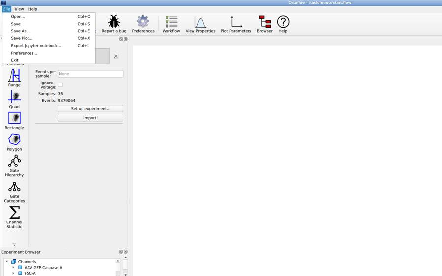
text(await tools.exec_command({cmd:"cu click 66 102\ncu screenshot /tmp/screen.png",max_output_tokens:1000}));
image((await tools.view_image({path:"/tmp/screen.png"})).image_url);
Script completed Wall time 0.2 seconds Output:
{"chunk_id":"4d2327","wall_time_seconds":0.013736816,"exit_code":0,"original_token_count":4,"output":"/tmp/screen.png\n"}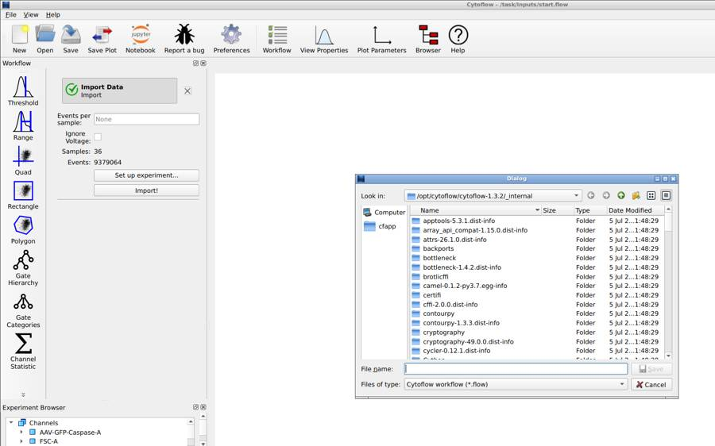
text(await tools.exec_command({cmd:"cu click 995 746\ncu paste '/task/outputs/workflow.flow'\ncu click 1311 743\ncu screenshot /tmp/screen.png",max_output_tokens:1000}));
image((await tools.view_image({path:"/tmp/screen.png"})).image_url);
text(await tools.write_stdin({session_id:31284,chars:"",yield_time_ms:1000,max_output_tokens:1000}));
Script completed Wall time 1.6 seconds Output:
{"chunk_id":"fb98ae","wall_time_seconds":1.443113911,"exit_code":0,"original_token_count":4,"output":"/tmp/screen.png\n"}
{"chunk_id":"46a027","wall_time_seconds":0.0000027,"exit_code":0,"original_token_count":4,"output":"/tmp/screen.png\n"}text(await tools.exec_command({cmd:"cu click 45 458\ncu screenshot /tmp/screen.png",max_output_tokens:1000}));
image((await tools.view_image({path:"/tmp/screen.png"})).image_url);
Script completed Wall time 0.2 seconds Output:
{"chunk_id":"2da110","wall_time_seconds":0.006080422,"exit_code":0,"original_token_count":4,"output":"/tmp/screen.png\n"}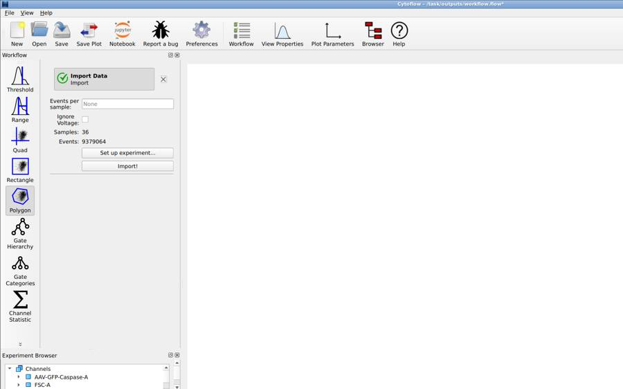
text(await tools.exec_command({cmd:"sleep 2\ncu screenshot /tmp/screen.png",max_output_tokens:1000}));
image((await tools.view_image({path:"/tmp/screen.png"})).image_url);
Script completed Wall time 2.1 seconds Output:
{"chunk_id":"7b3968","wall_time_seconds":1.9019128520000002,"exit_code":0,"original_token_count":4,"output":"/tmp/screen.png\n"}
text(await tools.exec_command({cmd:"cu click 284 322\ncu type 'Cells'\ncu click 354 353\ncu screenshot /tmp/screen.png",max_output_tokens:1000}));
image((await tools.view_image({path:"/tmp/screen.png"})).image_url);
Script completed Wall time 0.4 seconds Output:
{"chunk_id":"a06523","wall_time_seconds":0.23981104,"exit_code":0,"original_token_count":4,"output":"/tmp/screen.png\n"}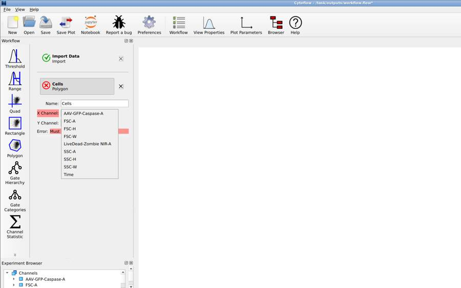
text(await tools.exec_command({cmd:"cu click 219 379\ncu click 352 383\ncu key s\ncu key Return\ncu click 654 69\nsleep 2\ncu screenshot /tmp/screen.png",max_output_tokens:1000}));
image((await tools.view_image({path:"/tmp/screen.png"})).image_url);
Script completed Wall time 2.5 seconds Output:
{"chunk_id":"71c9ce","wall_time_seconds":2.270567746,"exit_code":0,"original_token_count":4,"output":"/tmp/screen.png\n"}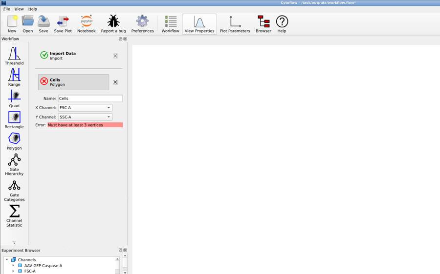
text(await tools.exec_command({cmd:"sleep 4\ncu screenshot /tmp/screen.png",max_output_tokens:1000}));
image((await tools.view_image({path:"/tmp/screen.png"})).image_url);
Script completed Wall time 4.1 seconds Output:
{"chunk_id":"07b03d","wall_time_seconds":3.9173779509999997,"exit_code":0,"original_token_count":4,"output":"/tmp/screen.png\n"}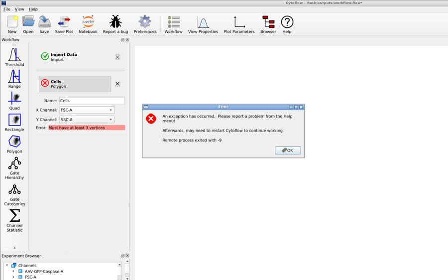
text(await tools.exec_command({cmd:"cu click 925 484\ncu key ctrl+s\nps -eo pid,ppid,rss,cmd --sort=-rss | head -15\ncat /sys/fs/cgroup/memory.max\ncat /sys/fs/cgroup/memory.events\ncu screenshot /tmp/screen.png",max_output_tokens:3000}));
image((await tools.view_image({path:"/tmp/screen.png"})).image_url);
Script completed Wall time 0.2 seconds Output:
{"chunk_id":"33925a","wall_time_seconds":0.049827161,"exit_code":0,"original_token_count":4555,"output":"Warning: truncated output (original token count: 4555)\nTotal output lines: 18\n\n PID PPID RSS CMD\n 842 836 420092 /opt/cytoflow/cytoflow-1.3.2/cytoflow\n 7368 7147 125616 /root/.nvm/versions/node/v22.23.4/lib/node_modules/@openai/codex/node_modules/@openai/codex-linux-x64/vendor/x86_64-unknown-linux-musl/bin/codex exec --dangerously-bypass-approvals-and-sandbox --skip-git-repo-check --model gpt-6-astra --json --enable unified_exec -c model_reasoning_effort=xhigh -- # Gate one plate: caspase-3/7 + Zombie NIR in GRN-KO iPSC neurons (36 wells) **Goal:** in Cytoflow, gate all 36 wells with one gate set, report counts for five fixed populations per well, and flag every well whose data should not be used. ## Start 1. Cytoflow 1.3.2 (on screen) is the analysis tool. All gating, counting and per-well inspection of event data happens in Cytoflow. 2. File → Open → `/task/inputs/start.flow` (enter the path with `cu paste`) → answer **Yes** to run it. Loading takes about 40 s. 3. The Import step is already configured. - One tube per FCS file. - Conditions `well`, `construct`, `stain`, `replicate`, `is_control`, `control_type`, taken from `plate_layout.csv`. - Do not rebuild it. - Leave `Events per sample` empty (full data). 4. Terminal (bash; Python 3 with numpy/pandas/matplotlib/openpyxl; no flow-cytometry libraries). - Use it to read inputs, tabulate tables exported from Cytoflow, and write deliverables. - Do not parse FCS event data in the terminal. ## Experiment | Item | Value | |---|---| | Cells | PGP1 GRN-knockout iPSC-derived neurons | | Treatment | AAV1 transduction at 1e4 vg/cell: 9 GRN RNAswap v2.0 constructs, AAV1-GFP, or no virus; triplicate wells | | Readout | 14 days after transduction; acquired 17-Apr-2023, unfixed, Attune NxT | | Staining | Zombie NIR 1:500, 10 min on adherent cells → Accutase detachment → CellEvent Caspase-3/7 detection reagent 1:1000 in flow staining buffer, 30 min, 37 °C | ## Inputs | Path | Content | |---|---| | `/task/inputs/raw/` | 36 FCS 3.1 files `Caspase_KO_RNAswap-rep2_caspase_Group_<well>.fcs`, wells A1–C12 | | `/task/inputs/plate_layout.csv` | `file, well, construct, stain, replicate, is_control, control_type` | | `/task/inputs/gating_strategy.md` | The scientist's gating strategy (description, no coordinates) | | `/task/inputs/start.flow` | Cytoflow workflow with the Import step configured | ## Channels | Detector | Name shown in Cytoflow | Dye / signal | Marks | |---|---|---|---| | FSC-A, FSC-H, FSC-W | FSC-A, FSC-H, FSC-W | forward scatter | cell size | | SSC-A, SSC-H, SSC-W | SSC-A, SSC-H, SSC-W | side scatter | granularity; SSC-H vs SSC-A for singlets | | BL1-A | `AAV-GFP-Caspase-A` | CellEvent Caspase-3/7 Green | caspase-3/7-active (apoptotic) cells | | RL3-A | `LiveDead-Zombie NIR-A` | Zombie NIR | dead / membrane-compromised cells (bright) | | Time | `Time` | acquisition clock | — | - **BL1-A name is misleading.** `AAV-GFP-Caspase-A` is a reused instrument-template name. In this assay BL1-A is the CellEvent caspase-3/7 detector. - **GFP wells.** In the AAV1-GFP wells (C4–C6), GFP fluorescence is collected in the same detector, BL1-A. - **Punctuation.** If Cytoflow shows a name with punctuation replaced (e.g. underscores), it is the same channel. - No other fluorescence parameters were recorded. ## Plate layout Samples. All are stained with Zombie NIR + CellEvent (`stain` = zombie_caspase). `replicate` is 1/2/3 from left to right. | Wells | construct | |---|---| | A1–A3 | RSV | | A4–A6 | hSyn | | A7–A9 | 9523 | | A10–A12 | 3945 | | B1–B3 | 9421 | | B4–B6 | 3503 | | B7–B9 | 8820 | | B10–B12 | 8790 | | C1–C3 | 3945_3503 (3945 + 3503 combination) | Controls (`is_control` = yes): | Wells | Content | control_type | Use | |---|---|---|---| | C4–C6 | AAV1-GFP, both dyes | transduction_gfp | transduction reference; BL1-A carries GFP + caspase signal | | C7–C9 | no virus, both dyes | untreated_no_virus | untransduced, fully stained reference | | C10 | no virus, no dyes | unstained | unstained position on BL1-A and RL3-A | | C11 | no virus, Zombie NIR only | viability_dye_only | Zombie NIR negative vs bright on RL3-A | | C12 | no virus, CellEvent only | caspase_dye_only | caspase-negative vs positive on BL1-A | ## Populations (report exactly these, in this order) | # | population | parent_population | Definition | |---|---|---|---| | 1 | `Cells` | `All_events` | cells on FSC-A × SSC-A, debris excluded | | 2 | `Single_Cells` | `Cells` | singlets on SSC-H × SSC-A | | 3 | `Live` | `Single_Cells` | Zombie NIR-negative (RL3-A low) | | 4 | `Caspase_pos` | `Live` | CellEvent-positive live cells (early apoptotic) | | 5 | `Late_apoptosis` | `Single_Cells` | CellEvent-positive and Zombie NIR-bright | Gate shapes and channels are given in `gating_strategy.md`. ## Gating rules - **One operation per population.** Each population is one Cytoflow gate operation (Polygon, Rectangle, Range or Threshold). Its name must be exactly the population name above. - **Hierarchy.** - Cytoflow evaluates every gate on all events. - A population's membership is its own gate AND all its ancestors' gates. - Draw each gate with the view subset set to its parent chain. - Compute counts with the full ancestor chain. - **One gate set for all 36 wells.** No per-well gates. - **Raw (uncompensated) data only.** Do not add Bleedthrough, Autofluorescence or any other operation that changes channel values. - **FlowClean.** It may be used for inspection only. Do not use its output to define or filter any reported population. - **Getting counts per well.** - Use Channel Statistic (function Count, grouped by `well`, with the appropriate subset) → Table view → export CSV. - Intermediate exports may go in `/task/outputs/work/`. ## Deliverables (all in `/task/outputs/`) | File | Content | |---|---| | `workflow.flow` | Saved from Cytoflow (File → Sa
… [6,131 more characters not shown]text(await tools.exec_command({cmd:"head -100 /task/outputs/workflow.flow\nfree -m\nls /sys/fs/cgroup\nps -p 836 -o pid,args\nls /opt/cytoflow",max_output_tokens:4000}));
Script completed
Wall time 0.0 seconds
Output:
{"chunk_id":"aa7a9f","wall_time_seconds":0.00000355,"exit_code":0,"original_token_count":601,"output":"- !workflow-item;5\n channels:\n - AAV-GFP-Caspase-A\n - FSC-A\n - FSC-H\n - FSC-W\n - LiveDead-Zombie NIR-A\n - SSC-A\n - SSC-H\n - SSC-W\n - Time\n conditions:\n construct: &id001 !pandas-series;3\n data:\n - '3503'\n - '3945'\n - '3945_3503'\n - '8790'\n - '8820'\n - '9421'\n - '9523'\n - AAV1_GFP\n - RSV\n - hSyn\n - no_virus\n dtype: object\n index: !pandas-index;1\n dtype: int64\n name: null\n values:\n - 5\n - 3\n - 8\n - 7\n - 6\n - 4\n - 2\n - 9\n - 0\n - 1\n - 10\n control_type: &id002 !pandas-series;3\n data:\n - caspase_dye_only\n - none\n - transduction_gfp\n - unstained\n - untreated_no_virus\n - viability_dye_only\n dtype: object\n index: !pandas-index;1\n dtype: int64\n name: null\n values:\n - 5\n - 0\n - 1\n - 3\n - 2\n - 4\n is_control: &id003 !pandas-series;3\n data:\n - 'no'\n - 'yes'\n dtype: object\n index: !pandas-rangeindex;1\n name: null\n start: 0\n step: 1\n stop: 2\n replicate: &id004 !pandas-series;3\n data:\n - '1'\n - '2'\n - '3'\n dtype: object\n index: !pandas-rangeindex;1\n name: null\n start: 0\n step: 1\n stop: 3\n stain: &id005 !pandas-series;3\n data:\n - caspase_only\n - none\n - zombie_caspase\n - zombie_only\n dtype: object\n index: !pandas-index;1\n dtype: int64\n name: null\n values:\n - 3\n - 1\n - 0\n - 2\n well: &id006 !pandas-series;3\n data:\n - A1\n - A10\n total used free shared buff/cache available\nMem: 7949 886 6782 15 529 7062\nSwap: 0 0 0\ncgroup.controllers\ncgroup.max.depth\ncgroup.max.descendants\ncgroup.pressure\ncgroup.procs\ncgroup.stat\ncgroup.subtree_control\ncgroup.threads\ncpu.pressure\ncpu.stat\ncpu.stat.local\ncpuset.cpus.effective\ncpuset.cpus.isolated\ncpuset.mems.effective\nio.pressure\nio.stat\nmemory.numa_stat\nmemory.pressure\nmemory.reclaim\nmemory.stat\nmemory.zswap.writeback\nmisc.capacity\nmisc.current\nmisc.peak\n PID COMMAND\n 836 /bin/bash /usr/local/bin/start-cytoflow\ncytoflow-1.3.2\n"}text(await tools.exec_command({cmd:"cat /usr/local/bin/start-cytoflow\ncu key alt+F4\nsleep 2\ncu screenshot /tmp/screen.png",max_output_tokens:3000}));
image((await tools.view_image({path:"/tmp/screen.png"})).image_url);
Script completed Wall time 2.1 seconds Output:
{"chunk_id":"0f2a17","wall_time_seconds":1.9327927950000001,"exit_code":0,"original_token_count":82,"output":"#!/bin/bash\n# Launch Cytoflow full-screen-ish; restart it if the agent closes it.\nBIN=$(find /opt/cytoflow -maxdepth 3 -type f -name 'cytoflow' -perm -u+x | head -1)\n[ -z \"$BIN\" ] && { echo \"cytoflow binary not found under /opt/cytoflow\"; exit 1; }\nwhile true; do\n \"$BIN\" >/tmp/cytoflow.log 2>&1\n sleep 1\ndone\n/tmp/screen.png\n"}
text(await tools.exec_command({cmd:"sleep 5\ncu screenshot /tmp/screen.png",max_output_tokens:1000}));
image((await tools.view_image({path:"/tmp/screen.png"})).image_url);
Script completed Wall time 5.1 seconds Output:
{"chunk_id":"d521df","wall_time_seconds":4.902516082,"exit_code":0,"original_token_count":4,"output":"/tmp/screen.png\n"}
text(await tools.exec_command({cmd:"cu click 61 31\ncu screenshot /tmp/screen.png",max_output_tokens:1000}));
image((await tools.view_image({path:"/tmp/screen.png"})).image_url);
Script completed Wall time 0.2 seconds Output:
{"chunk_id":"4fdfd0","wall_time_seconds":0.006154783,"exit_code":0,"original_token_count":4,"output":"/tmp/screen.png\n"}
text(await tools.exec_command({cmd:"cu key Escape\ncu key alt+F10\ncu screenshot /tmp/screen.png\nxwininfo -root -tree | head -20",max_output_tokens:1500}));
image((await tools.view_image({path:"/tmp/screen.png"})).image_url);
Script completed Wall time 0.1 seconds Output:
{"chunk_id":"cf4e36","wall_time_seconds":0.00000366,"exit_code":0,"original_token_count":219,"output":"/tmp/screen.png\n\nxwininfo: Window id: 0x21f (the root window) (has no name)\n\n Root window id: 0x21f (the root window) (has no name)\n Parent window id: 0x0 (none)\n 15 children:\n 0xe0000e \"cytoflow\": (\"cytoflow\" \"cytoflow\") 213x170+44+41 +44+41\n 0xe00008 \"cytoflow\": () 1x1+0+0 +0+0\n 0xe00004 \"Qt Selection Owner for cytoflow\": () 3x3+0+0 +0+0\n 0xc0000e \"Openbox\": (\"\" (none)) 1x1+-100+-100 +-100+-100\n 0xc00062 (has no name): () 1x1+0+0 +0+0\n 1 child:\n 0xc00063 (has no name): () 1x1+0+0 +1+1\n 0xc00060 (has no name): () 1x1+0+0 +0+0\n 1 child:\n 0xc00061 (has no name): () 1x1+0+0 +1+1\n 0xc0005d (has no name): () 1x1+0+0 +0+0\n 1 child:\n 0xc0005e (has no name): () 1x1+0+0 +1+1\n 0xc00059 (has no name): (\"OPENBOX_FOCUS_CYCLE_POPUP\" \"OPENBOX_FOCUS_CYCLE_POPUP\") 1x1+0+0 +0+0\n"}text(await tools.exec_command({cmd:"xwininfo -root -tree | tail -24\ncu key alt+F10\ncu click 90 67\ncu paste '/task/outputs/workflow.flow'\ncu screenshot /tmp/screen.png",max_output_tokens:2000}));
image((await tools.view_image({path:"/tmp/screen.png"})).image_url);
Script completed Wall time 1.6 seconds Output:
{"chunk_id":"37062e","wall_time_seconds":1.376372763,"exit_code":0,"original_token_count":288,"output":" 0xc00568 (has no name): () 12x12+0+0 +1+1\n 0xc00567 (has no name): () 12x12+2066+3 +2067+4\n 0xc00566 (has no name): () 12x12+2050+3 +2051+4\n 0xc00565 (has no name): () 1978x14+52+2 +53+3\n 0xc00562 (has no name): () 4x18+2078+0 +2079+1\n 0xc00561 (has no name): () 25x3+2057+0 +2058+1\n 0xc00560 (has no name): () 4x18+0+0 +1+1\n 0xc0055f (has no name): () 25x3+0+0 +1+1\n 0xc0055e (has no name): () 2032x3+25+0 +26+1\n 0xc00552 (has no name): () 1x1+0+0 +0+0\n 2 children:\n 0xc00554 (has no name): () 1x1+0+0 +0+0\n 0xc00553 (has no name): () 1x1+0+0 +0+0\n 0xc00551 (has no name): () 1x1+0+0 +0+0\n 1 child:\n 0xc00556 (has no name): () 1x1+0+0 +0+0\n 0xc00550 (has no name): () 1x1+0+0 +0+0\n 0xc0054f (has no name): () 1x1+0+0 +0+0\n 1 child:\n 0xc00555 (has no name): () 1x1+0+0 +0+0\n 0xc0054d (has no name): () 2082x1171+1+20 +1+20\n 1 child:\n 0xc0054e (has no name): () 2082x1171+0+0 +1+20\n\n/tmp/screen.png\n"}
text(await tools.exec_command({cmd:"cu click 1313 745\nsleep 1\ncu click 748 450\nxrandr\ncommand -v wmctrl\ncu screenshot /tmp/screen.png",max_output_tokens:1000}));
image((await tools.view_image({path:"/tmp/screen.png"})).image_url);
Script completed Wall time 1.3 seconds Output:
{"chunk_id":"357e0a","wall_time_seconds":1.119576597,"exit_code":0,"original_token_count":37,"output":"Screen 0: minimum 1 x 1, current 1440 x 900, maximum 1440 x 900\nscreen connected 1440x900+0+0 0mm x 0mm\n 1440x900 0.00* \n/tmp/screen.png\n"}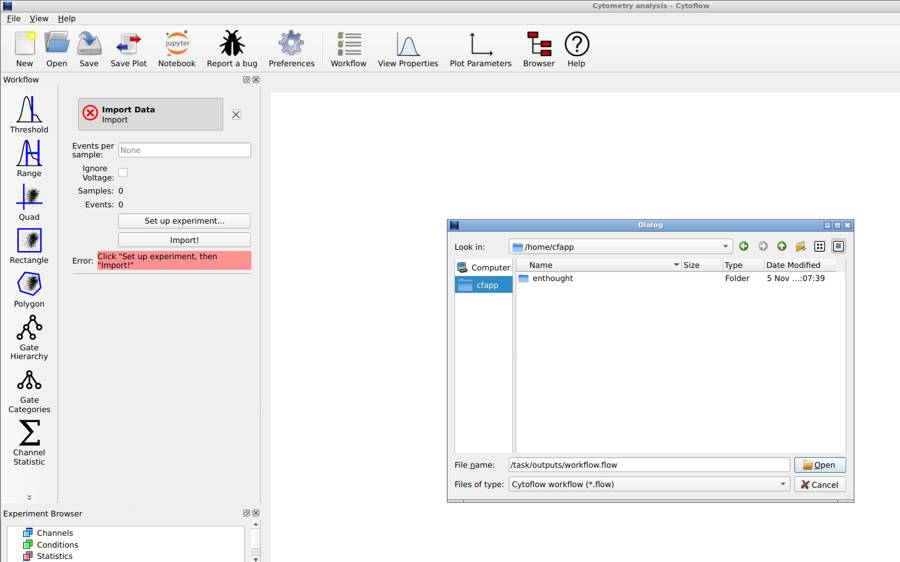
text(await tools.exec_command({cmd:"cu click 1312 745\nsleep 2\ncu screenshot /tmp/screen.png\ncommand -v xdotool",max_output_tokens:1000}));
image((await tools.view_image({path:"/tmp/screen.png"})).image_url);
Script completed Wall time 2.2 seconds Output:
{"chunk_id":"994e46","wall_time_seconds":2.008766767,"exit_code":0,"original_token_count":9,"output":"/tmp/screen.png\n/usr/bin/xdotool\n"}
text(await tools.exec_command({cmd:"cu click 748 449\nxdotool search --name '^Cytoflow - /task/outputs/workflow.flow' getwindowgeometry\nxdotool search --name '^Cytoflow - /task/outputs/workflow.flow' windowsize 1440 880\nsleep 2\ncu screenshot /tmp/screen.png",max_output_tokens:1000}));
image((await tools.view_image({path:"/tmp/screen.png"})).image_url);
Script completed Wall time 2.2 seconds Output:
{"chunk_id":"1a6fa8","wall_time_seconds":2.028535035,"exit_code":0,"original_token_count":21,"output":"Window 14680070\n Position: 2,40 (screen: 0)\n Geometry: 2082x1171\n/tmp/screen.png\n"}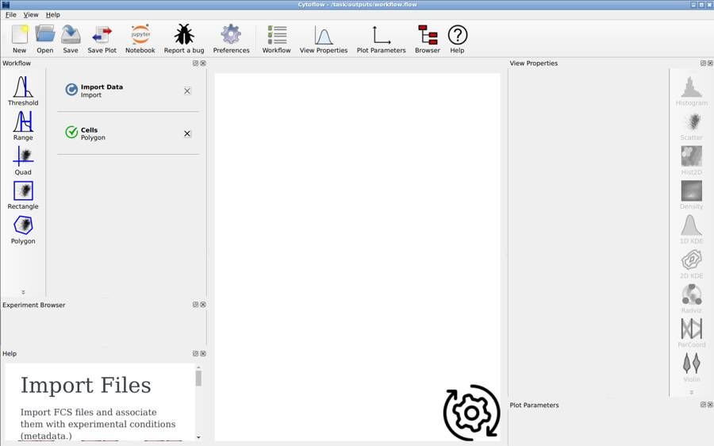
text(await tools.exec_command({cmd:"cu click 410 714\ncu click 409 615\nsleep 25\ncu click 222 268\nsleep 2\ncu screenshot /tmp/screen.png",yield_time_ms:1000,max_output_tokens:1000}));
Script completed
Wall time 1.2 seconds
Output:
{"chunk_id":"61cd69","wall_time_seconds":1.000299047,"session_id":37224,"original_token_count":0,"output":""}text(await tools.write_stdin({session_id:37224,chars:"",yield_time_ms:1000,max_output_tokens:1000}));
text(await tools.exec_command({cmd:"ps -C cytoflow -o pid,rss,comm\ncu screenshot /tmp/screen.png",max_output_tokens:1000}));
image((await tools.view_image({path:"/tmp/screen.png"})).image_url);
Script completed Wall time 5.1 seconds Output:
{"chunk_id":"cdbf0e","wall_time_seconds":5.001016233,"session_id":37224,"original_token_count":0,"output":""}{"chunk_id":"b89457","wall_time_seconds":0.00000336,"exit_code":0,"original_token_count":31,"output":" PID RSS COMMAND\n 860 0 cytoflow\n 7637 526248 cytoflow\n 7648 39416 cytoflow\n 7650 2256112 cytoflow\n/tmp/screen.png\n"}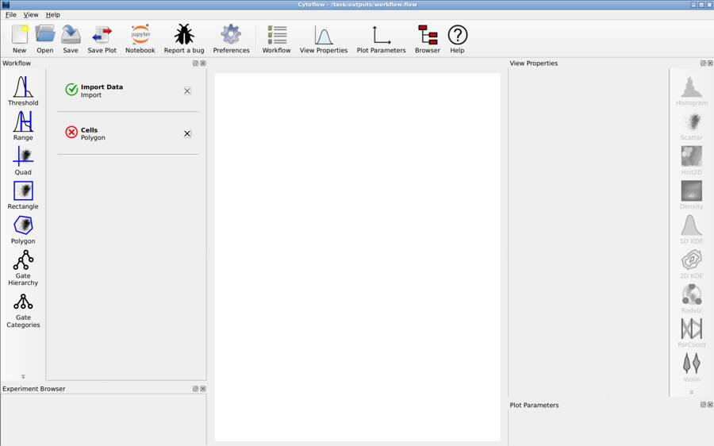
text(await tools.exec_command({cmd:"cu click 229 268\nsleep 1\ncu screenshot /tmp/screen.png",max_output_tokens:1000}));
image((await tools.view_image({path:"/tmp/screen.png"})).image_url);
Script completed Wall time 1.2 seconds Output:
{"chunk_id":"465e6e","wall_time_seconds":1.017410844,"exit_code":0,"original_token_count":4,"output":"/tmp/screen.png\n"}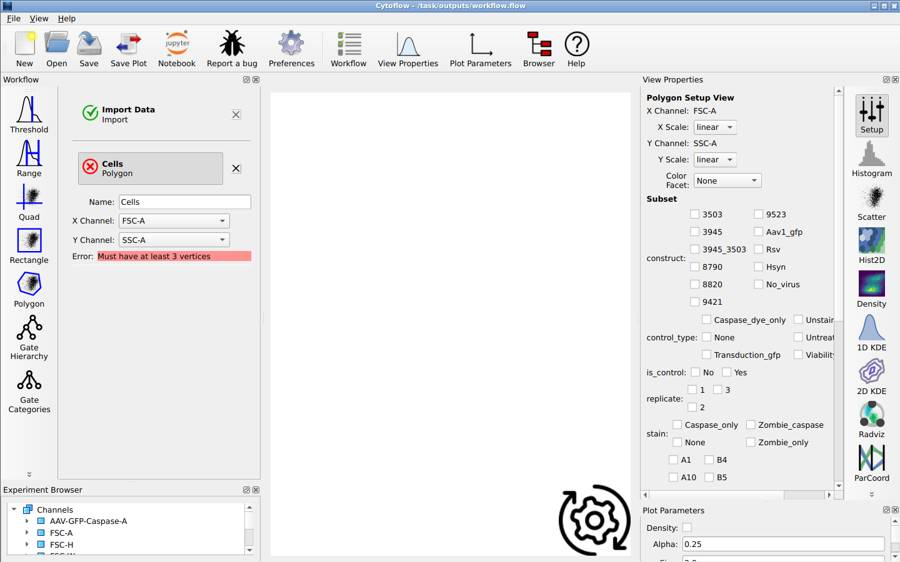
text(await tools.exec_command({cmd:"cu click 1077 737\nsleep 8\ncu screenshot /tmp/screen.png",yield_time_ms:1000,max_output_tokens:1000}));
Script completed
Wall time 1.5 seconds
Output:
{"chunk_id":"715859","wall_time_seconds":1.000953677,"session_id":68340,"original_token_count":0,"output":""}text(await tools.write_stdin({session_id:68340,chars:"",yield_time_ms:1000,max_output_tokens:1000}));
text(await tools.write_stdin({session_id:37224,chars:"",yield_time_ms:1000,max_output_tokens:1000}));
image((await tools.view_image({path:"/tmp/screen.png"})).image_url);
Script completed Wall time 1.3 seconds Output:
{"chunk_id":"c65458","wall_time_seconds":1.267040318,"exit_code":0,"original_token_count":4,"output":"/tmp/screen.png\n"}{"chunk_id":"9f4094","wall_time_seconds":9.6e-7,"exit_code":0,"original_token_count":4,"output":"/tmp/screen.png\n"}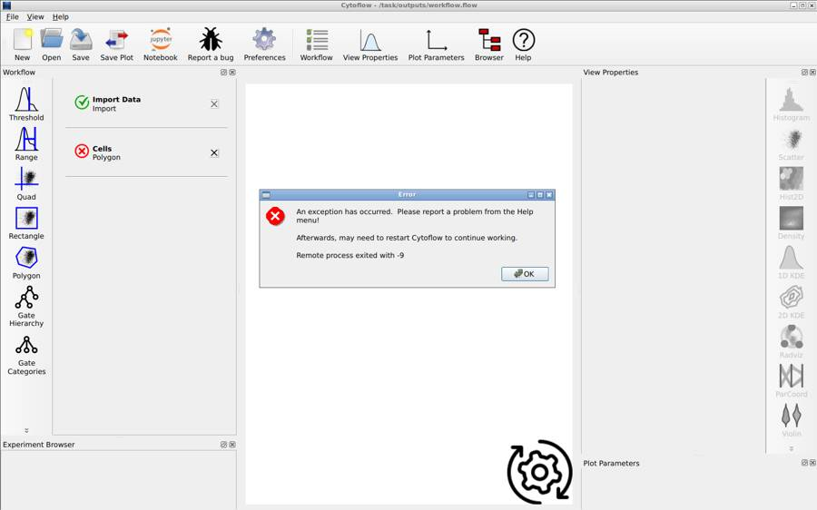
text(await tools.exec_command({cmd:"cu click 926 484\ncu click 233 267\nsleep 1\ncu screenshot /tmp/screen.png\ncu key ctrl+s\ntail -100 /task/outputs/workflow.flow\ntail -20 /tmp/cytoflow.log",max_output_tokens:4000}));
image((await tools.view_image({path:"/tmp/screen.png"})).image_url);
Script completed Wall time 1.3 seconds Output:
{"chunk_id":"9b180a","wall_time_seconds":1.157800622,"exit_code":0,"original_token_count":491,"output":"/tmp/screen.png\n - '9421'\n - '9523'\n - AAV1_GFP\n - RSV\n - hSyn\n - no_virus\n - !category-subset;1\n name: control_type\n selected: []\n values:\n - caspase_dye_only\n - none\n - transduction_gfp\n - unstained\n - untreated_no_virus\n - viability_dye_only\n - !category-subset;1\n name: is_control\n selected: []\n values:\n - 'no'\n - 'yes'\n - !category-subset;1\n name: replicate\n selected: []\n values:\n - '1'\n - '2'\n - '3'\n - !category-subset;1\n name: stain\n selected: []\n values:\n - caspase_only\n - none\n - zombie_caspase\n - zombie_only\n - !category-subset;1\n name: well\n selected: []\n values:\n - A1\n - A10\n - A11\n - A12\n - A2\n - A3\n - A4\n - A5\n - A6\n - A7\n - A8\n - A9\n - B1\n - B10\n - B11\n - B12\n - B2\n - B3\n - B4\n - B5\n - B6\n - B7\n - B8\n - B9\n - C1\n - C10\n - C11\n - C12\n - C2\n - C3\n - C4\n - C5\n - C6\n - C7\n - C8\n - C9\n metadata:\n AAV-GFP-Caspase-A: *id007\n FSC-A: *id008\n FSC-H: *id009\n FSC-W: *id010\n LiveDead-Zombie NIR-A: *id011\n SSC-A: *id012\n SSC-H: *id013\n SSC-W: *id014\n Time: *id015\n construct: *id016\n control_type: *id017\n ignore_v: *id018\n is_control: *id019\n name_metadata: $PnS\n replicate: *id020\n stain: *id021\n well: *id022\n operation: *id023\n statistics:\n Conditions: *id024\n views:\n - *id025\nQXcbIntegration: Cannot create platform OpenGL context, neither GLX nor EGL are enabled\n2026-11-05 00:11:42,138 ERROR:root:Remote process exited with -9\n2026-11-05 00:11:55,251 ERROR:root:Error: BrokenPipeError: [Errno 32] Broken pipe\n\nLocation: File \"multiprocessing/connection.py\", line 384, in _send\nThread: local workflow send\n"}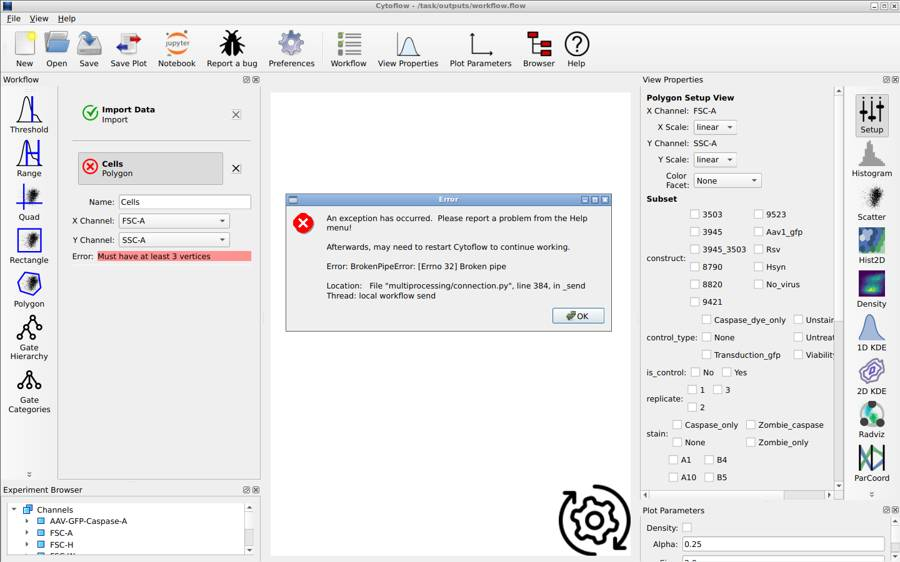
text(await tools.exec_command({cmd:"cu click 924 504\ncu click 1078 737\ncu key ctrl+s\nsleep 1\ncu screenshot /tmp/screen.png\ntail -65 /task/outputs/workflow.flow",max_output_tokens:2000}));
image((await tools.view_image({path:"/tmp/screen.png"})).image_url);
Script completed Wall time 1.3 seconds Output:
{"chunk_id":"00ebe2","wall_time_seconds":1.155282891,"exit_code":0,"original_token_count":287,"output":"/tmp/screen.png\n - 'yes'\n - !pandas-index;1\n dtype: object\n name: replicate\n values:\n - '1'\n - '2'\n - '3'\n - !pandas-index;1\n dtype: object\n name: stain\n values:\n - caspase_only\n - none\n - zombie_caspase\n - zombie_only\n - !pandas-index;1\n dtype: object\n name: well\n values:\n - A1\n - A10\n - A11\n - A12\n - A2\n - A3\n - A4\n - A5\n - A6\n - A7\n - A8\n - A9\n - B1\n - B10\n - B11\n - B12\n - B2\n - B3\n - B4\n - B5\n - B6\n - B7\n - B8\n - B9\n - C1\n - C10\n - C11\n - C12\n - C2\n - C3\n - C4\n - C5\n - C6\n - C7\n - C8\n - C9\n names:\n - construct\n - control_type\n - is_control\n - replicate\n - stain\n - well\n views:\n - *id002\n"}text(await tools.exec_command({cmd:"cu key alt+F4\nsleep 6\ncu click 90 68\nsleep 1\ncu paste '/task/outputs/workflow.flow'\nsleep 1\ncu screenshot /tmp/screen.png",yield_time_ms:1000,max_output_tokens:1000}));
Script completed
Wall time 1.2 seconds
Output:
{"chunk_id":"cbe3c6","wall_time_seconds":1.001256617,"session_id":42675,"original_token_count":0,"output":""}text(await tools.write_stdin({session_id:42675,chars:"",yield_time_ms:1000,max_output_tokens:1000}));
image((await tools.view_image({path:"/tmp/screen.png"})).image_url);
text(await tools.clock__curr_time({}));
Script completed Wall time 3.8 seconds Output:
{"chunk_id":"88be72","wall_time_seconds":3.805173175,"exit_code":0,"original_token_count":4,"output":"/tmp/screen.png\n"}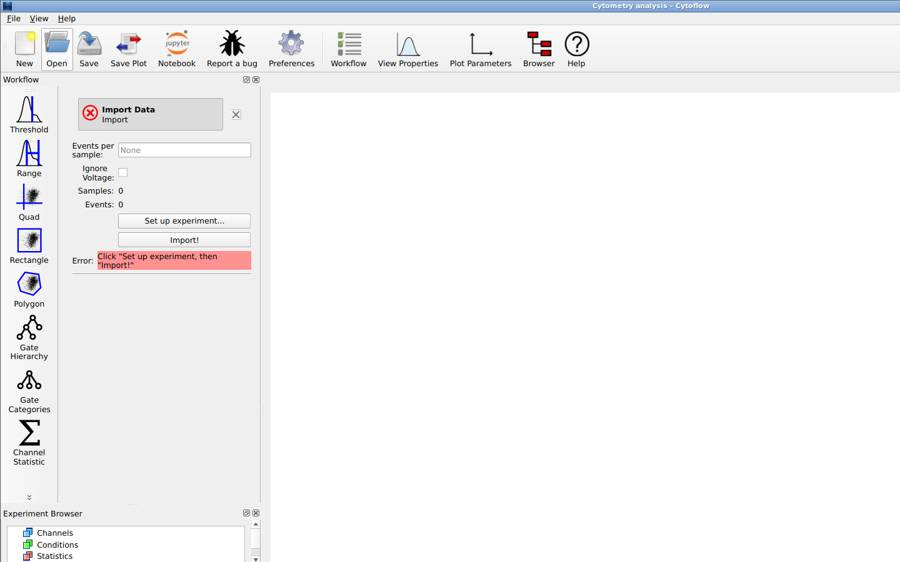
{"current_time":"2026-11-05 00:12:17 UTC"}text(await tools.exec_command({cmd:"xdotool search --name '^Cytometry analysis - Cytoflow' windowsize 1440 880\ncu click 91 67\nsleep 1\ncu screenshot /tmp/screen.png",max_output_tokens:1000}));
image((await tools.view_image({path:"/tmp/screen.png"})).image_url);
Script completed Wall time 1.2 seconds Output:
{"chunk_id":"8323e5","wall_time_seconds":1.025130357,"exit_code":0,"original_token_count":4,"output":"/tmp/screen.png\n"}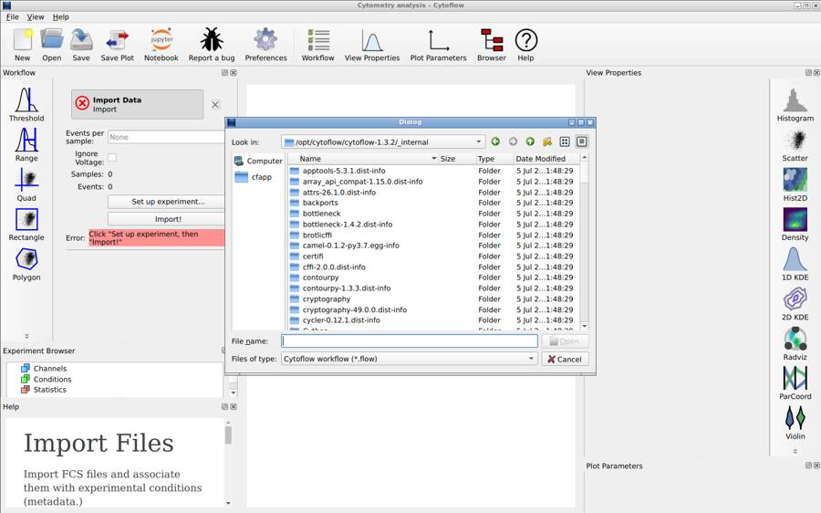
text(await tools.exec_command({cmd:"cu paste '/task/outputs/workflow.flow'\nsleep 0.4\ncu click 992 597\nsleep 1\ncu screenshot /tmp/screen.png",max_output_tokens:1000}));
image((await tools.view_image({path:"/tmp/screen.png"})).image_url);
Script completed Wall time 2.9 seconds Output:
{"chunk_id":"c7c93f","wall_time_seconds":2.7489932550000002,"exit_code":0,"original_token_count":4,"output":"/tmp/screen.png\n"}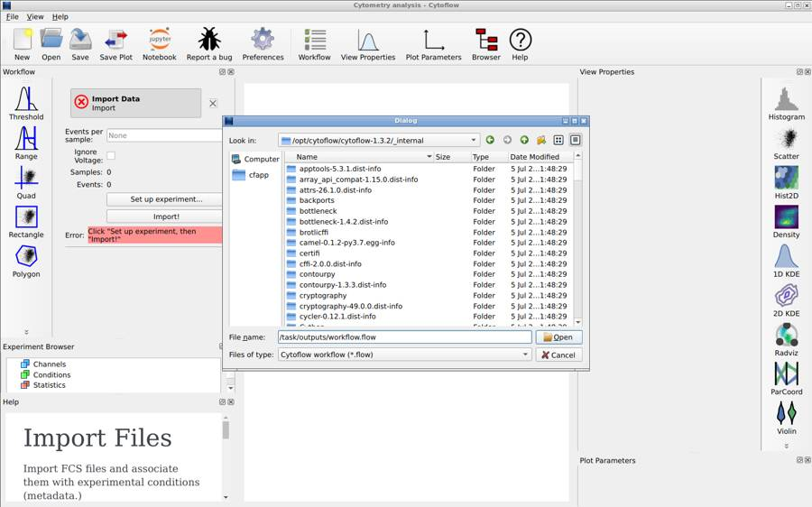
text(await tools.exec_command({cmd:"cu click 991 598\nsleep 0.6\ncu click 748 449\nsleep 35\ncu screenshot /tmp/screen.png",yield_time_ms:1000,max_output_tokens:1000}));
Script completed
Wall time 1.2 seconds
Output:
{"chunk_id":"1f6fb5","wall_time_seconds":1.001241597,"session_id":14690,"original_token_count":0,"output":""}text(await tools.write_stdin({session_id:14690,chars:"",yield_time_ms:1000,max_output_tokens:1000}));
text(await tools.exec_command({cmd:"rg -n -A 4 -B 2 'selected:|density:|xscale:|yscale:' /task/outputs/workflow.flow | head -50\ncu screenshot /tmp/screen.png",max_output_tokens:2000}));
image((await tools.view_image({path:"/tmp/screen.png"})).image_url);
Script completed Wall time 5.1 seconds Output:
{"chunk_id":"7ca317","wall_time_seconds":5.001253663,"session_id":14690,"original_token_count":0,"output":""}{"chunk_id":"ab89a1","wall_time_seconds":0.00000367,"exit_code":0,"original_token_count":293,"output":"1158- vertices: []\n1159- xchannel: FSC-A\n1160: xscale: linear\n1161- ychannel: SSC-A\n1162: yscale: linear\n1163- plot_params: !polygon-params;1\n1164- alpha: 0.25\n1165- col_wrap: null\n1166: density: false\n1167- despine: true\n1168- gridsize: 50\n1169- huelabel: ''\n1170- legend: true\n--\n1191- - !category-subset;1\n1192- name: construct\n1193: selected: []\n1194- values:\n1195- - '3503'\n1196- - '3945'\n1197- - '3945_3503'\n--\n1206- - !category-subset;1\n1207- name: control_type\n1208: selected: []\n1209- values:\n1210- - caspase_dye_only\n1211- - none\n1212- - transduction_gfp\n--\n1216- - !category-subset;1\n1217- name: is_control\n1218: selected: []\n1219- values:\n1220- - 'no'\n1221- - 'yes'\n1222- - !category-subset;1\n1223- name: replicate\n1224: selected: []\n1225- values:\n1226- - '1'\n1227- - '2'\n1228- - '3'\n1229- - !category-subset;1\n1230- name: stain\n1231: selected: []\n1232- values:\n1233- - caspase_only\n1234- - none\n1235- - zombie_caspase\n/tmp/screen.png\n"}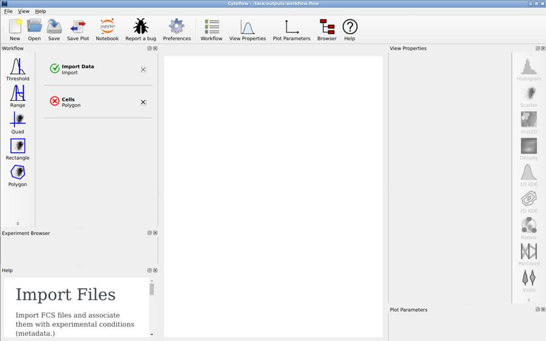
text(await tools.exec_command({cmd:"cu click 409 714\ncu click 223 266\nsleep 3\ncu screenshot /tmp/screen.png",max_output_tokens:1000}));
image((await tools.view_image({path:"/tmp/screen.png"})).image_url);
Script completed Wall time 3.3 seconds Output:
{"chunk_id":"3c0dc6","wall_time_seconds":3.122925871,"exit_code":0,"original_token_count":4,"output":"/tmp/screen.png\n"}text(await tools.exec_command({cmd:"sleep 3\ncu screenshot /tmp/screen.png\nps -C cytoflow -o pid,rss,comm",max_output_tokens:1000}));
image((await tools.view_image({path:"/tmp/screen.png"})).image_url);
Script completed Wall time 3.1 seconds Output:
{"chunk_id":"3cbd4f","wall_time_seconds":2.934128012,"exit_code":0,"original_token_count":36,"output":"/tmp/screen.png\n PID RSS COMMAND\n 860 0 cytoflow\n 7648 0 cytoflow\n 7887 542052 cytoflow\n 7898 39164 cytoflow\n 7900 2248196 cytoflow\n"}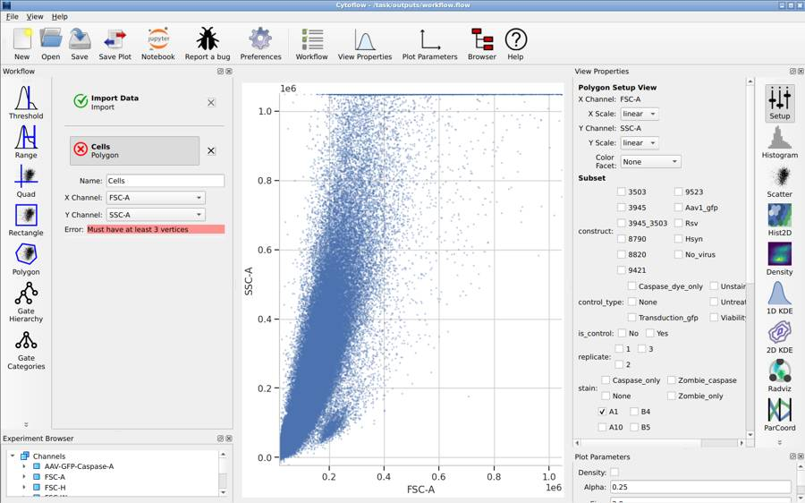
text(await tools.exec_command({cmd:"cu click 1167 203\ncu screenshot /tmp/screen.png",max_output_tokens:1000}));
image((await tools.view_image({path:"/tmp/screen.png"})).image_url);
Script completed Wall time 0.2 seconds Output:
{"chunk_id":"d94b77","wall_time_seconds":0.026588131,"exit_code":0,"original_token_count":4,"output":"/tmp/screen.png\n"}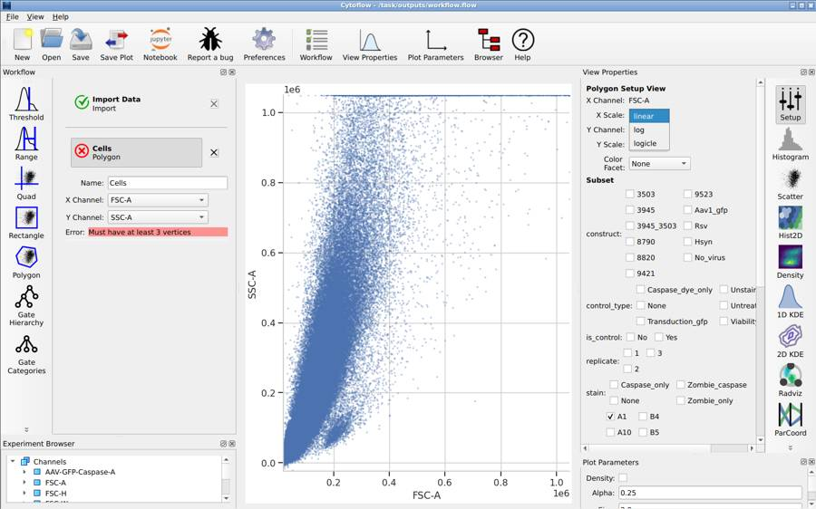
text(await tools.exec_command({cmd:"cu click 1139 254\ncu click 1169 255\ncu key End\ncu key Return\nsleep 3\ncu screenshot /tmp/screen.png",max_output_tokens:1000}));
image((await tools.view_image({path:"/tmp/screen.png"})).image_url);
Script completed Wall time 3.3 seconds Output:
{"chunk_id":"21e616","wall_time_seconds":3.165033878,"exit_code":0,"original_token_count":4,"output":"/tmp/screen.png\n"}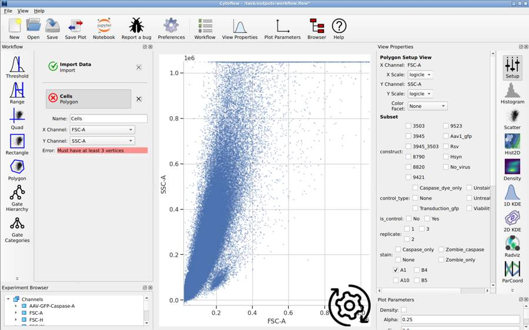
text(await tools.exec_command({cmd:"sleep 3\ncu screenshot /tmp/screen.png",max_output_tokens:1000}));
image((await tools.view_image({path:"/tmp/screen.png"})).image_url);
Script completed Wall time 3.1 seconds Output:
{"chunk_id":"707210","wall_time_seconds":2.922518147,"exit_code":0,"original_token_count":4,"output":"/tmp/screen.png\n"}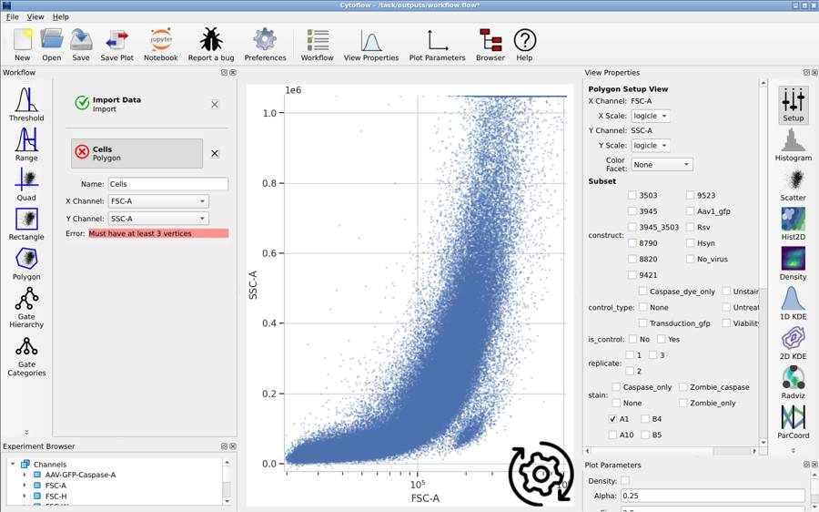
text(await tools.exec_command({cmd:"sleep 4\ncu screenshot /tmp/screen.png",max_output_tokens:1000}));
image((await tools.view_image({path:"/tmp/screen.png"})).image_url);
Script completed Wall time 4.1 seconds Output:
{"chunk_id":"8ed562","wall_time_seconds":3.920468473,"exit_code":0,"original_token_count":4,"output":"/tmp/screen.png\n"}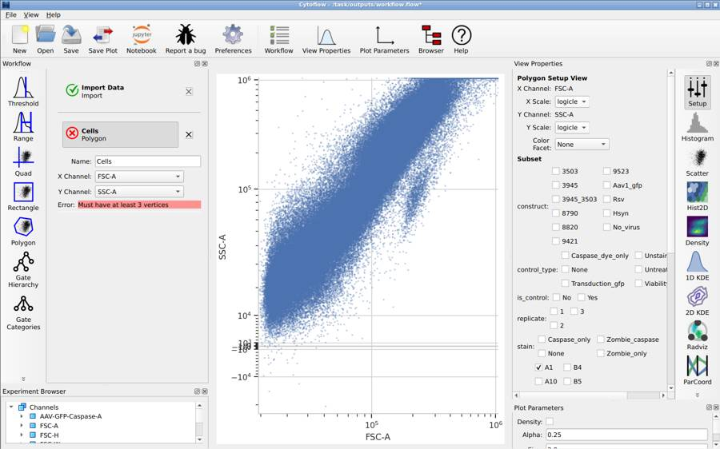
text(await tools.exec_command({cmd:"cu click 1099 844\nsleep 5\ncu screenshot /tmp/screen.png",max_output_tokens:1000}));
image((await tools.view_image({path:"/tmp/screen.png"})).image_url);
Script completed Wall time 5.2 seconds Output:
{"chunk_id":"7786a2","wall_time_seconds":5.026999844,"exit_code":0,"original_token_count":4,"output":"/tmp/screen.png\n"}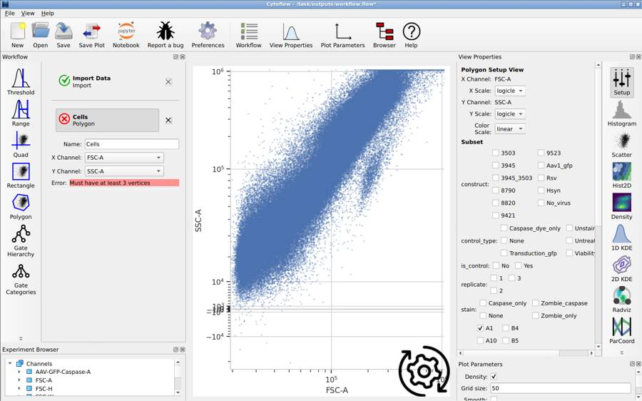
text(await tools.exec_command({cmd:"sleep 6\ncu screenshot /tmp/screen.png",max_output_tokens:1000}));
image((await tools.view_image({path:"/tmp/screen.png"})).image_url);
Script completed Wall time 6.1 seconds Output:
{"chunk_id":"fa0939","wall_time_seconds":5.913160603,"exit_code":0,"original_token_count":4,"output":"/tmp/screen.png\n"}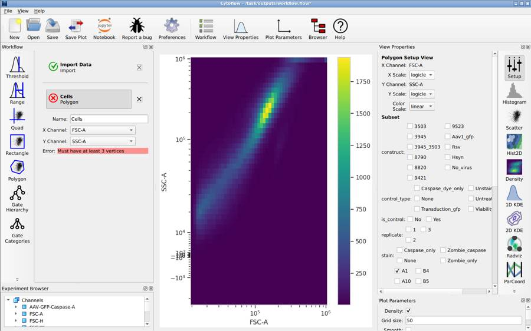
text(await tools.exec_command({cmd:"cu drag 1172 804 1172 558\ncu screenshot /tmp/screen.png",max_output_tokens:1000}));
image((await tools.view_image({path:"/tmp/screen.png"})).image_url);
Script completed Wall time 0.1 seconds Output:
{"chunk_id":"2635df","wall_time_seconds":0.00000357,"exit_code":0,"original_token_count":4,"output":"/tmp/screen.png\n"}text(await tools.exec_command({cmd:"cu click 1244 678\ncu key ctrl+a\ncu type '0'\ncu click 1245 707\ncu key ctrl+a\ncu type '1200000'\ncu click 1246 737\ncu key ctrl+a\ncu type '0'\ncu click 1247 769\ncu key ctrl+a\ncu type '1200000'\ncu key Tab\nsleep 12\ncu screenshot /tmp/screen.png",yield_time_ms:1000,max_output_tokens:1000}));
Script completed
Wall time 1.2 seconds
Output:
{"chunk_id":"183e0a","wall_time_seconds":1.001176027,"session_id":3150,"original_token_count":0,"output":""}text(await tools.write_stdin({session_id:3150,chars:"",yield_time_ms:1000,max_output_tokens:1000}));
image((await tools.view_image({path:"/tmp/screen.png"})).image_url);
Script completed Wall time 5.0 seconds Output:
{"chunk_id":"ad1028","wall_time_seconds":5.000265802,"session_id":3150,"original_token_count":0,"output":""}text(await tools.write_stdin({session_id:3150,chars:"",yield_time_ms:1000,max_output_tokens:1000}));
text(await tools.exec_command({cmd:"cu screenshot /tmp/screen.png",max_output_tokens:1000}));
image((await tools.view_image({path:"/tmp/screen.png"})).image_url);
Script completed Wall time 0.1 seconds Output:
{"chunk_id":"4d5d93","wall_time_seconds":0.00000267,"exit_code":0,"original_token_count":4,"output":"/tmp/screen.png\n"}{"chunk_id":"670360","wall_time_seconds":0.00000287,"exit_code":0,"original_token_count":4,"output":"/tmp/screen.png\n"}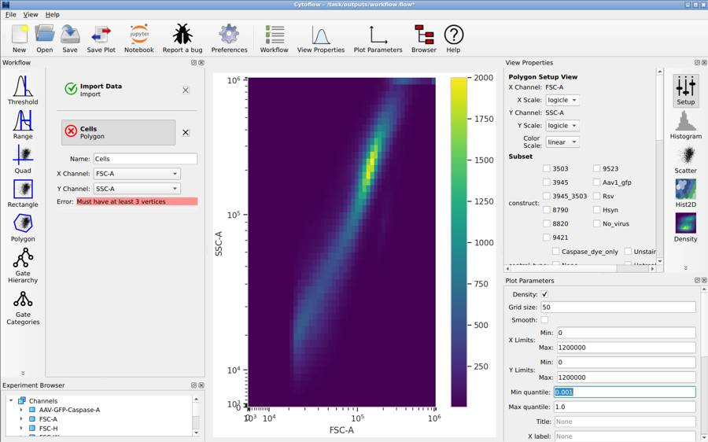
text(await tools.exec_command({cmd:"cu click 667 693\ncu click 667 425\ncu click 719 159\ncu click 885 159\ncu click 885 478\ncu click 765 691\ncu click 667 693 double\nsleep 7\ncu key ctrl+s\ncu screenshot /tmp/screen.png",yield_time_ms:15000,max_output_tokens:1000}));
image((await tools.view_image({path:"/tmp/screen.png"})).image_url);
Script completed Wall time 8.0 seconds Output:
{"chunk_id":"86bb2f","wall_time_seconds":7.784115252,"exit_code":0,"original_token_count":4,"output":"/tmp/screen.png\n"}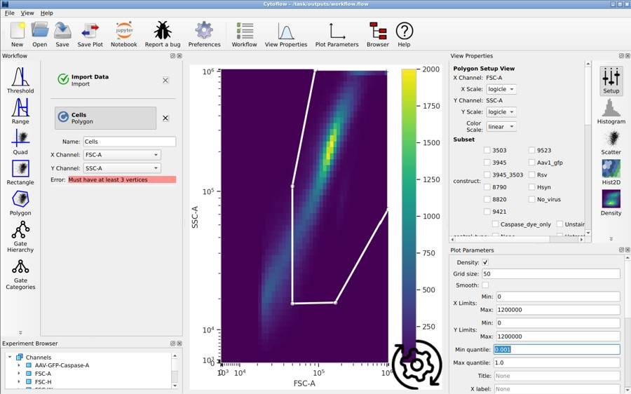
text(await tools.exec_command({cmd:"sleep 8\ncu click 46 458\nsleep 2\ncu screenshot /tmp/screen.png",yield_time_ms:15000,max_output_tokens:1000}));
image((await tools.view_image({path:"/tmp/screen.png"})).image_url);
Script completed Wall time 10.2 seconds Output:
{"chunk_id":"6efa64","wall_time_seconds":10.023884645,"exit_code":0,"original_token_count":4,"output":"/tmp/screen.png\n"}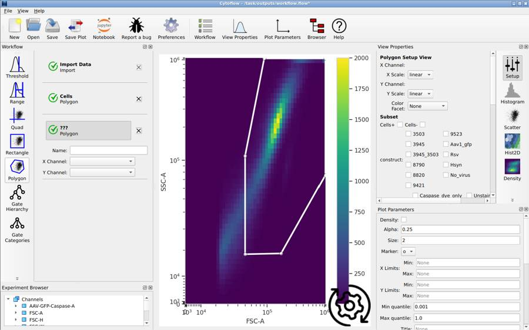
text(await tools.exec_command({cmd:"cu click 271 410\ncu type 'Single_Cells'\ncu click 1089 340\ncu drag 1178 560 1178 803\ncu scroll 1284 722 down 5\ncu screenshot /tmp/screen.png",max_output_tokens:1000}));
image((await tools.view_image({path:"/tmp/screen.png"})).image_url);
Script completed Wall time 1.1 seconds Output:
{"chunk_id":"430f23","wall_time_seconds":0.971082354,"exit_code":0,"original_token_count":4,"output":"/tmp/screen.png\n"}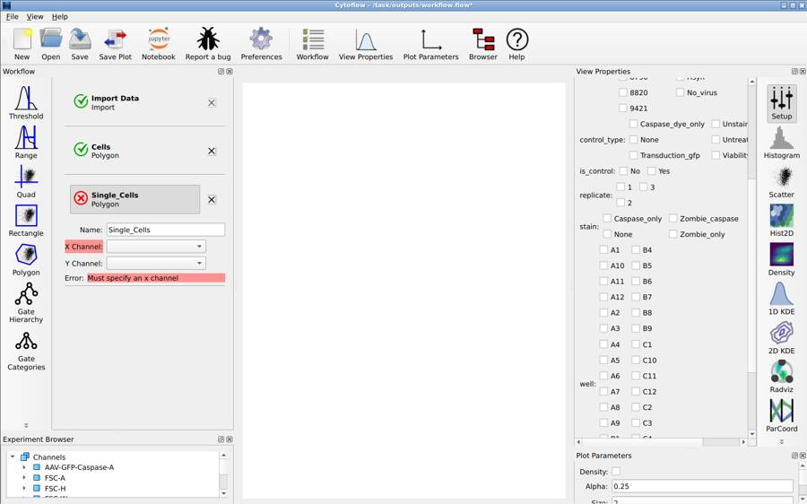
text(await tools.exec_command({cmd:"cu click 1077 446\ncu click 355 440\ncu key Home\ncu key Down\ncu key Down\ncu key Down\ncu key Down\ncu key Down\ncu key Down\ncu key Return\ncu click 355 471\ncu key Home\ncu key Down\ncu key Down\ncu key Down\ncu key Down\ncu key Down\ncu key Return\ncu scroll 1281 312 up 14\nsleep 8\ncu screenshot /tmp/screen.png",yield_time_ms:15000,max_output_tokens:1000}));
image((await tools.view_image({path:"/tmp/screen.png"})).image_url);
Script completed Wall time 10.1 seconds Output:
{"chunk_id":"89579d","wall_time_seconds":9.878114934,"exit_code":0,"original_token_count":4,"output":"/tmp/screen.png\n"}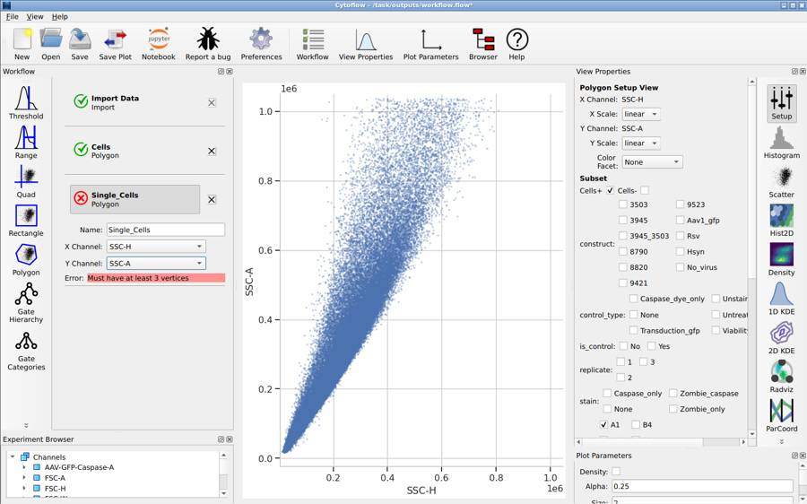
text(await tools.exec_command({cmd:"rg -n -A 28 'vertices:' /task/outputs/workflow.flow | head -35",max_output_tokens:1000}));
Script completed
Wall time 0.0 seconds
Output:
{"chunk_id":"84846f","wall_time_seconds":0.00000311,"exit_code":0,"original_token_count":216,"output":"1158: vertices:\n1159- - !!python/tuple\n1160- - 50054.77387219477\n1161- - 18343.380392789724\n1162- - !!python/tuple\n1163- - 50054.77387219477\n1164- - 109033.63761121107\n1165- - !!python/tuple\n1166- - 91114.61469809612\n1167- - 1037726.4468947031\n1168- - !!python/tuple\n1169- - 1042333.8099890861\n1170- - 1037726.4468947031\n1171- - !!python/tuple\n1172- - 1042333.8099890861\n1173- - 75362.21080563442\n1174- - !!python/tuple\n1175- - 165599.57688555733\n1176- - 18655.94441914301\n1177- xchannel: FSC-A\n1178- xscale: logicle\n1179- ychannel: SSC-A\n1180- yscale: logicle\n1181- plot_params: !polygon-params;1\n1182- alpha: 0.25\n1183- col_wrap: null\n1184- density: true\n1185- despine: true\n1186- gridsize: 50\n"}text(await tools.exec_command({cmd:"sed -n '1180,1220p' /task/outputs/workflow.flow",max_output_tokens:1000}));
Script completed
Wall time 0.0 seconds
Output:
{"chunk_id":"1dd889","wall_time_seconds":0.00000342,"exit_code":0,"original_token_count":201,"output":" yscale: logicle\n plot_params: !polygon-params;1\n alpha: 0.25\n col_wrap: null\n density: true\n despine: true\n gridsize: 50\n huelabel: ''\n legend: true\n marker: o\n max_quantile: 1.0\n min_quantile: 0.001\n s: 2.0\n sharex: true\n sharey: true\n smoothed: false\n smoothed_sigma: 1.0\n sns_context: notebook\n sns_style: whitegrid\n title: ''\n xlabel: ''\n xlim: !!python/tuple\n - 0.0\n - 1200000.0\n ylabel: ''\n ylim: !!python/tuple\n - 0.0\n - 1200000.0\n subset_list:\n - !category-subset;1\n name: construct\n selected: []\n values:\n - '3503'\n - '3945'\n - '3945_3503'\n - '8790'\n - '8820'\n - '9421'\n - '9523'\n - AAV1_GFP\n"}text(await tools.exec_command({cmd:"cu click 510 807\ncu click 511 779\ncu click 770 174\ncu click 958 174\ncu click 524 790\ncu click 510 807 double\nsleep 13\ncu key ctrl+s\ncu click 46 387\nsleep 2\ncu screenshot /tmp/screen.png",yield_time_ms:20000,max_output_tokens:1000}));
image((await tools.view_image({path:"/tmp/screen.png"})).image_url);
Script completed Wall time 16.0 seconds Output:
{"chunk_id":"029eb3","wall_time_seconds":15.785213764,"exit_code":0,"original_token_count":4,"output":"/tmp/screen.png\n"}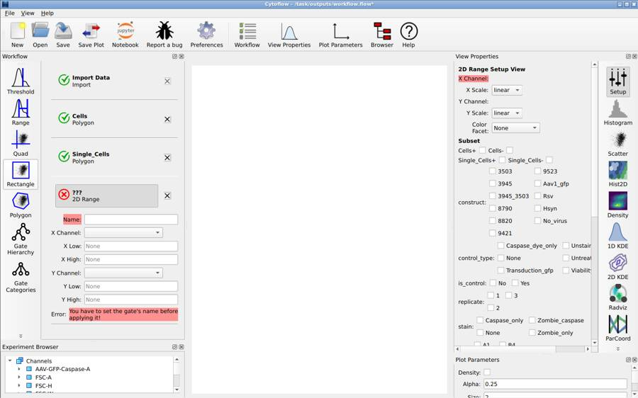
text(await tools.exec_command({cmd:"cu click 269 495\ncu type 'Live'\ncu click 1088 339\ncu click 1133 361\ncu scroll 1282 708 down 6\ncu screenshot /tmp/screen.png",max_output_tokens:1000}));
image((await tools.view_image({path:"/tmp/screen.png"})).image_url);
Script completed Wall time 1.1 seconds Output:
{"chunk_id":"b1a789","wall_time_seconds":0.938693821,"exit_code":0,"original_token_count":4,"output":"/tmp/screen.png\n"}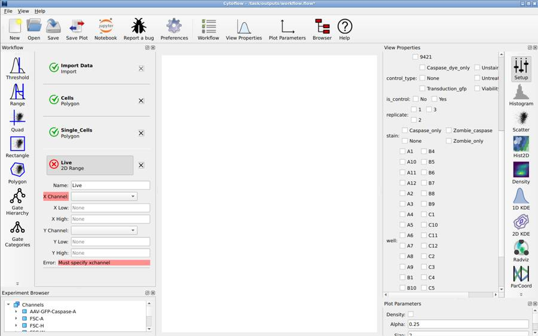
text(await tools.exec_command({cmd:"cu click 1134 602\ncu click 354 525\ncu key Home\ncu key Return\ncu click 354 618\ncu key Home\ncu key Down\ncu key Down\ncu key Down\ncu key Down\ncu key Return\ncu scroll 1279 301 up 15\ncu click 1167 203\ncu key End\ncu key Return\ncu click 1168 255\ncu key End\ncu key Return\nsleep 12\ncu screenshot /tmp/screen.png",yield_time_ms:20000,max_output_tokens:1000}));
image((await tools.view_image({path:"/tmp/screen.png"})).image_url);
Script completed Wall time 14.4 seconds Output:
{"chunk_id":"0b32f6","wall_time_seconds":14.192234681,"exit_code":0,"original_token_count":4,"output":"/tmp/screen.png\n"}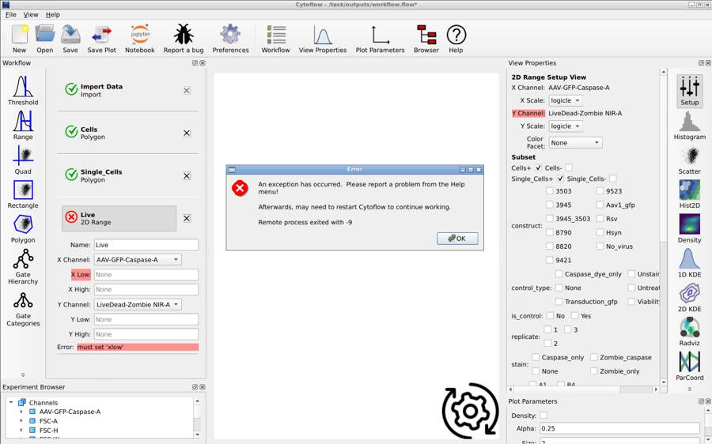
text(await tools.exec_command({cmd:"cu click 925 484\ncu key ctrl+s\nsleep 1\nrg -n -A 2 -B 1 'name: well|selected:|name: Cells|name: Single_Cells' /task/outputs/workflow.flow | tail -70\nfree -m\ncu screenshot /tmp/screen.png",max_output_tokens:2000}));
image((await tools.view_image({path:"/tmp/screen.png"})).image_url);
Script completed Wall time 1.3 seconds Output:
{"chunk_id":"886e9a","wall_time_seconds":1.064259193,"exit_code":0,"original_token_count":400,"output":"2052: selected: []\n2053- values:\n2054- - caspase_dye_only\n--\n2061- name: is_control\n2062: selected: []\n2063- values:\n2064- - 'no'\n--\n2067- name: replicate\n2068: selected: []\n2069- values:\n2070- - '1'\n--\n2074- name: stain\n2075: selected: []\n2076- values:\n2077- - caspase_only\n--\n2081- - !category-subset;1\n2082: name: well\n2083: selected:\n2084- - A1\n2085- values:\n--\n2553- dtype: object\n2554: name: well\n2555- values:\n2556- - A1\n--\n2657- - !bool-subset;1\n2658: name: Cells\n2659- selected_f: false\n2660- selected_t: true\n--\n2662- - !bool-subset;1\n2663: name: Single_Cells\n2664- selected_f: false\n2665- selected_t: true\n--\n2668- name: construct\n2669: selected: []\n2670- values:\n2671- - '3503'\n--\n2683- name: control_type\n2684: selected: []\n2685- values:\n2686- - caspase_dye_only\n--\n2693- name: is_control\n2694: selected: []\n2695- values:\n2696- - 'no'\n--\n2699- name: replicate\n2700: selected: []\n2701- values:\n2702- - '1'\n--\n2706- name: stain\n2707: selected: []\n2708- values:\n2709- - caspase_only\n--\n2713- - !category-subset;1\n2714: name: well\n2715: selected:\n2716- - C10\n2717- values:\n total used free shared buff/cache available\nMem: 7949 925 6818 15 474 7023\nSwap: 0 0 0\n/tmp/screen.png\n"}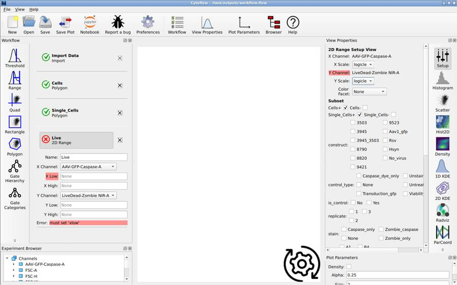
text(await tools.exec_command({cmd:"cu key alt+F4\nsleep 10\nxdotool search --name '^Cytometry analysis - Cytoflow' windowsize 1440 880\ncu click 90 67\nsleep 1\ncu paste '/task/outputs/workflow.flow'\nsleep 0.6\ncu key Return\nsleep 0.5\ncu key Return\nsleep 1\ncu screenshot /tmp/screen.png",yield_time_ms:20000,max_output_tokens:1000}));
image((await tools.view_image({path:"/tmp/screen.png"})).image_url);
Script completed Wall time 14.7 seconds Output:
{"chunk_id":"03fb91","wall_time_seconds":14.514853975,"exit_code":0,"original_token_count":4,"output":"/tmp/screen.png\n"}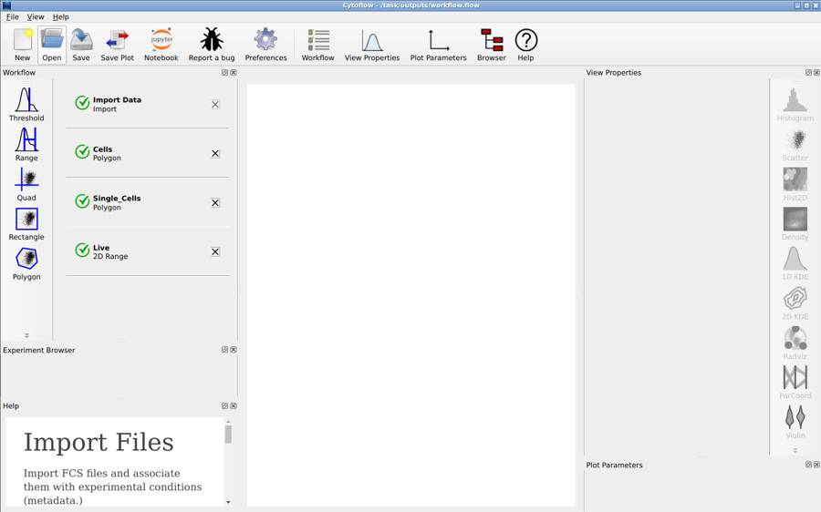
text(await tools.exec_command({cmd:"cu click 410 714\nsleep 35\ncu click 227 443\nsleep 10\ncu screenshot /tmp/screen.png\nps -C cytoflow -o pid,rss,comm",yield_time_ms:1000,max_output_tokens:1000}));
Script completed
Wall time 1.2 seconds
Output:
{"chunk_id":"65a6eb","wall_time_seconds":1.001186977,"session_id":89814,"original_token_count":0,"output":""}text(await tools.write_stdin({session_id:89814,chars:"",yield_time_ms:1000,max_output_tokens:1000}));
text(await tools.clock__curr_time({}));
Script completed
Wall time 5.0 seconds
Output:
{"chunk_id":"eba164","wall_time_seconds":5.001315463,"session_id":89814,"original_token_count":0,"output":""}
{"current_time":"2026-11-05 00:18:16 UTC"}text(await tools.write_stdin({session_id:89814,chars:"",yield_time_ms:1000,max_output_tokens:1000}));
if ((await tools.exec_command({cmd:"test -f /tmp/screen.png",max_output_tokens:100})).exit_code===0) {text(await tools.exec_command({cmd:"cu screenshot /tmp/screen.png",max_output_tokens:100}));image((await tools.view_image({path:"/tmp/screen.png"})).image_url);}
Script completed Wall time 5.1 seconds Output:
{"chunk_id":"a3f9cf","wall_time_seconds":5.001079663,"session_id":89814,"original_token_count":0,"output":""}{"chunk_id":"edc90b","wall_time_seconds":0.00000375,"exit_code":0,"original_token_count":4,"output":"/tmp/screen.png\n"}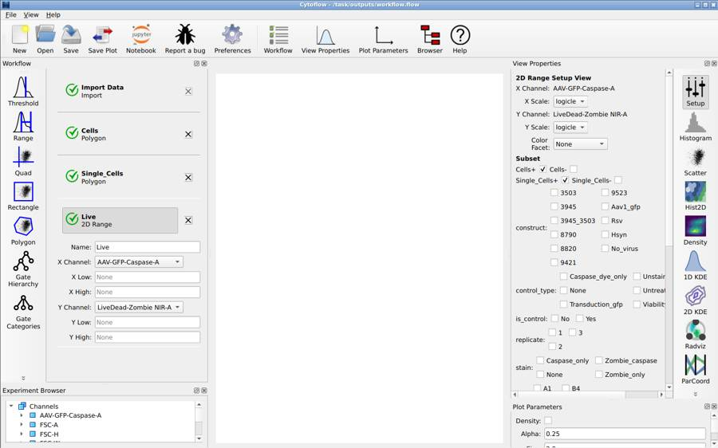
text(await tools.write_stdin({session_id:89814,chars:"",yield_time_ms:1000,max_output_tokens:1000}));
text(await tools.exec_command({cmd:"cu click 225 180\ncu screenshot /tmp/screen.png",max_output_tokens:1000}));
image((await tools.view_image({path:"/tmp/screen.png"})).image_url);
Script completed Wall time 0.2 seconds Output:
{"chunk_id":"a0a6c9","wall_time_seconds":0.00000279,"exit_code":0,"original_token_count":41,"output":"/tmp/screen.png\n PID RSS COMMAND\n 860 0 cytoflow\n 7648 0 cytoflow\n 7898 0 cytoflow\n 8412 541248 cytoflow\n 8423 39324 cytoflow\n 8425 335076 cytoflow\n"}{"chunk_id":"cea33f","wall_time_seconds":0.013822845,"exit_code":0,"original_token_count":4,"output":"/tmp/screen.png\n"}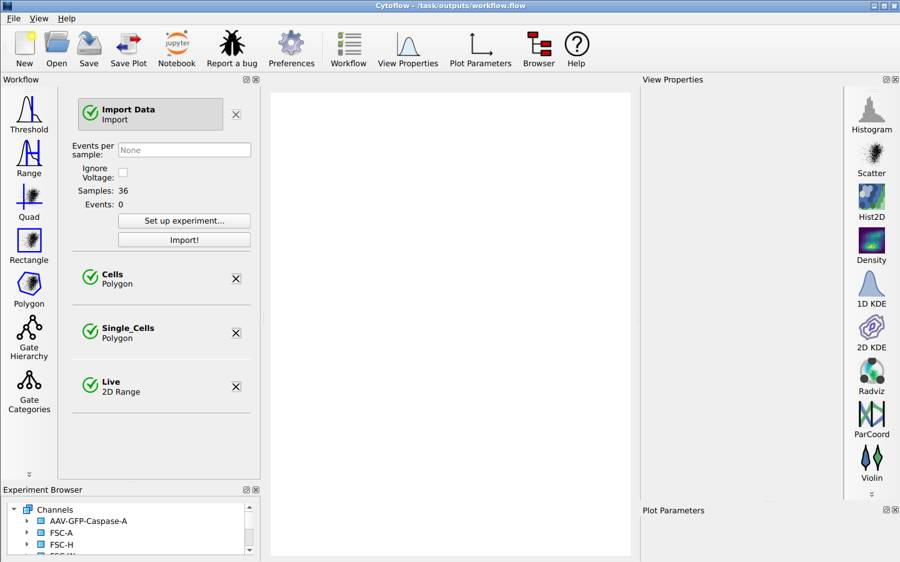
text(await tools.exec_command({cmd:"cu click 297 383\nsleep 42\ncu click 229 617\nsleep 8\ncu screenshot /tmp/screen.png\nps -C cytoflow -o pid,rss,comm",yield_time_ms:1000,max_output_tokens:1000}));
Script completed
Wall time 1.2 seconds
Output:
{"chunk_id":"4c6fd2","wall_time_seconds":1.001241887,"session_id":71234,"original_token_count":0,"output":""}text(await tools.write_stdin({session_id:71234,chars:"",yield_time_ms:1000,max_output_tokens:1000}));
text(await tools.exec_command({cmd:"ps -C cytoflow -o pid,rss,comm\ncu screenshot /tmp/screen.png",max_output_tokens:1000}));
image((await tools.view_image({path:"/tmp/screen.png"})).image_url);
Script completed Wall time 5.1 seconds Output:
{"chunk_id":"524434","wall_time_seconds":5.001680033,"session_id":71234,"original_token_count":0,"output":""}{"chunk_id":"711d2c","wall_time_seconds":0.00000354,"exit_code":0,"original_token_count":42,"output":" PID RSS COMMAND\n 860 0 cytoflow\n 7648 0 cytoflow\n 7898 0 cytoflow\n 8412 542688 cytoflow\n 8423 39324 cytoflow\n 8425 2279788 cytoflow\n/tmp/screen.png\n"}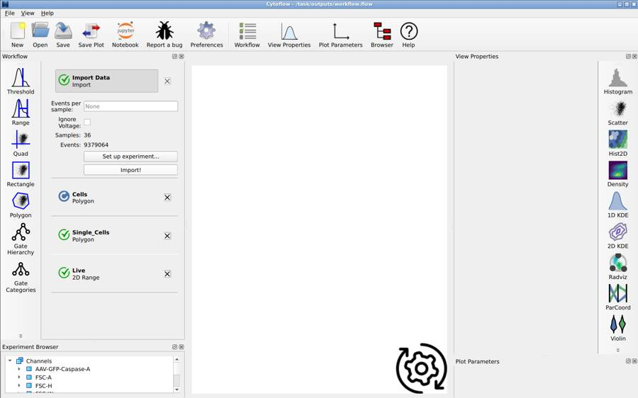
text(await tools.write_stdin({session_id:71234,chars:"",yield_time_ms:1000,max_output_tokens:1000}));
text(await tools.exec_command({cmd:"sleep 20\ncu screenshot /tmp/screen.png\nps -C cytoflow -o pid,rss,comm",yield_time_ms:25000,max_output_tokens:1000}));
image((await tools.view_image({path:"/tmp/screen.png"})).image_url);
Script completed Wall time 25.1 seconds Output:
{"chunk_id":"7bccac","wall_time_seconds":5.000896582,"session_id":71234,"original_token_count":0,"output":""}{"chunk_id":"ec818d","wall_time_seconds":19.919532516,"exit_code":0,"original_token_count":36,"output":"/tmp/screen.png\n PID RSS COMMAND\n 860 0 cytoflow\n 7648 0 cytoflow\n 7898 0 cytoflow\n 8412 395604 cytoflow\n 8423 22092 cytoflow\n"}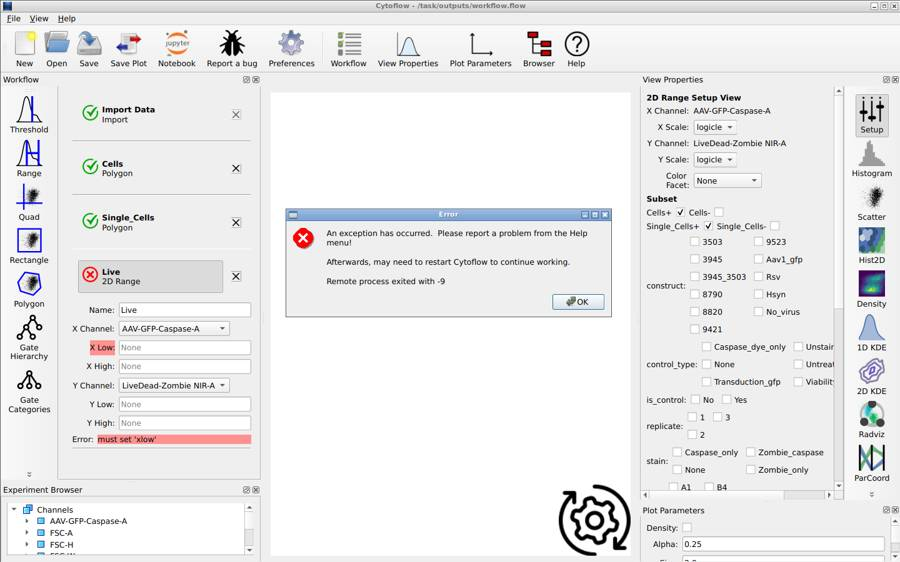
text(await tools.exec_command({cmd:"dmesg | tail -20\ncat /proc/self/cgroup\nls -l /tmp/cytoflow.log\n tail -15 /tmp/cytoflow.log\nrg -n -A 6 'LiveDead-Zombie NIR-A:' /task/outputs/workflow.flow | head -20",max_output_tokens:2500}));
Script completed
Wall time 0.1 seconds
Output:
{"chunk_id":"78e4e8","wall_time_seconds":0.00000385,"exit_code":0,"original_token_count":828,"output":"[ 727.014584] [ 834] 0 834 1187 82 80 2 0 45056 0 0 runuser\n[ 727.014662] [ 835] 1001 835 35774 1562 1560 2 0 131072 0 0 openbox\n[ 727.014744] [ 836] 1002 836 1191 71 69 2 0 49152 0 0 start-cytoflow\n[ 727.014806] [ 7147] 0 7147 2249 1142 1140 2 0 61440 0 0 bash\n[ 727.014865] [ 7368] 0 7368 192470 24665 24663 2 0 1183744 0 0 codex\n[ 727.014928] [ 7369] 0 7369 786 29 28 1 0 45056 0 0 tee\n[ 727.014996] [ 7456] 0 7456 362697968 1257 1255 2 0 233472 0 0 codex-code-mode\n[ 727.015081] [ 8412] 1002 8412 903720 92285 89738 3 2544 1835008 0 0 cytoflow\n[ 727.015138] [ 8423] 1002 8423 21086 5523 5521 2 0 151552 0 0 cytoflow\n[ 727.015195] [ 8425] 1002 8425 2258839 1831388 1831379 2 7 15380480 0 0 cytoflow\n[ 727.015257] [ 8451] 1002 8451 52306 1872 1870 2 0 299008 0 0 QtWebEngineProc\n[ 727.015328] [ 8472] 1002 8472 52306 1875 1873 2 0 299008 0 0 QtWebEngineProc\n[ 727.015407] [ 8474] 1002 8474 52306 1876 1874 2 0 176128 0 0 QtWebEngineProc\n[ 727.015482] [ 8489] 1002 8489 1309822 3678 3544 2 132 638976 0 300 QtWebEngineProc\n[ 727.015561] [ 8575] 0 8575 1191 71 69 2 0 45056 0 0 bash\n[ 727.015624] [ 8591] 0 8591 1191 70 68 2 0 49152 0 0 bash\n[ 727.015667] [ 8592] 0 8592 784 28 27 1 0 45056 0 0 sleep\n[ 727.015735] [ 8597] 0 8597 784 29 28 1 0 49152 0 0 sleep\n[ 727.015814] oom-kill:constraint=CONSTRAINT_NONE,nodemask=(null),cpuset=/,mems_allowed=0,global_oom,task_memcg=/,task=cytoflow,pid=8425,uid=1002\n[ 727.015931] Out of memory: Killed process 8425 (cytoflow) total-vm:9035356kB, anon-rss:7325516kB, file-rss:8kB, shmem-rss:28kB, UID:1002 pgtables:15020kB oom_score_adj:0\n0::/\n-rw-rw-r-- 1 cfapp cfapp 153 Nov 5 00:19 /tmp/cytoflow.log\nQXcbIntegration: Cannot create platform OpenGL context, neither GLX nor EGL are enabled\n2026-11-05 00:19:37,175 ERROR:root:Remote process exited with -9\n198: LiveDead-Zombie NIR-A:\n199- fcs_name: LiveDead-Zombie NIR-A\n200- range: 1048576.0\n201- type: channel\n202- voltage: '300'\n203- SSC-A:\n204- fcs_name: SSC-A\n--\n1335: LiveDead-Zombie NIR-A:\n1336- fcs_name: LiveDead-Zombie NIR-A\n1337- range: 1048576.0\n1338- type: channel\n1339- voltage: '300'\n1340- SSC-A:\n1341- fcs_name: SSC-A\n--\n2150: LiveDead-Zombie NIR-A: &id020\n2151- fcs_name: LiveDead-Zombie NIR-A\n2152- range: 1048576.0\n2153- type: channel\n"}text(await tools.exec_command({cmd:"df -h /tmp\nid\nswapon --show\nfallocate -l 8G /tmp/cytoflow.swap\nchmod 600 /tmp/cytoflow.swap\nmkswap /tmp/cytoflow.swap\nswapon /tmp/cytoflow.swap\nfree -m",max_output_tokens:1500}));
Script completed
Wall time 0.1 seconds
Output:
{"chunk_id":"780482","wall_time_seconds":0.0000036,"exit_code":0,"original_token_count":113,"output":"Filesystem Size Used Avail Use% Mounted on\n/dev/root 504G 3.6G 501G 1% /\nuid=0(root) gid=0(root) groups=0(root)\nSetting up swapspace version 1, size = 8 GiB (8589930496 bytes)\nno label, UUID=d170a833-b73b-4757-9366-79d08ffe35bb\n total used free shared buff/cache available\nMem: 7949 938 6777 15 501 7010\nSwap: 8191 0 8191\n"}text(await tools.exec_command({cmd:"cu click 925 483\ncu key ctrl+s\ncu key alt+F4\nsleep 10\nxdotool search --name '^Cytometry analysis - Cytoflow' windowsize 1440 880\ncu click 90 67\nsleep 1\ncu paste '/task/outputs/workflow.flow'\nsleep 0.7\ncu key Return\nsleep 1\ncu screenshot /tmp/screen.png",yield_time_ms:20000,max_output_tokens:1000}));
image((await tools.view_image({path:"/tmp/screen.png"})).image_url);
Script completed Wall time 14.4 seconds Output:
{"chunk_id":"52288a","wall_time_seconds":14.23688684,"exit_code":0,"original_token_count":4,"output":"/tmp/screen.png\n"}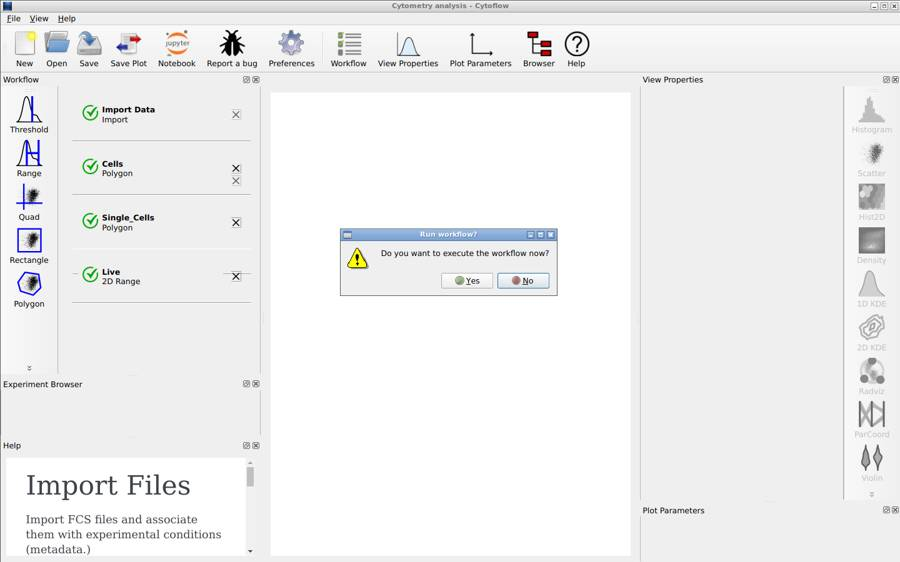
text(await tools.exec_command({cmd:"cu click 748 449\ncu click 410 713\nsleep 50\ncu screenshot /tmp/screen.png",yield_time_ms:1000,max_output_tokens:1000}));
Script completed
Wall time 1.2 seconds
Output:
{"chunk_id":"c8ab55","wall_time_seconds":1.001277837,"session_id":64743,"original_token_count":0,"output":""}text(await tools.write_stdin({session_id:64743,chars:"",yield_time_ms:1000,max_output_tokens:1000}));
text(await tools.exec_command({cmd:"free -m\ncu screenshot /tmp/screen.png",max_output_tokens:1000}));
image((await tools.view_image({path:"/tmp/screen.png"})).image_url);
Script completed Wall time 5.1 seconds Output:
{"chunk_id":"6709f6","wall_time_seconds":5.000964943,"session_id":64743,"original_token_count":0,"output":""}{"chunk_id":"ad3354","wall_time_seconds":0.00000365,"exit_code":0,"original_token_count":56,"output":" total used free shared buff/cache available\nMem: 7949 3184 3765 14 1270 4765\nSwap: 8191 0 8191\n/tmp/screen.png\n"}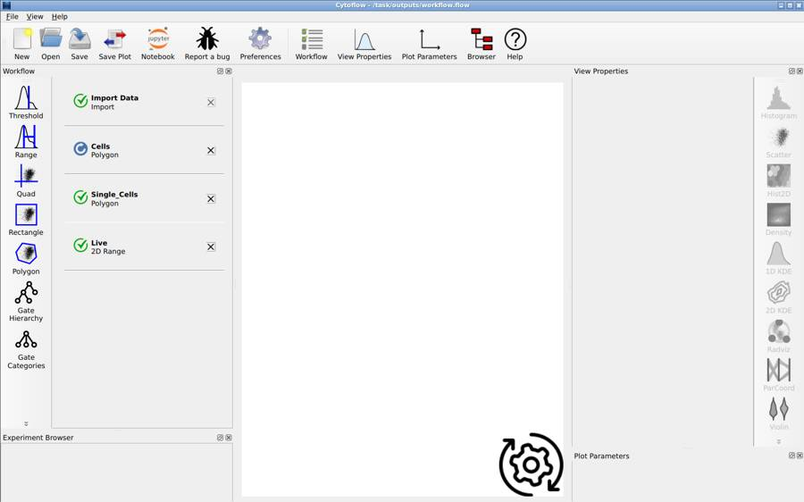
text(await tools.write_stdin({session_id:64743,chars:"",yield_time_ms:1000,max_output_tokens:1000}));
text(await tools.exec_command({cmd:"cu click 230 443\nsleep 15\ncu screenshot /tmp/screen.png\nfree -m",yield_time_ms:20000,max_output_tokens:1000}));
image((await tools.view_image({path:"/tmp/screen.png"})).image_url);
Script completed Wall time 21.2 seconds Output:
{"chunk_id":"f4339e","wall_time_seconds":5.001100443,"session_id":64743,"original_token_count":0,"output":""}{"chunk_id":"b865e4","wall_time_seconds":15.632954301,"exit_code":0,"original_token_count":56,"output":"/tmp/screen.png\n total used free shared buff/cache available\nMem: 7949 7909 131 3 88 40\nSwap: 8191 1330 6861\n"}text(await tools.exec_command({cmd:"sleep 20\ncu scroll 1274 701 down 6\ncu screenshot /tmp/screen.png\nfree -m",yield_time_ms:25000,max_output_tokens:1000}));
image((await tools.view_image({path:"/tmp/screen.png"})).image_url);
Script completed Wall time 20.7 seconds Output:
{"chunk_id":"4d9472","wall_time_seconds":20.533891633,"exit_code":0,"original_token_count":56,"output":"/tmp/screen.png\n total used free shared buff/cache available\nMem: 7949 2234 5484 4 488 5714\nSwap: 8191 1080 7111\n"}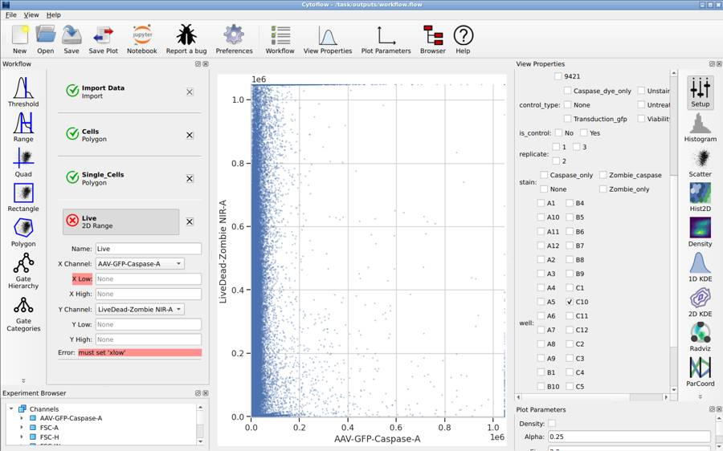
text(await tools.exec_command({cmd:"sleep 15\ncu screenshot /tmp/screen.png",yield_time_ms:20000,max_output_tokens:1000}));
image((await tools.view_image({path:"/tmp/screen.png"})).image_url);
Script completed Wall time 15.1 seconds Output:
{"chunk_id":"87ce12","wall_time_seconds":14.917462033,"exit_code":0,"original_token_count":4,"output":"/tmp/screen.png\n"}text(await tools.exec_command({cmd:"tail -10 /tmp/cytoflow.log\ncu click 1134 630\ncu click 1134 602\nsleep 8\ncu screenshot /tmp/screen.png",yield_time_ms:15000,max_output_tokens:1000}));
image((await tools.view_image({path:"/tmp/screen.png"})).image_url);
Script completed Wall time 8.4 seconds Output:
{"chunk_id":"90998c","wall_time_seconds":8.167917842,"exit_code":0,"original_token_count":26,"output":"QXcbIntegration: Cannot create platform OpenGL context, neither GLX nor EGL are enabled\n/tmp/screen.png\n"}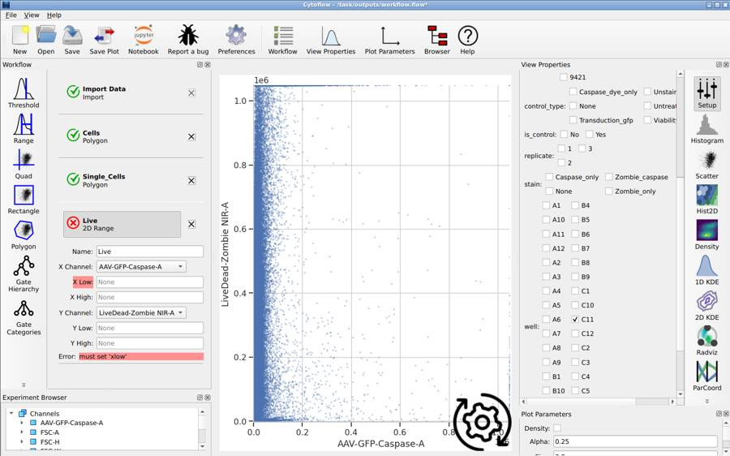
text(await tools.exec_command({cmd:"ps -C cytoflow -o pid,%cpu,rss,vsz,stat,etime,comm\ncu scroll 1276 305 up 15\ncu click 1167 203\ncu key Home\ncu key Return\nsleep 1\ncu click 1167 203\ncu key End\ncu key Return\nsleep 10\ncu screenshot /tmp/screen.png",yield_time_ms:20000,max_output_tokens:1000}));
image((await tools.view_image({path:"/tmp/screen.png"})).image_url);
Script completed Wall time 13.2 seconds Output:
{"chunk_id":"ad7cdf","wall_time_seconds":12.79878457,"exit_code":0,"original_token_count":104,"output":" PID %CPU RSS VSZ STAT ELAPSED COMMAND\n 860 0.0 0 0 Z 14:50 cytoflow\n 7648 0.0 0 0 Z 12:08 cytoflow\n 7898 0.0 0 0 Z 10:13 cytoflow\n 8423 0.0 0 0 Z 04:49 cytoflow\n 8643 3.8 15048 3603612 Sl 02:22 cytoflow\n 8654 0.0 100 84344 S 02:19 cytoflow\n 8656 50.8 7424780 10103860 Rl 02:19 cytoflow\n/tmp/screen.png\n"}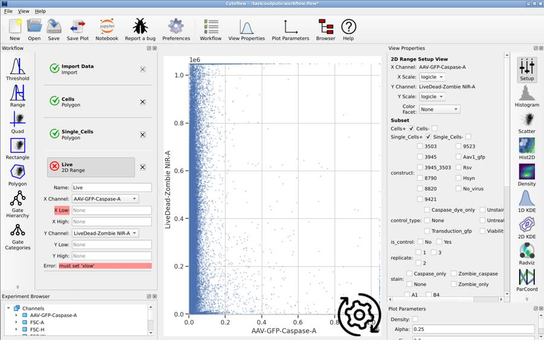
text(await tools.exec_command({cmd:"sleep 40\ncu screenshot /tmp/screen.png\nps -C cytoflow -o pid,%cpu,rss,stat,etime,comm\nfree -m",yield_time_ms:1000,max_output_tokens:1000}));
Script completed
Wall time 1.2 seconds
Output:
{"chunk_id":"8bc092","wall_time_seconds":1.001110307,"session_id":89810,"original_token_count":0,"output":""}text(await tools.write_stdin({session_id:89810,chars:"",yield_time_ms:1000,max_output_tokens:1000}));
text(await tools.clock__curr_time({}));
Script completed
Wall time 5.0 seconds
Output:
{"chunk_id":"ea47b0","wall_time_seconds":5.000893913,"session_id":89810,"original_token_count":0,"output":""}
{"current_time":"2026-11-05 00:23:15 UTC"}text(await tools.write_stdin({session_id:89810,chars:"",yield_time_ms:1000,max_output_tokens:1000}));
text(await tools.exec_command({cmd:"cu screenshot /tmp/screen.png\nps -C cytoflow -o pid,%cpu,rss,stat,etime,comm",max_output_tokens:1000}));
image((await tools.view_image({path:"/tmp/screen.png"})).image_url);
Script completed Wall time 5.1 seconds Output:
{"chunk_id":"f7f6e7","wall_time_seconds":5.000806663,"session_id":89810,"original_token_count":0,"output":""}{"chunk_id":"3dc2af","wall_time_seconds":0.00000338,"exit_code":0,"original_token_count":90,"output":"/tmp/screen.png\n PID %CPU RSS STAT ELAPSED COMMAND\n 860 0.0 0 Z 15:53 cytoflow\n 7648 0.0 0 Z 13:11 cytoflow\n 7898 0.0 0 Z 11:16 cytoflow\n 8423 0.0 0 Z 05:53 cytoflow\n 8643 2.8 36084 Sl 03:25 cytoflow\n 8654 0.0 100 S 03:23 cytoflow\n 8656 45.8 1823288 Sl 03:23 cytoflow\n"}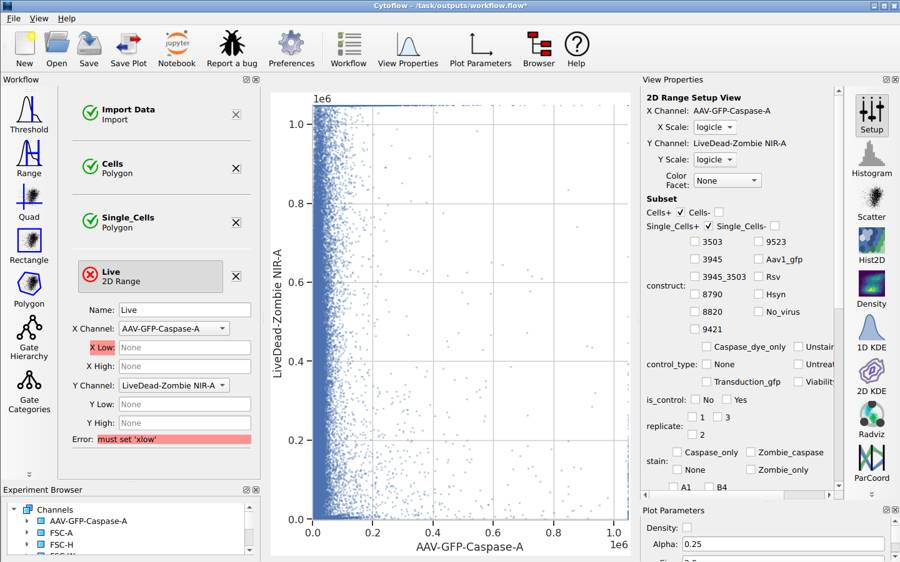
text(await tools.exec_command({cmd:"cu click 1168 255\ncu key Home\ncu key Return\nsleep 8\ncu screenshot /tmp/screen.png",yield_time_ms:15000,max_output_tokens:1000}));
image((await tools.view_image({path:"/tmp/screen.png"})).image_url);
Script completed Wall time 8.3 seconds Output:
{"chunk_id":"205a02","wall_time_seconds":8.083989737,"exit_code":0,"original_token_count":4,"output":"/tmp/screen.png\n"}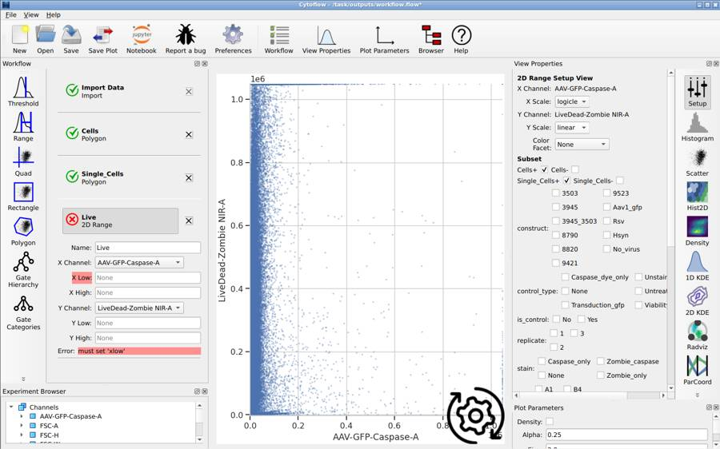
text(await tools.exec_command({cmd:"rg --files /opt/cytoflow | rg 'range2d|range_2d|range\\.py|workflow_item|scatterplot|\\.log$' | head -30\nsleep 20\ncu screenshot /tmp/screen.png",yield_time_ms:25000,max_output_tokens:1000}));
image((await tools.view_image({path:"/tmp/screen.png"})).image_url);
Script completed Wall time 20.1 seconds Output:
{"chunk_id":"fa60de","wall_time_seconds":19.944977997,"exit_code":0,"original_token_count":254,"output":"/opt/cytoflow/cytoflow-1.3.2/_internal/cytoflowgui/help/operations/range2d-1.py\n/opt/cytoflow/cytoflow-1.3.2/_internal/cytoflowgui/help/operations/range2d-1.png\n/opt/cytoflow/cytoflow-1.3.2/_internal/cytoflowgui/help/operations/range2d.html\n/opt/cytoflow/cytoflow-1.3.2/_internal/cytoflowgui/help/plot_directive/operations/range2d-1.png\n/opt/cytoflow/cytoflow-1.3.2/_internal/cytoflowgui/help/plot_directive/views/scatterplot-1.png\n/opt/cytoflow/cytoflow-1.3.2/_internal/cytoflowgui/help/_images/scatterplot-1.png\n/opt/cytoflow/cytoflow-1.3.2/_internal/cytoflowgui/help/_images/range2d-1.png\n/opt/cytoflow/cytoflow-1.3.2/_internal/cytoflowgui/help/views/scatterplot-1.png\n/opt/cytoflow/cytoflow-1.3.2/_internal/cytoflowgui/help/views/scatterplot-1.py\n/opt/cytoflow/cytoflow-1.3.2/_internal/cytoflowgui/help/views/scatterplot.html\n/opt/cytoflow/cytoflow-1.3.2/_internal/cytoflowgui/op_plugins/images/range2d.svg\n/opt/cytoflow/cytoflow-1.3.2/_internal/cytoflowgui/view_plugins/images/scatterplot.svg\n/tmp/screen.png\n"}text(await tools.exec_command({cmd:"cu click 378 443\nsleep 1\ncu screenshot /tmp/screen.png",max_output_tokens:1000}));
image((await tools.view_image({path:"/tmp/screen.png"})).image_url);
Script completed Wall time 1.2 seconds Output:
{"chunk_id":"912aad","wall_time_seconds":1.014634492,"exit_code":0,"original_token_count":4,"output":"/tmp/screen.png\n"}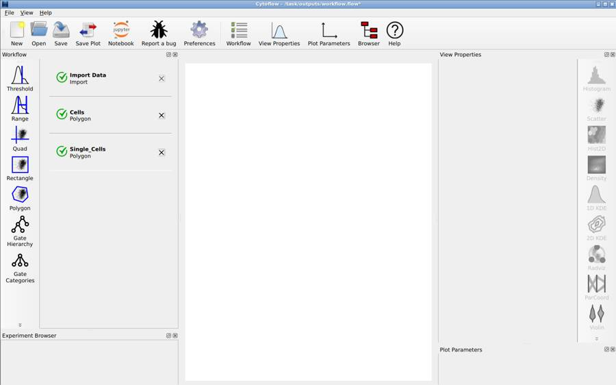
text(await tools.exec_command({cmd:"cu click 225 354\ncu click 47 245\nsleep 1\ncu screenshot /tmp/screen.png",max_output_tokens:1000}));
image((await tools.view_image({path:"/tmp/screen.png"})).image_url);
Script completed Wall time 1.3 seconds Output:
{"chunk_id":"bd3d1e","wall_time_seconds":1.131026321,"exit_code":0,"original_token_count":4,"output":"/tmp/screen.png\n"}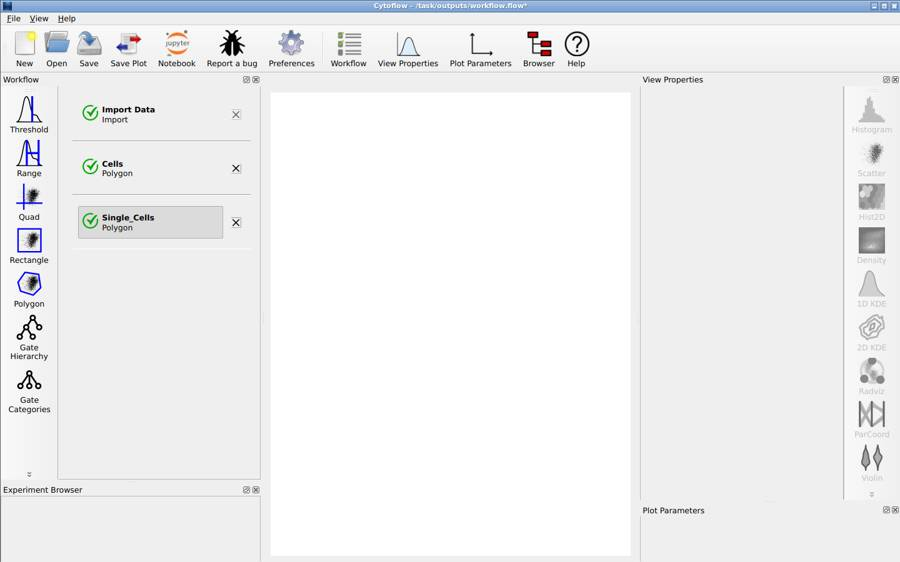
text(await tools.exec_command({cmd:"sleep 2\ncu click 46 245\nsleep 2\ncu screenshot /tmp/screen.png",max_output_tokens:1000}));
image((await tools.view_image({path:"/tmp/screen.png"})).image_url);
Script completed Wall time 4.2 seconds Output:
{"chunk_id":"94c19c","wall_time_seconds":4.029239528,"exit_code":0,"original_token_count":4,"output":"/tmp/screen.png\n"}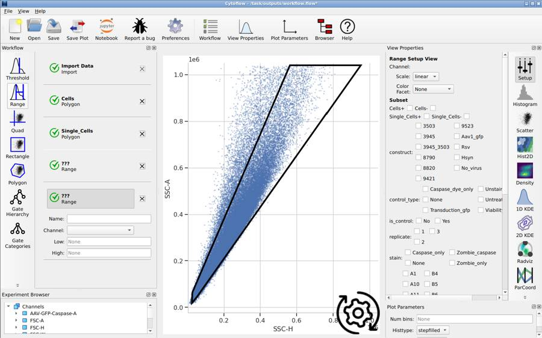
text(await tools.exec_command({cmd:"cu click 377 529\nsleep 2\ncu click 222 440\nsleep 2\ncu screenshot /tmp/screen.png",max_output_tokens:1000}));
image((await tools.view_image({path:"/tmp/screen.png"})).image_url);
Script completed Wall time 4.3 seconds Output:
{"chunk_id":"5efe1c","wall_time_seconds":4.126330609,"exit_code":0,"original_token_count":4,"output":"/tmp/screen.png\n"}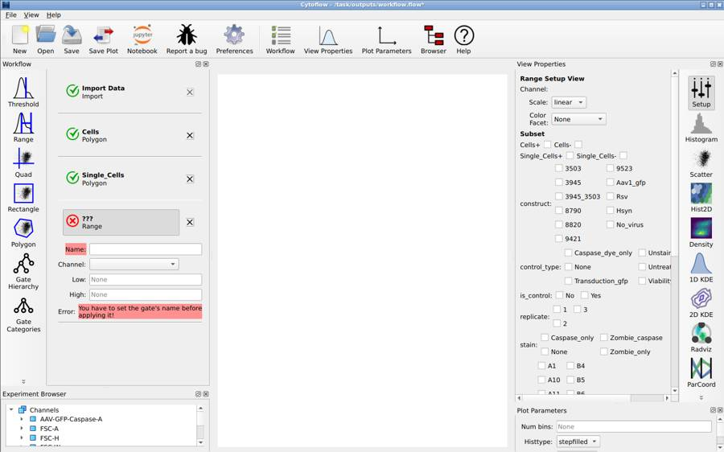
text(await tools.exec_command({cmd:"cu click 274 497\ncu type 'Live'\ncu click 1089 287\ncu click 1134 309\ncu click 1277 558\ncu click 1154 204\ncu key End\ncu key Return\nsleep 1\ncu click 344 526\ncu key Home\ncu key Down\ncu key Down\ncu key Down\ncu key Down\ncu key Return\nsleep 12\ncu screenshot /tmp/screen.png",yield_time_ms:20000,max_output_tokens:1000}));
image((await tools.view_image({path:"/tmp/screen.png"})).image_url);
Script completed Wall time 14.0 seconds Output:
{"chunk_id":"ae1f8e","wall_time_seconds":13.778783869,"exit_code":0,"original_token_count":4,"output":"/tmp/screen.png\n"}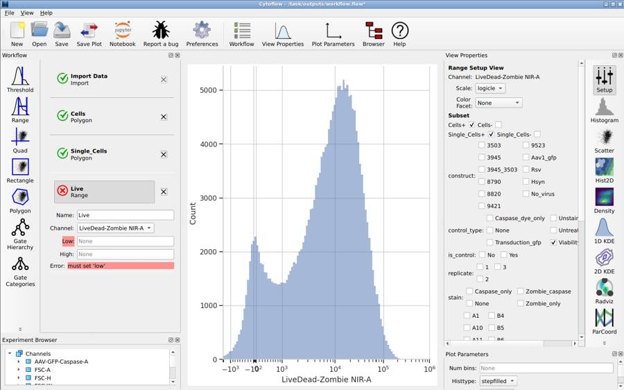
text(await tools.exec_command({cmd:"ls -lh /task/inputs/raw/*C1*.fcs\nsleep 8\ncu screenshot /tmp/screen.png",yield_time_ms:15000,max_output_tokens:1000}));
image((await tools.view_image({path:"/tmp/screen.png"})).image_url);
Script completed Wall time 8.1 seconds Output:
{"chunk_id":"d936a5","wall_time_seconds":7.918670008,"exit_code":0,"original_token_count":108,"output":"-r--r--r-- 1 root root 8.7M Nov 5 00:05 /task/inputs/raw/Caspase_KO_RNAswap-rep2_caspase_Group_C1.fcs\n-r--r--r-- 1 root root 9.6M Nov 5 00:05 /task/inputs/raw/Caspase_KO_RNAswap-rep2_caspase_Group_C10.fcs\n-r--r--r-- 1 root root 13M Nov 5 00:05 /task/inputs/raw/Caspase_KO_RNAswap-rep2_caspase_Group_C11.fcs\n-r--r--r-- 1 root root 11M Nov 5 00:05 /task/inputs/raw/Caspase_KO_RNAswap-rep2_caspase_Group_C12.fcs\n/tmp/screen.png\n"}text(await tools.exec_command({cmd:"du -h /task/inputs/raw\nls -lh /task/inputs/raw/*A1*.fcs /task/inputs/raw/*B3*.fcs\ncu click 1277 503\ncu click 1277 558\nsleep 10\ncu screenshot /tmp/screen.png",yield_time_ms:15000,max_output_tokens:1000}));
image((await tools.view_image({path:"/tmp/screen.png"})).image_url);
Script completed Wall time 10.3 seconds Output:
{"chunk_id":"e5ea50","wall_time_seconds":10.127496658,"exit_code":0,"original_token_count":139,"output":"323M\t/task/inputs/raw\n-r--r--r-- 1 root root 6.4M Nov 5 00:05 /task/inputs/raw/Caspase_KO_RNAswap-rep2_caspase_Group_A1.fcs\n-r--r--r-- 1 root root 12M Nov 5 00:05 /task/inputs/raw/Caspase_KO_RNAswap-rep2_caspase_Group_A10.fcs\n-r--r--r-- 1 root root 7.9M Nov 5 00:05 /task/inputs/raw/Caspase_KO_RNAswap-rep2_caspase_Group_A11.fcs\n-r--r--r-- 1 root root 12M Nov 5 00:05 /task/inputs/raw/Caspase_KO_RNAswap-rep2_caspase_Group_A12.fcs\n-r--r--r-- 1 root root 9.5M Nov 5 00:05 /task/inputs/raw/Caspase_KO_RNAswap-rep2_caspase_Group_B3.fcs\n/tmp/screen.png\n"}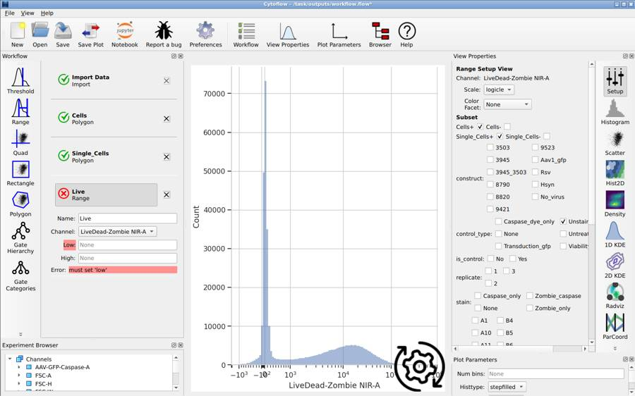
text(await tools.exec_command({cmd:"sleep 10\ncu screenshot /tmp/screen.png",yield_time_ms:15000,max_output_tokens:1000}));
image((await tools.view_image({path:"/tmp/screen.png"})).image_url);
Script completed Wall time 10.1 seconds Output:
{"chunk_id":"ffbec9","wall_time_seconds":9.912069848,"exit_code":0,"original_token_count":4,"output":"/tmp/screen.png\n"}text(await tools.exec_command({cmd:"cu screenshot /task/outputs/work/C10_Zombie_control.png\ncu click 1277 558\ncu click 1277 503\ncu click 271 555\ncu key ctrl+a\ncu type '-1000000000'\ncu click 273 586\ncu key ctrl+a\ncu type '1000'\ncu key Tab\nsleep 25\ncu key ctrl+s\ncu screenshot /tmp/screen.png",yield_time_ms:30000,max_output_tokens:1000}));
image((await tools.view_image({path:"/tmp/screen.png"})).image_url);
Script completed Wall time 26.1 seconds Output:
{"chunk_id":"8fdf0d","wall_time_seconds":25.886214811,"exit_code":0,"original_token_count":15,"output":"/task/outputs/work/C10_Zombie_control.png\n/tmp/screen.png\n"}text(await tools.exec_command({cmd:"cu screenshot /task/outputs/work/C11_Zombie_boundary.png\ncu click 47 245\nsleep 2\ncu screenshot /tmp/screen.png",max_output_tokens:1000}));
image((await tools.view_image({path:"/tmp/screen.png"})).image_url);
Script completed Wall time 2.3 seconds Output:
{"chunk_id":"327eef","wall_time_seconds":2.077012515,"exit_code":0,"original_token_count":15,"output":"/task/outputs/work/C11_Zombie_boundary.png\n/tmp/screen.png\n"}text(await tools.exec_command({cmd:"cu click 274 583\ncu type 'Caspase_pos'\ncu click 1089 287\ncu click 1085 309\ncu click 1133 331\ncu click 1130 524\ncu click 1156 203\ncu key End\ncu key Return\ncu click 344 613\ncu key Home\ncu key Return\nsleep 16\ncu screenshot /tmp/screen.png",yield_time_ms:20000,max_output_tokens:1000}));
image((await tools.view_image({path:"/tmp/screen.png"})).image_url);
Script completed Wall time 17.2 seconds Output:
{"chunk_id":"fd04aa","wall_time_seconds":16.999157,"exit_code":0,"original_token_count":4,"output":"/tmp/screen.png\n"}text(await tools.exec_command({cmd:"cu screenshot /task/outputs/work/C12_Caspase_distribution.png\ncu click 1277 524\ncu click 1130 524\nsleep 20\ncu screenshot /tmp/screen.png",yield_time_ms:25000,max_output_tokens:1000}));
image((await tools.view_image({path:"/tmp/screen.png"})).image_url);
Script completed Wall time 20.4 seconds Output:
{"chunk_id":"44cac8","wall_time_seconds":20.184878487,"exit_code":0,"original_token_count":16,"output":"/task/outputs/work/C12_Caspase_distribution.png\n/tmp/screen.png\n"}text(await tools.exec_command({cmd:"cu click 1130 524\ncu click 1277 581\ncu click 1193 237\ncu screenshot /tmp/screen.png",max_output_tokens:1000}));
image((await tools.view_image({path:"/tmp/screen.png"})).image_url);
Script completed Wall time 0.4 seconds Output:
{"chunk_id":"b25e3b","wall_time_seconds":0.230820216,"exit_code":0,"original_token_count":4,"output":"/tmp/screen.png\n"}text(await tools.exec_command({cmd:"cu click 1149 117\nsleep 22\ncu screenshot /tmp/screen.png",yield_time_ms:25000,max_output_tokens:1000}));
image((await tools.view_image({path:"/tmp/screen.png"})).image_url);
Script completed Wall time 22.2 seconds Output:
{"chunk_id":"f69c20","wall_time_seconds":22.020319411,"exit_code":0,"original_token_count":4,"output":"/tmp/screen.png\n"}text(await tools.exec_command({cmd:"cu click 272 643\ncu key ctrl+a\ncu type '500'\ncu click 269 673\ncu key ctrl+a\ncu type '1000000000'\ncu key Tab\nsleep 15\ncu key ctrl+s\ncu screenshot /task/outputs/work/Caspase_controls_boundary.png\ncu click 46 455\nsleep 2\ncu screenshot /tmp/screen.png",yield_time_ms:25000,max_output_tokens:1000}));
image((await tools.view_image({path:"/tmp/screen.png"})).image_url);
Script completed Wall time 17.9 seconds Output:
{"chunk_id":"e46e7d","wall_time_seconds":17.723085371,"exit_code":0,"original_token_count":17,"output":"/task/outputs/work/Caspase_controls_boundary.png\n/tmp/screen.png\n"}text(await tools.exec_command({cmd:"cu click 275 669\ncu type 'Late_apoptosis'\ncu click 1089 361\ncu click 1134 405\ncu click 1277 627\ncu click 1167 203\ncu key End\ncu key Return\ncu click 1167 255\ncu key End\ncu key Return\ncu click 355 699\ncu key Home\ncu key Return\ncu click 355 729\ncu key Home\ncu key Down\ncu key Down\ncu key Down\ncu key Down\ncu key Return\nsleep 18\ncu screenshot /tmp/screen.png",yield_time_ms:25000,max_output_tokens:1000}));
image((await tools.view_image({path:"/tmp/screen.png"})).image_url);
Script completed Wall time 19.5 seconds Output:
{"chunk_id":"f09d84","wall_time_seconds":19.307799641,"exit_code":0,"original_token_count":4,"output":"/tmp/screen.png\n"}text(await tools.exec_command({cmd:"cu drag 1168 804 1168 557\ncu screenshot /tmp/screen.png",max_output_tokens:1000}));
image((await tools.view_image({path:"/tmp/screen.png"})).image_url);
Script completed Wall time 0.2 seconds Output:
{"chunk_id":"836eaa","wall_time_seconds":0.00000392,"exit_code":0,"original_token_count":4,"output":"/tmp/screen.png\n"}text(await tools.exec_command({cmd:"cu click 1231 715\ncu key ctrl+a\ncu type '-1000'\ncu click 1230 745\ncu key ctrl+a\ncu type '2000000'\ncu click 1230 775\ncu key ctrl+a\ncu type '-3000'\ncu click 1230 806\ncu key ctrl+a\ncu type '2000000'\ncu key Tab\nsleep 25\ncu screenshot /tmp/screen.png",yield_time_ms:30000,max_output_tokens:1000}));
image((await tools.view_image({path:"/tmp/screen.png"})).image_url);
Script completed Wall time 26.3 seconds Output:
{"chunk_id":"486466","wall_time_seconds":26.097577769,"exit_code":0,"original_token_count":4,"output":"/tmp/screen.png\n"}text(await tools.exec_command({cmd:"cu click 1167 203\ncu key Home\ncu key Down\ncu key Return\ncu click 1167 255\ncu key Home\ncu key Down\ncu key Return\ncu click 1230 715\ncu key ctrl+a\ncu type '100'\ncu click 1230 775\ncu key ctrl+a\ncu type '100'\ncu key Tab\nsleep 25\ncu screenshot /tmp/screen.png",yield_time_ms:30000,max_output_tokens:1000}));
image((await tools.view_image({path:"/tmp/screen.png"})).image_url);
Script completed Wall time 25.9 seconds Output:
{"chunk_id":"1b077a","wall_time_seconds":25.670285181,"exit_code":0,"original_token_count":4,"output":"/tmp/screen.png\n"}text(await tools.exec_command({cmd:"cu click 585 597\ncu click 991 597\ncu click 991 171\ncu click 585 171\ncu click 585 597 double\nsleep 15\ncu click 1167 203\ncu key End\ncu key Return\ncu click 1167 255\ncu key End\ncu key Return\ncu click 1231 715\ncu key ctrl+a\ncu type '-1000'\ncu click 1230 775\ncu key ctrl+a\ncu type '-3000'\ncu key Tab\nsleep 25\ncu key ctrl+s\ncu screenshot /tmp/screen.png",yield_time_ms:1000,max_output_tokens:1000}));
Script completed
Wall time 1.2 seconds
Output:
{"chunk_id":"5482e5","wall_time_seconds":1.001102037,"session_id":62742,"original_token_count":0,"output":""}text(await tools.write_stdin({session_id:62742,chars:"",yield_time_ms:1000,max_output_tokens:1000}));
text(await tools.clock__curr_time({}));
Script completed
Wall time 5.0 seconds
Output:
{"chunk_id":"ce12d3","wall_time_seconds":5.000566322,"session_id":62742,"original_token_count":0,"output":""}
{"current_time":"2026-11-05 00:32:43 UTC"}text(await tools.write_stdin({session_id:62742,chars:"",yield_time_ms:1000,max_output_tokens:1000}));
text(await tools.exec_command({cmd:"cu screenshot /tmp/screen.png",max_output_tokens:1000}));
image((await tools.view_image({path:"/tmp/screen.png"})).image_url);
Script completed Wall time 0.7 seconds Output:
{"chunk_id":"79050f","wall_time_seconds":0.589293576,"exit_code":0,"original_token_count":4,"output":"/tmp/screen.png\n"}{"chunk_id":"902cc4","wall_time_seconds":0.00000368,"exit_code":0,"original_token_count":4,"output":"/tmp/screen.png\n"}text(await tools.exec_command({cmd:"cu click 636 550\ncu click 991 550\ncu click 991 157\ncu click 636 157\ncu click 636 550 double\nsleep 20\ncu key ctrl+s\ncu screenshot /tmp/screen.png\nrg -n -A 30 'name: Late_apoptosis' /task/outputs/workflow.flow | tail -35",yield_time_ms:25000,max_output_tokens:2000}));
image((await tools.view_image({path:"/tmp/screen.png"})).image_url);
Script completed Wall time 20.8 seconds Output:
{"chunk_id":"685eb1","wall_time_seconds":20.5769425,"exit_code":0,"original_token_count":229,"output":"/tmp/screen.png\n4518: name: Late_apoptosis\n4519- vertices:\n4520- - !!python/tuple\n4521- - 576.5298894367215\n4522- - 3213.622724360105\n4523- - !!python/tuple\n4524- - 1021518.9968066271\n4525- - 3213.622724360105\n4526- - !!python/tuple\n4527- - 1021518.9968066271\n4528- - 1044329.695490163\n4529- - !!python/tuple\n4530- - 576.5298894367215\n4531- - 1044329.695490163\n4532- xchannel: AAV-GFP-Caspase-A\n4533- xscale: logicle\n4534- ychannel: LiveDead-Zombie NIR-A\n4535- yscale: logicle\n4536- plot_params: !polygon-params;1\n4537- alpha: 0.25\n4538- col_wrap: null\n4539- density: false\n4540- despine: true\n4541- gridsize: 50\n4542- huelabel: ''\n4543- legend: true\n4544- marker: o\n4545- max_quantile: 1.0\n4546- min_quantile: 0.001\n4547- s: 2\n4548- sharex: true\n"}text(await tools.exec_command({cmd:"cu click 636 550\ncu click 997 550\ncu click 997 155\ncu click 636 155\ncu click 636 550 double\nsleep 18\ncu key ctrl+s\ncu screenshot /tmp/screen.png\nrg -n -A 18 'name: Late_apoptosis' /task/outputs/workflow.flow | tail -20",yield_time_ms:25000,max_output_tokens:1800}));
image((await tools.view_image({path:"/tmp/screen.png"})).image_url);
Script completed Wall time 18.8 seconds Output:
{"chunk_id":"ad9d32","wall_time_seconds":18.577774977,"exit_code":0,"original_token_count":156,"output":"/tmp/screen.png\n4518: name: Late_apoptosis\n4519- vertices:\n4520- - !!python/tuple\n4521- - 576.5298894367215\n4522- - 3213.622724360105\n4523- - !!python/tuple\n4524- - 1021518.9968066271\n4525- - 3213.622724360105\n4526- - !!python/tuple\n4527- - 1021518.9968066271\n4528- - 1044329.695490163\n4529- - !!python/tuple\n4530- - 576.5298894367215\n4531- - 1044329.695490163\n4532- xchannel: AAV-GFP-Caspase-A\n4533- xscale: logicle\n4534- ychannel: LiveDead-Zombie NIR-A\n4535- yscale: logicle\n4536- plot_params: !polygon-params;1\n"}text(await tools.exec_command({cmd:"cu drag 990 158 1004 149\ncu drag 636 158 636 149\ncu drag 990 550 1004 550\nsleep 18\ncu key ctrl+s\ncu screenshot /tmp/screen.png\nrg -n -A 18 'name: Late_apoptosis' /task/outputs/workflow.flow | tail -20",yield_time_ms:25000,max_output_tokens:1800}));
image((await tools.view_image({path:"/tmp/screen.png"})).image_url);
Script completed Wall time 18.2 seconds Output:
{"chunk_id":"16cfcd","wall_time_seconds":18.050752418,"exit_code":0,"original_token_count":156,"output":"/tmp/screen.png\n4518: name: Late_apoptosis\n4519- vertices:\n4520- - !!python/tuple\n4521- - 576.5298894367215\n4522- - 3213.622724360105\n4523- - !!python/tuple\n4524- - 1021518.9968066271\n4525- - 3213.622724360105\n4526- - !!python/tuple\n4527- - 1021518.9968066271\n4528- - 1044329.695490163\n4529- - !!python/tuple\n4530- - 576.5298894367215\n4531- - 1044329.695490163\n4532- xchannel: AAV-GFP-Caspase-A\n4533- xscale: logicle\n4534- ychannel: LiveDead-Zombie NIR-A\n4535- yscale: logicle\n4536- plot_params: !polygon-params;1\n"}text(await tools.exec_command({cmd:"cu key Escape\ncu click 230 526\nsleep 2\ncu screenshot /tmp/screen.png",max_output_tokens:1000}));
image((await tools.view_image({path:"/tmp/screen.png"})).image_url);
Script completed Wall time 2.2 seconds Output:
{"chunk_id":"147d30","wall_time_seconds":2.033509387,"exit_code":0,"original_token_count":4,"output":"/tmp/screen.png\n"}text(await tools.exec_command({cmd:"cu click 272 642\ncu key ctrl+a\ncu type '576.5298894367215'\ncu key Tab\nsleep 25\ncu key ctrl+s\ncu click 228 735\nsleep 2\ncu scroll 43 701 down 4\ncu screenshot /tmp/screen.png",yield_time_ms:30000,max_output_tokens:1000}));
image((await tools.view_image({path:"/tmp/screen.png"})).image_url);
Script completed Wall time 28.2 seconds Output:
{"chunk_id":"03fa7f","wall_time_seconds":28.038221158,"exit_code":0,"original_token_count":4,"output":"/tmp/screen.png\n"}text(await tools.exec_command({cmd:"cu click 47 759\nsleep 1\ncu screenshot /tmp/screen.png",max_output_tokens:1000}));
image((await tools.view_image({path:"/tmp/screen.png"})).image_url);
Script completed Wall time 1.2 seconds Output:
{"chunk_id":"d694a4","wall_time_seconds":1.029045679,"exit_code":0,"original_token_count":4,"output":"/tmp/screen.png\n"}text(await tools.exec_command({cmd:"cu click 130 178\nsleep 2\ncu scroll 338 675 down 9\ncu screenshot /tmp/screen.png",max_output_tokens:1000}));
image((await tools.view_image({path:"/tmp/screen.png"})).image_url);
Script completed Wall time 3.1 seconds Output:
{"chunk_id":"2d6f50","wall_time_seconds":2.92985699,"exit_code":0,"original_token_count":4,"output":"/tmp/screen.png\n"}text(await tools.exec_command({cmd:"cu click 271 193\ncu key ctrl+a\ncu type 'N_All_events'\ncu click 345 224\ncu key End\ncu key Return\ncu click 320 253\ncu screenshot /tmp/screen.png",max_output_tokens:1000}));
image((await tools.view_image({path:"/tmp/screen.png"})).image_url);
Script completed Wall time 0.8 seconds Output:
{"chunk_id":"c150eb","wall_time_seconds":0.598356279,"exit_code":0,"original_token_count":4,"output":"/tmp/screen.png\n"}text(await tools.exec_command({cmd:"cu click 209 255\ncu click 350 394\ncu click 1395 545\ncu screenshot /tmp/screen.png",max_output_tokens:1000}));
image((await tools.view_image({path:"/tmp/screen.png"})).image_url);
Script completed Wall time 0.4 seconds Output:
{"chunk_id":"b9c461","wall_time_seconds":0.233282177,"exit_code":0,"original_token_count":4,"output":"/tmp/screen.png\n"}text(await tools.exec_command({cmd:"sleep 2\ncu click 1395 544\ncu screenshot /tmp/screen.png",max_output_tokens:1000}));
image((await tools.view_image({path:"/tmp/screen.png"})).image_url);
Script completed Wall time 2.2 seconds Output:
{"chunk_id":"203420","wall_time_seconds":2.025224783,"exit_code":0,"original_token_count":4,"output":"/tmp/screen.png\n"}text(await tools.exec_command({cmd:"cu key Escape\ncu drag 1173 558 1173 803\ncu click 1396 791\ncu screenshot /tmp/screen.png",max_output_tokens:1000}));
image((await tools.view_image({path:"/tmp/screen.png"})).image_url);
Script completed Wall time 0.2 seconds Output:
{"chunk_id":"fcc5b5","wall_time_seconds":0.071423669,"exit_code":0,"original_token_count":4,"output":"/tmp/screen.png\n"}text(await tools.exec_command({cmd:"xdotool search --name '^Cytoflow - /task/outputs/workflow.flow' getwindowgeometry\ncu key Escape\nxdotool search --name '^Cytoflow - /task/outputs/workflow.flow' windowmove -- -250 0\ncu click 1145 791\ncu screenshot /tmp/screen.png",max_output_tokens:1000}));
image((await tools.view_image({path:"/tmp/screen.png"})).image_url);
Script completed Wall time 0.2 seconds Output:
{"chunk_id":"a01187","wall_time_seconds":0.04809305,"exit_code":0,"original_token_count":21,"output":"Window 14680070\n Position: 2,40 (screen: 0)\n Geometry: 1440x880\n/tmp/screen.png\n"}text(await tools.exec_command({cmd:"cu click 1144 770\ncu screenshot /tmp/screen.png",max_output_tokens:1000}));
image((await tools.view_image({path:"/tmp/screen.png"})).image_url);
Script completed Wall time 0.2 seconds Output:
{"chunk_id":"3fa829","wall_time_seconds":0.016984847,"exit_code":0,"original_token_count":4,"output":"/tmp/screen.png\n"}text(await tools.exec_command({cmd:"rg --files /opt/cytoflow/cytoflow-1.3.2/_internal/cytoflowgui/help | rg 'table|statistic|stats' | head -35\nxdotool search --name '^Cytoflow - /task/outputs/workflow.flow' windowmove 0 20\ncu click 1395 791\ncu key Down\ncu screenshot /tmp/screen.png",max_output_tokens:1600}));
image((await tools.view_image({path:"/tmp/screen.png"})).image_url);
Script completed Wall time 0.2 seconds Output:
{"chunk_id":"06888f","wall_time_seconds":0.050539081,"exit_code":0,"original_token_count":403,"output":"/opt/cytoflow/cytoflow-1.3.2/_internal/cytoflowgui/help/plot_directive/views/table-1.png\n/opt/cytoflow/cytoflow-1.3.2/_internal/cytoflowgui/help/plot_directive/views/stats_2d-1.png\n/opt/cytoflow/cytoflow-1.3.2/_internal/cytoflowgui/help/plot_directive/views/stats_1d-1.png\n/opt/cytoflow/cytoflow-1.3.2/_internal/cytoflowgui/help/plot_directive/views/long_table-1.png\n/opt/cytoflow/cytoflow-1.3.2/_internal/cytoflowgui/help/_images/table-1.png\n/opt/cytoflow/cytoflow-1.3.2/_internal/cytoflowgui/help/_images/stats_2d-1.png\n/opt/cytoflow/cytoflow-1.3.2/_internal/cytoflowgui/help/_images/stats_1d-1.png\n/opt/cytoflow/cytoflow-1.3.2/_internal/cytoflowgui/help/_images/long_table-1.png\n/opt/cytoflow/cytoflow-1.3.2/_internal/cytoflowgui/help/views/table-1.png\n/opt/cytoflow/cytoflow-1.3.2/_internal/cytoflowgui/help/views/stats_2d-1.png\n/opt/cytoflow/cytoflow-1.3.2/_internal/cytoflowgui/help/views/stats_1d-1.png\n/opt/cytoflow/cytoflow-1.3.2/_internal/cytoflowgui/help/views/stats_1d-1.py\n/opt/cytoflow/cytoflow-1.3.2/_internal/cytoflowgui/help/views/long_table-1.png\n/opt/cytoflow/cytoflow-1.3.2/_internal/cytoflowgui/help/views/long_table-1.py\n/opt/cytoflow/cytoflow-1.3.2/_internal/cytoflowgui/help/views/table.html\n/opt/cytoflow/cytoflow-1.3.2/_internal/cytoflowgui/help/views/table-1.py\n/opt/cytoflow/cytoflow-1.3.2/_internal/cytoflowgui/help/views/stats_1d.html\n/opt/cytoflow/cytoflow-1.3.2/_internal/cytoflowgui/help/views/long_table.html\n/opt/cytoflow/cytoflow-1.3.2/_internal/cytoflowgui/help/views/stats_2d-1.py\n/opt/cytoflow/cytoflow-1.3.2/_internal/cytoflowgui/help/views/stats_2d.html\n/tmp/screen.png\n"}text(await tools.exec_command({cmd:"cu key Escape\nxdotool search --name '^Cytoflow - /task/outputs/workflow.flow' windowsize 1440 1500\nxdotool search --name '^Cytoflow - /task/outputs/workflow.flow' windowmove 0 -600\ncu screenshot /tmp/screen.png",max_output_tokens:1000}));
image((await tools.view_image({path:"/tmp/screen.png"})).image_url);
Script completed Wall time 0.2 seconds Output:
{"chunk_id":"1d6e8a","wall_time_seconds":0.00000341,"exit_code":0,"original_token_count":4,"output":"/tmp/screen.png\n"}text(await tools.exec_command({cmd:"sleep 2\ncu screenshot /tmp/screen.png",max_output_tokens:1000}));
image((await tools.view_image({path:"/tmp/screen.png"})).image_url);
Script completed Wall time 2.1 seconds Output:
{"chunk_id":"9d4d9b","wall_time_seconds":1.9153497069999998,"exit_code":0,"original_token_count":4,"output":"/tmp/screen.png\n"}text(await tools.exec_command({cmd:"cu click 1395 535\nsleep 2\nxdotool search --name '^Cytoflow - /task/outputs/workflow.flow' windowsize 1440 880\nxdotool search --name '^Cytoflow - /task/outputs/workflow.flow' windowmove 0 20\nsleep 2\ncu screenshot /tmp/screen.png",max_output_tokens:1000}));
image((await tools.view_image({path:"/tmp/screen.png"})).image_url);
Script completed Wall time 4.2 seconds Output:
{"chunk_id":"c2cb9d","wall_time_seconds":4.038092032,"exit_code":0,"original_token_count":4,"output":"/tmp/screen.png\n"}text(await tools.exec_command({cmd:"cu click 1210 182\ncu screenshot /tmp/screen.png",max_output_tokens:1000}));
image((await tools.view_image({path:"/tmp/screen.png"})).image_url);
Script completed Wall time 0.2 seconds Output:
{"chunk_id":"6acf04","wall_time_seconds":0.015898546,"exit_code":0,"original_token_count":4,"output":"/tmp/screen.png\n"}text(await tools.exec_command({cmd:"cu click 1162 206\ncu click 1183 211\ncu key Home\ncu key Return\ncu click 1164 241\ncu key Home\ncu key Return\nsleep 3\ncu screenshot /tmp/screen.png",max_output_tokens:1000}));
image((await tools.view_image({path:"/tmp/screen.png"})).image_url);
Script completed Wall time 3.5 seconds Output:
{"chunk_id":"560ab2","wall_time_seconds":3.298151934,"exit_code":0,"original_token_count":4,"output":"/tmp/screen.png\n"}text(await tools.exec_command({cmd:"cu click 1223 393\nsleep 1\ncu screenshot /tmp/screen.png",max_output_tokens:1000}));
image((await tools.view_image({path:"/tmp/screen.png"})).image_url);
Script completed Wall time 1.2 seconds Output:
{"chunk_id":"4c77bb","wall_time_seconds":1.024551216,"exit_code":0,"original_token_count":4,"output":"/tmp/screen.png\n"}text(await tools.exec_command({cmd:"cu paste '/task/outputs/work/All_events.csv'\ncu key Return\nsleep 1\ncu key Return\nsleep 1\ncu key ctrl+s\ncu screenshot /tmp/screen.png\ncat /task/outputs/work/All_events.csv",max_output_tokens:2000}));
image((await tools.view_image({path:"/tmp/screen.png"})).image_url);
Script completed Wall time 3.5 seconds Output:
{"chunk_id":"031d20","wall_time_seconds":3.308380378,"exit_code":1,"original_token_count":21,"output":"/tmp/screen.png\ncat: /task/outputs/work/All_events.csv: No such file or directory\n"}text(await tools.exec_command({cmd:"sleep 3\nls -l /task/outputs/work/*.csv\ncat /task/outputs/work/All_events.csv\ncu key ctrl+s\ncu click 279 145 right\ncu screenshot /tmp/screen.png",max_output_tokens:2000}));
image((await tools.view_image({path:"/tmp/screen.png"})).image_url);
Script completed Wall time 3.2 seconds Output:
{"chunk_id":"0fff1d","wall_time_seconds":3.05129217,"exit_code":0,"original_token_count":39,"output":"ls: cannot access '/task/outputs/work/*.csv': No such file or directory\ncat: /task/outputs/work/All_events.csv: No such file or directory\n/tmp/screen.png\n"}text(await tools.exec_command({cmd:"ls -ld /task/outputs /task/outputs/work\nls -l /task/outputs\n tail -15 /tmp/cytoflow.log",max_output_tokens:1000}));
Script completed
Wall time 0.0 seconds
Output:
{"chunk_id":"2d058b","wall_time_seconds":0.00000353,"exit_code":0,"original_token_count":252,"output":"drwxrwsrwx 3 agent task 4096 Nov 5 00:09 /task/outputs\ndrwxr-sr-x 2 root task 4096 Nov 5 00:29 /task/outputs/work\ntotal 108\ndrwxr-sr-x 2 root task 4096 Nov 5 00:29 work\n-rw-rw-r-- 1 cfapp task 106291 Nov 5 00:39 workflow.flow\nQXcbIntegration: Cannot create platform OpenGL context, neither GLX nor EGL are enabled\n2026-11-05 00:39:02,184 ERROR:traits:Exception occurred in traits notification handler for event object: TraitChangeEvent(object=<cytoflowgui.view_plugins.table.TableHandler object at 0x7fb8d62c8050>, name='export', old=<undefined>, new=0)\nTraceback (most recent call last):\n File \"traits/observation/_trait_event_notifier.py\", line 122, in __call__\n File \"traits/observation/observe.py\", line 43, in dispatch_same\n File \"cytoflowgui/view_plugins/table.py\", line 236, in _on_export\n File \"cytoflow/views/table.py\", line 620, in _export_data\n File \"numpy/lib/_npyio_impl.py\", line 1563, in savetxt\nPermissionError: [Errno 13] Permission denied: '/task/outputs/work/All_events.csv'\n"}text(await tools.exec_command({cmd:"chmod 2777 /task/outputs/work\ncu click 1219 392\nsleep 1\ncu paste '/task/outputs/work/All_events.csv'\ncu key Return\nsleep 2\ncu screenshot /tmp/screen.png\ncat /task/outputs/work/All_events.csv",max_output_tokens:2200}));
image((await tools.view_image({path:"/tmp/screen.png"})).image_url);
Script completed Wall time 4.5 seconds Output:
{"chunk_id":"9b1052","wall_time_seconds":4.371560971,"exit_code":0,"original_token_count":178,"output":"/tmp/screen.png\nwell = A1,183353.0\nwell = A10,335810.0\nwell = A11,228556.0\nwell = A12,330844.0\nwell = A2,221770.0\nwell = A3,222545.0\nwell = A4,160440.0\nwell = A5,169911.0\nwell = A6,230857.0\nwell = A7,282723.0\nwell = A8,236938.0\nwell = A9,241833.0\nwell = B1,254845.0\nwell = B10,187472.0\nwell = B11,271438.0\nwell = B12,286933.0\nwell = B2,319449.0\nwell = B3,275473.0\nwell = B4,219859.0\nwell = B5,225148.0\nwell = B6,369018.0\nwell = B7,186946.0\nwell = B8,412353.0\nwell = B9,219409.0\nwell = C1,250794.0\nwell = C10,276619.0\nwell = C11,364071.0\nwell = C12,307442.0\nwell = C2,305451.0\nwell = C3,418796.0\nwell = C4,230134.0\nwell = C5,206789.0\nwell = C6,189779.0\nwell = C7,317865.0\nwell = C8,214991.0\nwell = C9,222410.0\n"}text(await tools.exec_command({cmd:"cu click 46 759\ncu click 131 176\nsleep 2\ncu scroll 338 675 down 10\ncu screenshot /tmp/screen.png",max_output_tokens:1000}));
image((await tools.view_image({path:"/tmp/screen.png"})).image_url);
Script completed Wall time 3.3 seconds Output:
{"chunk_id":"8009dd","wall_time_seconds":3.134865876,"exit_code":0,"original_token_count":4,"output":"/tmp/screen.png\n"}text(await tools.exec_command({cmd:"cu click 46 759\nsleep 0.5\ncu screenshot /tmp/screen.png",max_output_tokens:1000}));
image((await tools.view_image({path:"/tmp/screen.png"})).image_url);
Script completed Wall time 0.7 seconds Output:
{"chunk_id":"f0f098","wall_time_seconds":0.523793388,"exit_code":0,"original_token_count":4,"output":"/tmp/screen.png\n"}text(await tools.exec_command({cmd:"cu click 131 176\nsleep 2\ncu screenshot /tmp/screen.png",max_output_tokens:1000}));
image((await tools.view_image({path:"/tmp/screen.png"})).image_url);
Script completed Wall time 2.2 seconds Output:
{"chunk_id":"2c04be","wall_time_seconds":2.020749742,"exit_code":0,"original_token_count":4,"output":"/tmp/screen.png\n"}text(await tools.exec_command({cmd:"cu move 955 423\nsleep 1\ncu scroll 332 410 up 7\ncu screenshot /tmp/screen.png",max_output_tokens:1000}));
image((await tools.view_image({path:"/tmp/screen.png"})).image_url);
Script completed Wall time 1.8 seconds Output:
{"chunk_id":"85b12e","wall_time_seconds":1.623035926,"exit_code":0,"original_token_count":4,"output":"/tmp/screen.png\n"}text(await tools.exec_command({cmd:"cu scroll 330 410 up 2\ncu screenshot /tmp/screen.png",max_output_tokens:1000}));
image((await tools.view_image({path:"/tmp/screen.png"})).image_url);
Script completed Wall time 0.3 seconds Output:
{"chunk_id":"d6d18a","wall_time_seconds":0.117160388,"exit_code":0,"original_token_count":4,"output":"/tmp/screen.png\n"}text(await tools.exec_command({cmd:"cu click 273 217\ncu key ctrl+a\ncu type 'N_Cells'\ncu click 344 247\ncu key End\ncu key Return\ncu click 319 278\ncu key Home\ncu key Return\ncu click 349 419\ncu scroll 330 673 down 10\ncu screenshot /tmp/screen.png",max_output_tokens:1000}));
image((await tools.view_image({path:"/tmp/screen.png"})).image_url);
Script completed Wall time 1.8 seconds Output:
{"chunk_id":"fd8974","wall_time_seconds":1.613304482,"exit_code":0,"original_token_count":4,"output":"/tmp/screen.png\n"}text(await tools.exec_command({cmd:"cu click 168 672\nsleep 12\nxdotool search --name '^Cytoflow - /task/outputs/workflow.flow' windowsize 1440 1500\nxdotool search --name '^Cytoflow - /task/outputs/workflow.flow' windowmove 0 -600\nsleep 2\ncu click 1395 535\nsleep 2\nxdotool search --name '^Cytoflow - /task/outputs/workflow.flow' windowsize 1440 880\nxdotool search --name '^Cytoflow - /task/outputs/workflow.flow' windowmove 0 20\nsleep 1\ncu click 1209 182\ncu key End\ncu key Return\nsleep 1\ncu click 1184 212\ncu key Home\ncu key Return\ncu click 1165 242\ncu key Home\ncu key Return\nsleep 3\ncu screenshot /tmp/screen.png",yield_time_ms:25000,max_output_tokens:1000}));
image((await tools.view_image({path:"/tmp/screen.png"})).image_url);
Script completed Wall time 21.8 seconds Output:
{"chunk_id":"e6ae7f","wall_time_seconds":21.581838028,"exit_code":0,"original_token_count":4,"output":"/tmp/screen.png\n"}text(await tools.exec_command({cmd:"cu click 1219 393\nsleep 1\ncu paste '/task/outputs/work/Cells.csv'\ncu key Return\nsleep 1\ncu key ctrl+s\ncu click 46 759\nsleep 0.6\ncu click 130 176\ncu move 953 420\nsleep 2\ncu scroll 329 417 up 4\ncu screenshot /tmp/screen.png",max_output_tokens:1000}));
image((await tools.view_image({path:"/tmp/screen.png"})).image_url);
Script completed Wall time 6.8 seconds Output:
{"chunk_id":"7d4a20","wall_time_seconds":6.619941717,"exit_code":0,"original_token_count":4,"output":"/tmp/screen.png\n"}text(await tools.exec_command({cmd:"cu click 273 319\ncu key ctrl+a\ncu type 'N_Single_Cells'\ncu click 345 349\ncu key End\ncu key Return\ncu click 319 380\ncu key Home\ncu key Return\ncu click 349 520\ncu scroll 329 675 down 5\ncu screenshot /tmp/screen.png",max_output_tokens:1000}));
image((await tools.view_image({path:"/tmp/screen.png"})).image_url);
Script completed Wall time 1.5 seconds Output:
{"chunk_id":"662121","wall_time_seconds":1.287839676,"exit_code":0,"original_token_count":4,"output":"/tmp/screen.png\n"}text(await tools.exec_command({cmd:"cu click 213 508\ncu scroll 328 674 down 7\ncu screenshot /tmp/screen.png",max_output_tokens:1000}));
image((await tools.view_image({path:"/tmp/screen.png"})).image_url);
Script completed Wall time 0.9 seconds Output:
{"chunk_id":"1c4e82","wall_time_seconds":0.723173161,"exit_code":0,"original_token_count":4,"output":"/tmp/screen.png\n"}text(await tools.exec_command({cmd:"cu click 168 649\nsleep 12\nxdotool search --name '^Cytoflow - /task/outputs/workflow.flow' windowsize 1440 1500\nxdotool search --name '^Cytoflow - /task/outputs/workflow.flow' windowmove 0 -600\nsleep 2\ncu click 1395 535\nsleep 2\nxdotool search --name '^Cytoflow - /task/outputs/workflow.flow' windowsize 1440 880\nxdotool search --name '^Cytoflow - /task/outputs/workflow.flow' windowmove 0 20\nsleep 1\ncu click 1209 182\ncu key End\ncu key Return\nsleep 0.5\ncu click 1184 212\ncu key Home\ncu key Return\ncu click 1165 242\ncu key Home\ncu key Return\nsleep 3\ncu screenshot /tmp/screen.png",yield_time_ms:25000,max_output_tokens:1000}));
image((await tools.view_image({path:"/tmp/screen.png"})).image_url);
Script completed Wall time 21.3 seconds Output:
{"chunk_id":"c8fc62","wall_time_seconds":21.077649119,"exit_code":0,"original_token_count":4,"output":"/tmp/screen.png\n"}text(await tools.exec_command({cmd:"sleep 12\ncu screenshot /tmp/screen.png",yield_time_ms:15000,max_output_tokens:1000}));
image((await tools.view_image({path:"/tmp/screen.png"})).image_url);
Script completed Wall time 12.1 seconds Output:
{"chunk_id":"70589a","wall_time_seconds":11.916412883,"exit_code":0,"original_token_count":4,"output":"/tmp/screen.png\n"}text(await tools.exec_command({cmd:"cu click 1219 393\nsleep 1\ncu paste '/task/outputs/work/Single_Cells.csv'\ncu key Return\nsleep 1\ncu key ctrl+s\ncu click 46 759\nsleep 0.6\ncu click 130 176\ncu move 953 420\nsleep 2\ncu scroll 329 417 up 4\ncu screenshot /tmp/screen.png",max_output_tokens:1000}));
image((await tools.view_image({path:"/tmp/screen.png"})).image_url);
Script completed Wall time 6.8 seconds Output:
{"chunk_id":"c793b9","wall_time_seconds":6.616853356,"exit_code":0,"original_token_count":4,"output":"/tmp/screen.png\n"}text(await tools.exec_command({cmd:"cu click 273 319\ncu key ctrl+a\ncu type 'N_Live'\ncu click 345 349\ncu key End\ncu key Return\ncu click 319 380\ncu key Home\ncu key Return\ncu click 349 520\ncu scroll 329 675 down 5\ncu click 213 508\ncu click 164 530\ncu scroll 328 674 down 7\ncu click 168 649\nsleep 20\nxdotool search --name '^Cytoflow - /task/outputs/workflow.flow' windowsize 1440 1500\nxdotool search --name '^Cytoflow - /task/outputs/workflow.flow' windowmove 0 -600\nsleep 2\ncu click 1395 535\nsleep 2\nxdotool search --name '^Cytoflow - /task/outputs/workflow.flow' windowsize 1440 880\nxdotool search --name '^Cytoflow - /task/outputs/workflow.flow' windowmove 0 20\nsleep 1\ncu click 1209 182\ncu screenshot /tmp/screen.png",yield_time_ms:30000,max_output_tokens:1000}));
image((await tools.view_image({path:"/tmp/screen.png"})).image_url);
Script completed Wall time 27.5 seconds Output:
{"chunk_id":"346abc","wall_time_seconds":27.364544137,"exit_code":0,"original_token_count":4,"output":"/tmp/screen.png\n"}text(await tools.exec_command({cmd:"cu click 1147 255\ncu click 1184 212\ncu key Home\ncu key Return\ncu click 1165 242\ncu key Home\ncu key Return\nsleep 12\ncu screenshot /tmp/screen.png\ncu key ctrl+s",yield_time_ms:15000,max_output_tokens:1000}));
image((await tools.view_image({path:"/tmp/screen.png"})).image_url);
Script completed Wall time 12.5 seconds Output:
{"chunk_id":"5caa28","wall_time_seconds":12.323233623,"exit_code":0,"original_token_count":4,"output":"/tmp/screen.png\n"}text(await tools.exec_command({cmd:"cu click 1219 393\nsleep 1\ncu paste '/task/outputs/work/Live.csv'\ncu key Return\nsleep 1\ncu click 46 759\nsleep 0.6\ncu click 130 176\ncu move 953 420\nsleep 2\ncu scroll 329 417 up 4\ncu click 273 319\ncu key ctrl+a\ncu type 'N_Caspase_pos'\ncu click 345 349\ncu key End\ncu key Return\ncu click 319 380\ncu key Home\ncu key Return\ncu click 349 520\ncu scroll 329 675 down 5\ncu click 213 508\ncu click 164 530\ncu scroll 328 674 down 7\ncu click 168 649\ncu click 219 671\nsleep 18\ncu key ctrl+s\ncu screenshot /tmp/screen.png",yield_time_ms:30000,max_output_tokens:1000}));
image((await tools.view_image({path:"/tmp/screen.png"})).image_url);
Script completed Wall time 27.3 seconds Output:
{"chunk_id":"f19870","wall_time_seconds":27.104356618,"exit_code":0,"original_token_count":4,"output":"/tmp/screen.png\n"}text(await tools.exec_command({cmd:"xdotool search --name '^Cytoflow - /task/outputs/workflow.flow' windowsize 1440 1500\nxdotool search --name '^Cytoflow - /task/outputs/workflow.flow' windowmove 0 -600\nsleep 2\ncu click 1395 535\nsleep 2\nxdotool search --name '^Cytoflow - /task/outputs/workflow.flow' windowsize 1440 880\nxdotool search --name '^Cytoflow - /task/outputs/workflow.flow' windowmove 0 20\nsleep 1\ncu click 1209 182\ncu key Home\ncu key Down\ncu key Down\ncu key Return\nsleep 0.5\ncu click 1184 212\ncu key Home\ncu key Return\ncu click 1165 242\ncu key Home\ncu key Return\nsleep 12\ncu screenshot /tmp/screen.png",yield_time_ms:25000,max_output_tokens:1000}));
image((await tools.view_image({path:"/tmp/screen.png"})).image_url);
Script completed Wall time 18.2 seconds Output:
{"chunk_id":"78185e","wall_time_seconds":18.003189938,"exit_code":0,"original_token_count":4,"output":"/tmp/screen.png\n"}text(await tools.exec_command({cmd:"sleep 20\ncu screenshot /tmp/screen.png\nfree -m",yield_time_ms:25000,max_output_tokens:1000}));
image((await tools.view_image({path:"/tmp/screen.png"})).image_url);
Script completed Wall time 20.1 seconds Output:
{"chunk_id":"9c316f","wall_time_seconds":19.921553857,"exit_code":0,"original_token_count":56,"output":"/tmp/screen.png\n total used free shared buff/cache available\nMem: 7949 2974 4531 10 707 4975\nSwap: 8191 813 7378\n"}text(await tools.exec_command({cmd:"cu click 1219 393\nsleep 1\ncu paste '/task/outputs/work/Caspase_pos.csv'\ncu key Return\nsleep 1\ncu key ctrl+s\ncu click 46 759\nsleep 0.6\ncu click 130 176\ncu move 953 420\nsleep 2\ncu scroll 329 417 up 4\ncu click 273 319\ncu key ctrl+a\ncu type 'N_Late_apoptosis'\ncu click 345 349\ncu key End\ncu key Return\ncu click 319 380\ncu key Home\ncu key Return\ncu click 349 520\ncu scroll 329 675 down 5\ncu click 213 508\ncu scroll 328 674 down 7\ncu click 168 649\ncu click 232 693\nsleep 20\ncu key ctrl+s\ncu screenshot /tmp/screen.png",yield_time_ms:30000,max_output_tokens:1000}));
image((await tools.view_image({path:"/tmp/screen.png"})).image_url);
Script completed Wall time 29.3 seconds Output:
{"chunk_id":"a9cb24","wall_time_seconds":29.107427423,"exit_code":0,"original_token_count":4,"output":"/tmp/screen.png\n"}text(await tools.exec_command({cmd:"xdotool search --name '^Cytoflow - /task/outputs/workflow.flow' windowsize 1440 1500\nxdotool search --name '^Cytoflow - /task/outputs/workflow.flow' windowmove 0 -600\nsleep 2\ncu click 1395 535\nsleep 2\nxdotool search --name '^Cytoflow - /task/outputs/workflow.flow' windowsize 1440 880\nxdotool search --name '^Cytoflow - /task/outputs/workflow.flow' windowmove 0 20\nsleep 1\ncu click 1209 182\ncu key Home\ncu key Down\ncu key Down\ncu key Down\ncu key Down\ncu key Return\nsleep 0.5\ncu click 1184 212\ncu key Home\ncu key Return\ncu click 1165 242\ncu key Home\ncu key Return\nsleep 18\ncu screenshot /tmp/screen.png",yield_time_ms:30000,max_output_tokens:1000}));
image((await tools.view_image({path:"/tmp/screen.png"})).image_url);
Script completed Wall time 24.2 seconds Output:
{"chunk_id":"aac91b","wall_time_seconds":24.038359302,"exit_code":0,"original_token_count":4,"output":"/tmp/screen.png\n"}text(await tools.exec_command({cmd:"cu click 1219 393\nsleep 1\ncu paste '/task/outputs/work/Late_apoptosis.csv'\ncu key Return\nsleep 2\ncu key ctrl+s\nsleep 1\nls -l /task/outputs/work/*.csv\ncu screenshot /tmp/screen.png",max_output_tokens:1200}));
image((await tools.view_image({path:"/tmp/screen.png"})).image_url);
Script completed Wall time 5.6 seconds Output:
{"chunk_id":"09bcdd","wall_time_seconds":5.400185149,"exit_code":0,"original_token_count":116,"output":"-rw-rw-r-- 1 cfapp task 693 Nov 5 00:39 /task/outputs/work/All_events.csv\n-rw-rw-r-- 1 cfapp task 622 Nov 5 00:45 /task/outputs/work/Caspase_pos.csv\n-rw-rw-r-- 1 cfapp task 693 Nov 5 00:41 /task/outputs/work/Cells.csv\n-rw-rw-r-- 1 cfapp task 670 Nov 5 00:47 /task/outputs/work/Late_apoptosis.csv\n-rw-rw-r-- 1 cfapp task 647 Nov 5 00:44 /task/outputs/work/Live.csv\n-rw-rw-r-- 1 cfapp task 693 Nov 5 00:42 /task/outputs/work/Single_Cells.csv\n/tmp/screen.png\n"}text(await tools.exec_command({cmd:"python - <<'PY'\nimport pandas as pd\nfrom pathlib import Path\nout=Path('/task/outputs')\nlayout=pd.read_csv('/task/inputs/plate_layout.csv')\npops=['Cells','Single_Cells','Live','Caspase_pos','Late_apoptosis']\nparents={'Cells':'All_events','Single_Cells':'Cells','Live':'Single_Cells','Caspase_pos':'Live','Late_apoptosis':'Single_Cells'}\ntables={}\nfor pop in ['All_events']+pops:\n t=pd.read_csv(out/'work'/f'{pop}.csv',header=None,names=['well','count'])\n t.well=t.well.str.replace('well = ','',regex=False)\n assert len(t)==36 and t.well.is_unique\n assert (t['count']%1==0).all()\n tables[pop]=t.set_index('well')['count'].astype(int)\nrows=[]\nfor _,r in layout.iterrows():\n for p in pops:\n n=int(tables[p][r.well]); par=int(tables[parents[p]][r.well]); assert 0<=n<=par\n rows.append([r.file,r.well,p,n,parents[p],100*n/par if par else 0.0])\npd.DataFrame(rows,columns=['file','well','population','count','parent_population','pct_of_parent']).to_csv(out/'counts.csv',index=False)\ns=pd.DataFrame(tables).reindex(layout.well)\nfor p in pops:s[p+'_%']=100*s[p]/s[parents[p]]\ns.to_csv(out/'work'/'count_summary.csv')\nprint('Total events',s.All_events.sum(),'rows',len(rows))\nprint(s.round(2).to_string())\nimport yaml\nclass L(yaml.SafeLoader):pass\ndef other(loader,tag,node):\n if isinstance(node,yaml.MappingNode):return loader.construct_mapping(node,deep=True)\n if isinstance(node,yaml.SequenceNode):return loader.construct_sequence(node,deep=True)\n return loader.construct_scalar(node)\nL.add_multi_constructor('',other)\nw=yaml.load((out/'workflow.flow').read_text(),Loader=L)\nfor item in w:\n op=item.get('operation',{})\n print(op.get('name','Import'),{k:op.get(k) for k in ['channel','function','function_name','by','low','high'] if k in op},[(v.get('name'),v.get('selected_t'),v.get('selected_f'),v.get('selected')) for v in op.get('subset_list',[]) if v.get('selected_t') or v.get('selected_f') or v.get('selected')])\nPY",max_output_tokens:5000}));
Script completed
Wall time 0.0 seconds
Output:
{"chunk_id":"227025","wall_time_seconds":0.00000336,"exit_code":127,"original_token_count":12,"output":"/bin/bash: line 1: python: command not found\n"}text(await tools.exec_command({cmd:"python3 - <<'PY'\nimport pandas as pd\nfrom pathlib import Path\nout=Path('/task/outputs')\nlayout=pd.read_csv('/task/inputs/plate_layout.csv')\npops=['Cells','Single_Cells','Live','Caspase_pos','Late_apoptosis']\nparents={'Cells':'All_events','Single_Cells':'Cells','Live':'Single_Cells','Caspase_pos':'Live','Late_apoptosis':'Single_Cells'}\ntables={}\nfor pop in ['All_events']+pops:\n t=pd.read_csv(out/'work'/f'{pop}.csv',header=None,names=['well','count'])\n t.well=t.well.str.replace('well = ','',regex=False)\n assert len(t)==36 and t.well.is_unique\n assert (t['count']%1==0).all()\n tables[pop]=t.set_index('well')['count'].astype(int)\nrows=[]\nfor _,r in layout.iterrows():\n for p in pops:\n n=int(tables[p][r.well]); par=int(tables[parents[p]][r.well]); assert 0<=n<=par\n rows.append([r.file,r.well,p,n,parents[p],100*n/par if par else 0.0])\npd.DataFrame(rows,columns=['file','well','population','count','parent_population','pct_of_parent']).to_csv(out/'counts.csv',index=False)\ns=pd.DataFrame(tables).reindex(layout.well)\nfor p in pops:s[p+'_%']=100*s[p]/s[parents[p]]\ns.to_csv(out/'work'/'count_summary.csv')\nprint('Total events',s.All_events.sum(),'rows',len(rows))\nprint(s.round(2).to_string())\nimport yaml\nclass L(yaml.SafeLoader):pass\ndef other(loader,tag,node):\n if isinstance(node,yaml.MappingNode):return loader.construct_mapping(node,deep=True)\n if isinstance(node,yaml.SequenceNode):return loader.construct_sequence(node,deep=True)\n return loader.construct_scalar(node)\nL.add_multi_constructor('',other)\nw=yaml.load((out/'workflow.flow').read_text(),Loader=L)\nfor item in w:\n op=item.get('operation',{})\n print(op.get('name','Import'),{k:op.get(k) for k in ['channel','function','function_name','by','low','high'] if k in op},[(v.get('name'),v.get('selected_t'),v.get('selected_f'),v.get('selected')) for v in op.get('subset_list',[]) if v.get('selected_t') or v.get('selected_f') or v.get('selected')])\nPY",max_output_tokens:5000}));
Script completed
Wall time 1.0 seconds
Output:
{"chunk_id":"e46be8","wall_time_seconds":0.798865403,"exit_code":0,"original_token_count":1639,"output":"Total events 9379064 rows 180\n All_events Cells Single_Cells Live Caspase_pos Late_apoptosis Cells_% Single_Cells_% Live_% Caspase_pos_% Late_apoptosis_%\nwell \nA1 183353 133710 126559 2959 786 85683 72.92 94.65 2.34 26.56 67.70\nA2 221770 160862 148527 8743 2226 96994 72.54 92.33 5.89 25.46 65.30\nA3 222545 167317 158429 10211 3525 103756 75.18 94.69 6.45 34.52 65.49\nA4 160440 121240 114478 5462 1269 78775 75.57 94.42 4.77 23.23 68.81\nA5 169911 125363 117701 9871 2866 76383 73.78 93.89 8.39 29.03 64.90\nA6 230857 172800 159417 13568 3191 106542 74.85 92.26 8.51 23.52 66.83\nA7 282723 203886 179898 15232 3436 117500 72.12 88.23 8.47 22.56 65.31\nA8 236938 173553 157137 20127 5815 100027 73.25 90.54 12.81 28.89 63.66\nA9 241833 180863 164298 11475 2763 112392 74.79 90.84 6.98 24.08 68.41\nA10 335810 245182 219842 10369 2538 151640 73.01 89.66 4.72 24.48 68.98\nA11 228556 162210 149037 12996 3777 99247 70.97 91.88 8.72 29.06 66.59\nA12 330844 236535 212391 14469 3829 143085 71.49 89.79 6.81 26.46 67.37\nB1 254845 181336 162943 17028 4250 102168 71.16 89.86 10.45 24.96 62.70\nB2 319449 225639 197646 32845 11129 117568 70.63 87.59 16.62 33.88 59.48\nB3 275473 200044 178167 24452 7342 113263 72.62 89.06 13.72 30.03 63.57\nB4 219859 156136 142498 7764 2039 93196 71.02 91.27 5.45 26.26 65.40\nB5 225148 159761 146851 11929 3154 95225 70.96 91.92 8.12 26.44 64.84\nB6 369018 262760 232111 22606 7954 150556 71.21 88.34 9.74 35.19 64.86\nB7 186946 135944 127361 7460 2154 86275 72.72 93.69 5.86 28.87 67.74\nB8 412353 298678 264368 19990 6524 173220 72.43 88.51 7.56 32.64 65.52\nB9 219409 158731 146826 8747 2359 98659 72.34 92.50 5.96 26.97 67.19\nB10 187472 134510 125944 6281 1677 83151 71.75 93.63 4.99 26.70 66.02\nB11 271438 199324 183146 13517 4311 124695 73.43 91.88 7.38 31.89 68.09\nB12 286933 210343 193792 14468 4688 128413 73.31 92.13 7.47 32.40 66.26\nC1 250794 186549 155365 4222 582 93790 74.38 83.28 2.72 13.78 60.37\nC2 305451 229242 195328 11035 2739 132317 75.05 85.21 5.65 24.82 67.74\nC3 418796 303778 262072 26002 8342 167525 72.54 86.27 9.92 32.08 63.92\nC4 230134 170844 159503 4445 1048 109146 74.24 93.36 2.79 23.58 68.43\nC5 206789 153800 143939 5229 1405 100243 74.38 93.59 3.63 26.87 69.64\nC6 189779 140320 132162 2952 876 94747 73.94 94.19 2.23 29.67 71.69\nC7 317865 223871 191221 36725 18185 106139 70.43 85.42 19.21 49.52 55.51\nC8 214991 147964 131094 10654 3606 83121 68.82 88.60 8.13 33.85 63.41\nC9 222410 154869 135442 21675 8150 78537 69.63 87.46 16.00 37.60 57.99\nC10 276619 198292 170585 170527 30001 10 71.68 86.03 99.97 17.59 0.01\nC11 364071 251376 209443 37923 749 31168 69.05 83.32 18.11 1.98 14.88\nC12 307442 217950 189077 188980 135585 50 70.89 86.75 99.95 71.75 0.03\nImport {} []\nCells {} []\nSingle_Cells {} []\nLive {'channel': 'LiveDead-Zombie NIR-A', 'low': -1000000000.0, 'high': 1000.0} []\nCaspase_pos {'channel': 'AAV-GFP-Caspase-A', 'low': 576.5298894367215, 'high': 1000000000.0} []\nLate_apoptosis {} []\nN_All_events {'channel': 'Time', 'function_name': 'Count', 'by': ['well']} []\nN_Cells {'channel': 'Time', 'function_name': 'Count',
… [761 more characters not shown]text(await tools.exec_command({cmd:"cu scroll 328 360 up 50\nsleep 1\ncu click 222 180\nsleep 2\ncu click 1395 246\nsleep 2\ncu screenshot /tmp/screen.png",max_output_tokens:1000}));
image((await tools.view_image({path:"/tmp/screen.png"})).image_url);
Script completed Wall time 10.2 seconds Output:
{"chunk_id":"b45d7e","wall_time_seconds":10.001250456,"session_id":61714,"original_token_count":0,"output":""}text(await tools.write_stdin({session_id:61714,chars:"",yield_time_ms:1000,max_output_tokens:1000}));
image((await tools.view_image({path:"/tmp/screen.png"})).image_url);
Script completed Wall time 0.0 seconds Output:
{"chunk_id":"83bbfb","wall_time_seconds":0.00000277,"exit_code":0,"original_token_count":4,"output":"/tmp/screen.png\n"}text(await tools.exec_command({cmd:"cu click 1244 482\ncu key w\ncu key Return\ncu click 1298 182\ncu key End\ncu key Return\ncu click 1298 242\ncu key Home\ncu key Down\ncu key Return\ncu click 1202 846\ncu key ctrl+a\ncu type '0.05'\ncu click 1203 876\ncu key ctrl+a\ncu type '1'\ncu key Tab\nsleep 18\ncu screenshot /tmp/screen.png",yield_time_ms:25000,max_output_tokens:1000}));
image((await tools.view_image({path:"/tmp/screen.png"})).image_url);
Script completed Wall time 19.0 seconds Output:
{"chunk_id":"6912d0","wall_time_seconds":18.780777712,"exit_code":0,"original_token_count":4,"output":"/tmp/screen.png\n"}text(await tools.exec_command({cmd:"cu click 560 68\ncu click 653 68\ncu click 770 68\ncu click 863 68\nsleep 4\ncu screenshot /tmp/screen.png",max_output_tokens:1000}));
image((await tools.view_image({path:"/tmp/screen.png"})).image_url);
Script completed Wall time 4.6 seconds Output:
{"chunk_id":"aa60d9","wall_time_seconds":4.386853008,"exit_code":0,"original_token_count":4,"output":"/tmp/screen.png\n"}text(await tools.exec_command({cmd:"cu screenshot /task/outputs/work/QC_Time_FSC_A1.png\ncu click 102 141\nsleep 7\ncu screenshot /task/outputs/work/QC_Time_FSC_A2.png\ncu click 144 141\nsleep 7\ncu screenshot /task/outputs/work/QC_Time_FSC_A3.png\ncu click 186 141\nsleep 7\ncu screenshot /task/outputs/work/QC_Time_FSC_A4.png\npython3 - <<'PY'\nfrom PIL import Image,ImageDraw\nws=['A1','A2','A3','A4'];out=Image.new('RGB',(1440,900),'white')\nfor i,w in enumerate(ws):\n im=Image.open(f'/task/outputs/work/QC_Time_FSC_{w}.png').resize((720,450))\n ImageDraw.Draw(im).text((530,65),f'{w}: Time vs FSC-A',fill='black',stroke_width=0)\n out.paste(im,((i%2)*720,(i//2)*450))\nout.save('/tmp/contact.png')\nPY",yield_time_ms:30000,max_output_tokens:1000}));
image((await tools.view_image({path:"/tmp/contact.png"})).image_url);
Script completed Wall time 22.1 seconds Output:
{"chunk_id":"1552c8","wall_time_seconds":21.952609943,"exit_code":0,"original_token_count":38,"output":"/task/outputs/work/QC_Time_FSC_A1.png\n/task/outputs/work/QC_Time_FSC_A2.png\n/task/outputs/work/QC_Time_FSC_A3.png\n/task/outputs/work/QC_Time_FSC_A4.png\n"}text(await tools.exec_command({cmd:"cu click 228 141\nsleep 6\ncu screenshot /task/outputs/work/QC_Time_FSC_A5.png\ncu click 269 141\nsleep 6\ncu screenshot /task/outputs/work/QC_Time_FSC_A6.png\ncu click 311 141\nsleep 6\ncu screenshot /task/outputs/work/QC_Time_FSC_A7.png\ncu click 352 141\nsleep 6\ncu screenshot /task/outputs/work/QC_Time_FSC_A8.png\npython3 - <<'PY'\nfrom PIL import Image,ImageDraw\nws=['A5','A6','A7','A8'];out=Image.new('RGB',(1440,900),'white')\nfor i,w in enumerate(ws):\n im=Image.open(f'/task/outputs/work/QC_Time_FSC_{w}.png').resize((720,450));ImageDraw.Draw(im).text((535,65),w+' Time/FSC',fill='black');out.paste(im,((i%2)*720,(i//2)*450))\nout.save('/tmp/contact.png')\nPY",yield_time_ms:30000,max_output_tokens:1000}));
image((await tools.view_image({path:"/tmp/contact.png"})).image_url);
Script completed Wall time 25.3 seconds Output:
{"chunk_id":"04c566","wall_time_seconds":25.083981648,"exit_code":0,"original_token_count":38,"output":"/task/outputs/work/QC_Time_FSC_A5.png\n/task/outputs/work/QC_Time_FSC_A6.png\n/task/outputs/work/QC_Time_FSC_A7.png\n/task/outputs/work/QC_Time_FSC_A8.png\n"}text(await tools.exec_command({cmd:"cu click 395 141\nsleep 6\ncu screenshot /task/outputs/work/QC_Time_FSC_A9.png\ncu click 441 141\nsleep 6\ncu screenshot /task/outputs/work/QC_Time_FSC_A10.png\ncu click 492 141\nsleep 6\ncu screenshot /task/outputs/work/QC_Time_FSC_A11.png\ncu click 541 141\nsleep 6\ncu screenshot /task/outputs/work/QC_Time_FSC_A12.png\npython3 - <<'PY'\nfrom PIL import Image,ImageDraw\nws=['A9','A10','A11','A12'];out=Image.new('RGB',(1440,900),'white')\nfor i,w in enumerate(ws):\n im=Image.open(f'/task/outputs/work/QC_Time_FSC_{w}.png').resize((720,450));ImageDraw.Draw(im).text((535,65),w+' Time/FSC',fill='black');out.paste(im,((i%2)*720,(i//2)*450))\nout.save('/tmp/contact.png')\nPY",yield_time_ms:30000,max_output_tokens:1000}));
image((await tools.view_image({path:"/tmp/contact.png"})).image_url);
Script completed Wall time 25.3 seconds Output:
{"chunk_id":"8d12ed","wall_time_seconds":25.101476624,"exit_code":0,"original_token_count":39,"output":"/task/outputs/work/QC_Time_FSC_A9.png\n/task/outputs/work/QC_Time_FSC_A10.png\n/task/outputs/work/QC_Time_FSC_A11.png\n/task/outputs/work/QC_Time_FSC_A12.png\n"}text(await tools.exec_command({cmd:"cu click 586 141\nsleep 6\ncu screenshot /task/outputs/work/QC_Time_FSC_B1.png\ncu click 627 141\nsleep 6\ncu screenshot /task/outputs/work/QC_Time_FSC_B2.png\ncu click 669 141\nsleep 6\ncu screenshot /task/outputs/work/QC_Time_FSC_B3.png\ncu click 711 141\nsleep 6\ncu screenshot /task/outputs/work/QC_Time_FSC_B4.png\npython3 - <<'PY'\nfrom PIL import Image,ImageDraw\nws=['B1','B2','B3','B4'];out=Image.new('RGB',(1440,900),'white')\nfor i,w in enumerate(ws):\n im=Image.open(f'/task/outputs/work/QC_Time_FSC_{w}.png').resize((720,450));ImageDraw.Draw(im).text((535,65),w+' Time/FSC',fill='black');out.paste(im,((i%2)*720,(i//2)*450))\nout.save('/tmp/contact.png')\nPY",yield_time_ms:30000,max_output_tokens:1000}));
image((await tools.view_image({path:"/tmp/contact.png"})).image_url);
Script completed Wall time 25.3 seconds Output:
{"chunk_id":"d2859a","wall_time_seconds":25.112752139,"exit_code":0,"original_token_count":38,"output":"/task/outputs/work/QC_Time_FSC_B1.png\n/task/outputs/work/QC_Time_FSC_B2.png\n/task/outputs/work/QC_Time_FSC_B3.png\n/task/outputs/work/QC_Time_FSC_B4.png\n"}text(await tools.exec_command({cmd:"cu click 753 141\nsleep 6\ncu screenshot /task/outputs/work/QC_Time_FSC_B5.png\ncu click 794 141\nsleep 6\ncu screenshot /task/outputs/work/QC_Time_FSC_B6.png\ncu click 836 141\nsleep 6\ncu screenshot /task/outputs/work/QC_Time_FSC_B7.png\ncu click 877 141\nsleep 6\ncu screenshot /task/outputs/work/QC_Time_FSC_B8.png\npython3 - <<'PY'\nfrom PIL import Image,ImageDraw\nws=['B5','B6','B7','B8'];out=Image.new('RGB',(1440,900),'white')\nfor i,w in enumerate(ws):\n im=Image.open(f'/task/outputs/work/QC_Time_FSC_{w}.png').resize((720,450));ImageDraw.Draw(im).text((535,65),w+' Time/FSC',fill='black');out.paste(im,((i%2)*720,(i//2)*450))\nout.save('/tmp/contact.png')\nPY",yield_time_ms:30000,max_output_tokens:1000}));
image((await tools.view_image({path:"/tmp/contact.png"})).image_url);
Script completed Wall time 25.3 seconds Output:
{"chunk_id":"0e9c16","wall_time_seconds":25.087949969,"exit_code":0,"original_token_count":38,"output":"/task/outputs/work/QC_Time_FSC_B5.png\n/task/outputs/work/QC_Time_FSC_B6.png\n/task/outputs/work/QC_Time_FSC_B7.png\n/task/outputs/work/QC_Time_FSC_B8.png\n"}text(await tools.exec_command({cmd:"cu click 919 141\nsleep 6\ncu screenshot /task/outputs/work/QC_Time_FSC_B9.png\ncu click 966 141\nsleep 6\ncu screenshot /task/outputs/work/QC_Time_FSC_B10.png\ncu click 1015 141\nsleep 6\ncu screenshot /task/outputs/work/QC_Time_FSC_B11.png\ncu click 1065 141\nsleep 6\ncu screenshot /task/outputs/work/QC_Time_FSC_B12.png\npython3 - <<'PY'\nfrom PIL import Image,ImageDraw\nws=['B9','B10','B11','B12'];out=Image.new('RGB',(1440,900),'white')\nfor i,w in enumerate(ws):\n im=Image.open(f'/task/outputs/work/QC_Time_FSC_{w}.png').resize((720,450));ImageDraw.Draw(im).text((535,65),w+' Time/FSC',fill='black');out.paste(im,((i%2)*720,(i//2)*450))\nout.save('/tmp/contact.png')\nPY",yield_time_ms:30000,max_output_tokens:1000}));
image((await tools.view_image({path:"/tmp/contact.png"})).image_url);
Script completed Wall time 25.2 seconds Output:
{"chunk_id":"742f2d","wall_time_seconds":25.041063289,"exit_code":0,"original_token_count":39,"output":"/task/outputs/work/QC_Time_FSC_B9.png\n/task/outputs/work/QC_Time_FSC_B10.png\n/task/outputs/work/QC_Time_FSC_B11.png\n/task/outputs/work/QC_Time_FSC_B12.png\n"}text(await tools.exec_command({cmd:"cu click 1111 141\nsleep 6\ncu screenshot /task/outputs/work/QC_Time_FSC_C1.png\ncu click 1152 141\nsleep 6\ncu screenshot /task/outputs/work/QC_Time_FSC_C2.png\ncu click 1194 141\nsleep 6\ncu screenshot /task/outputs/work/QC_Time_FSC_C3.png\ncu click 1236 141\nsleep 6\ncu screenshot /task/outputs/work/QC_Time_FSC_C4.png\npython3 - <<'PY'\nfrom PIL import Image,ImageDraw\nws=['C1','C2','C3','C4'];out=Image.new('RGB',(1440,900),'white')\nfor i,w in enumerate(ws):\n im=Image.open(f'/task/outputs/work/QC_Time_FSC_{w}.png').resize((720,450));ImageDraw.Draw(im).text((535,65),w+' Time/FSC',fill='black');out.paste(im,((i%2)*720,(i//2)*450))\nout.save('/tmp/contact.png')\nPY",yield_time_ms:30000,max_output_tokens:1000}));
image((await tools.view_image({path:"/tmp/contact.png"})).image_url);
Script completed Wall time 25.3 seconds Output:
{"chunk_id":"73de3d","wall_time_seconds":25.06697553,"exit_code":0,"original_token_count":38,"output":"/task/outputs/work/QC_Time_FSC_C1.png\n/task/outputs/work/QC_Time_FSC_C2.png\n/task/outputs/work/QC_Time_FSC_C3.png\n/task/outputs/work/QC_Time_FSC_C4.png\n"}text(await tools.exec_command({cmd:"cu key Right\nsleep 6\ncu screenshot /task/outputs/work/QC_Time_FSC_C5.png\ncu key Right\nsleep 6\ncu screenshot /task/outputs/work/QC_Time_FSC_C6.png\ncu key Right\nsleep 6\ncu screenshot /task/outputs/work/QC_Time_FSC_C7.png\ncu key Right\nsleep 6\ncu screenshot /task/outputs/work/QC_Time_FSC_C8.png\npython3 - <<'PY'\nfrom PIL import Image,ImageDraw\nws=['C5','C6','C7','C8'];out=Image.new('RGB',(1440,900),'white')\nfor i,w in enumerate(ws):\n im=Image.open(f'/task/outputs/work/QC_Time_FSC_{w}.png').resize((720,450));ImageDraw.Draw(im).text((535,65),w+' Time/FSC',fill='black');out.paste(im,((i%2)*720,(i//2)*450))\nout.save('/tmp/contact.png')\nPY",yield_time_ms:30000,max_output_tokens:1000}));
image((await tools.view_image({path:"/tmp/contact.png"})).image_url);
Script completed Wall time 24.9 seconds Output:
{"chunk_id":"f990dc","wall_time_seconds":24.694146455,"exit_code":0,"original_token_count":38,"output":"/task/outputs/work/QC_Time_FSC_C5.png\n/task/outputs/work/QC_Time_FSC_C6.png\n/task/outputs/work/QC_Time_FSC_C7.png\n/task/outputs/work/QC_Time_FSC_C8.png\n"}text(await tools.exec_command({cmd:"cu key Right\nsleep 6\ncu screenshot /task/outputs/work/QC_Time_FSC_C9.png\ncu key Right\nsleep 6\ncu screenshot /task/outputs/work/QC_Time_FSC_C10.png\ncu key Right\nsleep 6\ncu screenshot /task/outputs/work/QC_Time_FSC_C11.png\ncu key Right\nsleep 6\ncu screenshot /task/outputs/work/QC_Time_FSC_C12.png\npython3 - <<'PY'\nfrom PIL import Image,ImageDraw\nws=['C9','C10','C11','C12'];out=Image.new('RGB',(1440,900),'white')\nfor i,w in enumerate(ws):\n im=Image.open(f'/task/outputs/work/QC_Time_FSC_{w}.png').resize((720,450));ImageDraw.Draw(im).text((535,65),w+' Time/FSC',fill='black');out.paste(im,((i%2)*720,(i//2)*450))\nout.save('/tmp/contact.png')\nPY",yield_time_ms:30000,max_output_tokens:1000}));
image((await tools.view_image({path:"/tmp/contact.png"})).image_url);
Script completed Wall time 25.0 seconds Output:
{"chunk_id":"77f735","wall_time_seconds":24.793012226,"exit_code":0,"original_token_count":39,"output":"/task/outputs/work/QC_Time_FSC_C9.png\n/task/outputs/work/QC_Time_FSC_C10.png\n/task/outputs/work/QC_Time_FSC_C11.png\n/task/outputs/work/QC_Time_FSC_C12.png\n"}text(await tools.exec_command({cmd:"cu click 653 68\nsleep 1\ncu screenshot /tmp/screen.png",max_output_tokens:1000}));
image((await tools.view_image({path:"/tmp/screen.png"})).image_url);
Script completed Wall time 1.3 seconds Output:
{"chunk_id":"193a27","wall_time_seconds":1.074597787,"exit_code":0,"original_token_count":4,"output":"/tmp/screen.png\n"}text(await tools.exec_command({cmd:"cu click 1088 554\ncu click 1133 619\ncu click 1298 182\ncu key Home\ncu key Return\ncu click 1298 242\ncu key Home\ncu key Down\ncu key Down\ncu key Down\ncu key Down\ncu key Return\ncu click 1190 212\ncu key End\ncu key Return\ncu click 1190 272\ncu key End\ncu key Return\nsleep 25\ncu click 653 68\nsleep 2\ncu screenshot /tmp/screen.png",yield_time_ms:30000,max_output_tokens:1000}));
image((await tools.view_image({path:"/tmp/screen.png"})).image_url);
Script completed Wall time 28.0 seconds Output:
{"chunk_id":"2b5d90","wall_time_seconds":27.830913111,"exit_code":0,"original_token_count":4,"output":"/tmp/screen.png\n"}text(await tools.exec_command({cmd:"sleep 20\ncu screenshot /tmp/screen.png",yield_time_ms:25000,max_output_tokens:1000}));
image((await tools.view_image({path:"/tmp/screen.png"})).image_url);
Script completed Wall time 20.1 seconds Output:
{"chunk_id":"f444fb","wall_time_seconds":19.915053215,"exit_code":0,"original_token_count":4,"output":"/tmp/screen.png\n"}text(await tools.exec_command({cmd:"cu screenshot /task/outputs/work/QC_Fluor_C12.png\ncu click 1407 141\ncu click 1407 141\ncu click 1407 141\ncu click 1407 141\ncu click 1407 141\ncu click 1407 141\ncu click 60 141\nsleep 7\ncu screenshot /task/outputs/work/QC_Fluor_A1.png\ncu click 102 141\nsleep 7\ncu screenshot /task/outputs/work/QC_Fluor_A2.png\ncu click 144 141\nsleep 7\ncu screenshot /task/outputs/work/QC_Fluor_A3.png\npython3 - <<'PY'\nfrom PIL import Image,ImageDraw\nws=['C12','A1','A2','A3'];out=Image.new('RGB',(1440,900),'white')\nfor i,w in enumerate(ws):\n im=Image.open(f'/task/outputs/work/QC_Fluor_{w}.png').resize((720,450));ImageDraw.Draw(im).text((535,65),w+' BL1/RL3',fill='black');out.paste(im,((i%2)*720,(i//2)*450))\nout.save('/tmp/contact.png')\nPY",yield_time_ms:30000,max_output_tokens:1000}));
image((await tools.view_image({path:"/tmp/contact.png"})).image_url);
Script completed Wall time 22.6 seconds Output:
{"chunk_id":"c0565f","wall_time_seconds":22.387686494,"exit_code":0,"original_token_count":36,"output":"/task/outputs/work/QC_Fluor_C12.png\n/task/outputs/work/QC_Fluor_A1.png\n/task/outputs/work/QC_Fluor_A2.png\n/task/outputs/work/QC_Fluor_A3.png\n"}text(await tools.exec_command({cmd:"cu key Right\nsleep 6\ncu screenshot /task/outputs/work/QC_Fluor_A4.png\ncu key Right\nsleep 6\ncu screenshot /task/outputs/work/QC_Fluor_A5.png\ncu key Right\nsleep 6\ncu screenshot /task/outputs/work/QC_Fluor_A6.png\ncu key Right\nsleep 6\ncu screenshot /task/outputs/work/QC_Fluor_A7.png\npython3 - <<'PY'\nfrom PIL import Image,ImageDraw\nws=['A4','A5','A6','A7'];out=Image.new('RGB',(1440,900),'white')\nfor i,w in enumerate(ws):\n im=Image.open(f'/task/outputs/work/QC_Fluor_{w}.png').resize((720,450));ImageDraw.Draw(im).text((535,65),w+' BL1/RL3',fill='black');out.paste(im,((i%2)*720,(i//2)*450))\nout.save('/tmp/contact.png')\nPY",yield_time_ms:30000,max_output_tokens:1000}));
image((await tools.view_image({path:"/tmp/contact.png"})).image_url);
Script completed Wall time 24.7 seconds Output:
{"chunk_id":"6816ff","wall_time_seconds":24.532086617,"exit_code":0,"original_token_count":35,"output":"/task/outputs/work/QC_Fluor_A4.png\n/task/outputs/work/QC_Fluor_A5.png\n/task/outputs/work/QC_Fluor_A6.png\n/task/outputs/work/QC_Fluor_A7.png\n"}text(await tools.exec_command({cmd:"cu key Right\nsleep 6\ncu screenshot /task/outputs/work/QC_Fluor_A8.png\ncu key Right\nsleep 6\ncu screenshot /task/outputs/work/QC_Fluor_A9.png\ncu key Right\nsleep 6\ncu screenshot /task/outputs/work/QC_Fluor_A10.png\ncu key Right\nsleep 6\ncu screenshot /task/outputs/work/QC_Fluor_A11.png\npython3 - <<'PY'\nfrom PIL import Image,ImageDraw\nws=['A8','A9','A10','A11'];out=Image.new('RGB',(1440,900),'white')\nfor i,w in enumerate(ws):\n im=Image.open(f'/task/outputs/work/QC_Fluor_{w}.png').resize((720,450));ImageDraw.Draw(im).text((535,65),w+' BL1/RL3',fill='black');out.paste(im,((i%2)*720,(i//2)*450))\nout.save('/tmp/contact.png')\nPY",yield_time_ms:30000,max_output_tokens:1000}));
image((await tools.view_image({path:"/tmp/contact.png"})).image_url);
Script completed Wall time 24.7 seconds Output:
{"chunk_id":"59f81e","wall_time_seconds":24.56184466,"exit_code":0,"original_token_count":36,"output":"/task/outputs/work/QC_Fluor_A8.png\n/task/outputs/work/QC_Fluor_A9.png\n/task/outputs/work/QC_Fluor_A10.png\n/task/outputs/work/QC_Fluor_A11.png\n"}text(await tools.exec_command({cmd:"cu click 441 141\nsleep 9\ncu screenshot /task/outputs/work/QC_Fluor_A10.png\ncu click 492 141\nsleep 9\ncu screenshot /task/outputs/work/QC_Fluor_A11.png\ncu click 541 141\nsleep 9\ncu screenshot /task/outputs/work/QC_Fluor_A12.png\npython3 - <<'PY'\nfrom PIL import Image,ImageDraw\nws=['A10','A11','A12'];out=Image.new('RGB',(1440,900),'white')\nfor i,w in enumerate(ws):\n im=Image.open(f'/task/outputs/work/QC_Fluor_{w}.png').resize((720,450));ImageDraw.Draw(im).text((535,65),w+' BL1/RL3',fill='black');out.paste(im,((i%2)*720,(i//2)*450))\nout.save('/tmp/contact.png')\nPY",yield_time_ms:30000,max_output_tokens:1000}));
image((await tools.view_image({path:"/tmp/contact.png"})).image_url);
Script completed Wall time 27.9 seconds Output:
{"chunk_id":"34dd7e","wall_time_seconds":27.674607486,"exit_code":0,"original_token_count":27,"output":"/task/outputs/work/QC_Fluor_A10.png\n/task/outputs/work/QC_Fluor_A11.png\n/task/outputs/work/QC_Fluor_A12.png\n"}text(await tools.exec_command({cmd:"cu key Right\nsleep 9\ncu screenshot /task/outputs/work/QC_Fluor_B1.png\ncu key Right\nsleep 9\ncu screenshot /task/outputs/work/QC_Fluor_B2.png\ncu key Right\nsleep 9\ncu screenshot /task/outputs/work/QC_Fluor_B3.png\npython3 - <<'PY'\nfrom PIL import Image,ImageDraw\nws=['B1','B2','B3'];out=Image.new('RGB',(1440,900),'white')\nfor i,w in enumerate(ws):\n im=Image.open(f'/task/outputs/work/QC_Fluor_{w}.png').resize((720,450));ImageDraw.Draw(im).text((535,65),w+' BL1/RL3',fill='black');out.paste(im,((i%2)*720,(i//2)*450))\nout.save('/tmp/contact.png')\nPY",yield_time_ms:30000,max_output_tokens:1000}));
image((await tools.view_image({path:"/tmp/contact.png"})).image_url);
Script completed Wall time 27.6 seconds Output:
{"chunk_id":"fc4405","wall_time_seconds":27.403098763,"exit_code":0,"original_token_count":27,"output":"/task/outputs/work/QC_Fluor_B1.png\n/task/outputs/work/QC_Fluor_B2.png\n/task/outputs/work/QC_Fluor_B3.png\n"}text(await tools.exec_command({cmd:"cu key Right\nsleep 9\ncu screenshot /task/outputs/work/QC_Fluor_B4.png\ncu key Right\nsleep 9\ncu screenshot /task/outputs/work/QC_Fluor_B5.png\ncu key Right\nsleep 9\ncu screenshot /task/outputs/work/QC_Fluor_B6.png\npython3 - <<'PY'\nfrom PIL import Image,ImageDraw\nws=['B4','B5','B6'];out=Image.new('RGB',(1440,900),'white')\nfor i,w in enumerate(ws):\n im=Image.open(f'/task/outputs/work/QC_Fluor_{w}.png').resize((720,450));ImageDraw.Draw(im).text((535,65),w+' BL1/RL3',fill='black');out.paste(im,((i%2)*720,(i//2)*450))\nout.save('/tmp/contact.png')\nPY",yield_time_ms:30000,max_output_tokens:1000}));
image((await tools.view_image({path:"/tmp/contact.png"})).image_url);
Script completed Wall time 27.6 seconds Output:
{"chunk_id":"fd45a9","wall_time_seconds":27.367515868,"exit_code":0,"original_token_count":27,"output":"/task/outputs/work/QC_Fluor_B4.png\n/task/outputs/work/QC_Fluor_B5.png\n/task/outputs/work/QC_Fluor_B6.png\n"}text(await tools.exec_command({cmd:"cu key Right\nsleep 9\ncu screenshot /task/outputs/work/QC_Fluor_B7.png\ncu key Right\nsleep 9\ncu screenshot /task/outputs/work/QC_Fluor_B8.png\ncu key Right\nsleep 9\ncu screenshot /task/outputs/work/QC_Fluor_B9.png\npython3 - <<'PY'\nfrom PIL import Image,ImageDraw\nws=['B7','B8','B9'];out=Image.new('RGB',(1440,900),'white')\nfor i,w in enumerate(ws):\n im=Image.open(f'/task/outputs/work/QC_Fluor_{w}.png').resize((720,450));ImageDraw.Draw(im).text((535,65),w+' BL1/RL3',fill='black');out.paste(im,((i%2)*720,(i//2)*450))\nout.save('/tmp/contact.png')\nPY",yield_time_ms:30000,max_output_tokens:1000}));
image((await tools.view_image({path:"/tmp/contact.png"})).image_url);
Script completed Wall time 27.6 seconds Output:
{"chunk_id":"af5411","wall_time_seconds":27.389036698,"exit_code":0,"original_token_count":27,"output":"/task/outputs/work/QC_Fluor_B7.png\n/task/outputs/work/QC_Fluor_B8.png\n/task/outputs/work/QC_Fluor_B9.png\n"}text(await tools.exec_command({cmd:"cu key Right\nsleep 9\ncu screenshot /task/outputs/work/QC_Fluor_B10.png\ncu key Right\nsleep 9\ncu screenshot /task/outputs/work/QC_Fluor_B11.png\ncu key Right\nsleep 9\ncu screenshot /task/outputs/work/QC_Fluor_B12.png\npython3 - <<'PY'\nfrom PIL import Image,ImageDraw\nws=['B10','B11','B12'];out=Image.new('RGB',(1440,900),'white')\nfor i,w in enumerate(ws):\n im=Image.open(f'/task/outputs/work/QC_Fluor_{w}.png').resize((720,450));ImageDraw.Draw(im).text((535,65),w+' BL1/RL3',fill='black');out.paste(im,((i%2)*720,(i//2)*450))\nout.save('/tmp/contact.png')\nPY",yield_time_ms:30000,max_output_tokens:1000}));
image((await tools.view_image({path:"/tmp/contact.png"})).image_url);
Script completed Wall time 27.6 seconds Output:
{"chunk_id":"36fe13","wall_time_seconds":27.407660105,"exit_code":0,"original_token_count":27,"output":"/task/outputs/work/QC_Fluor_B10.png\n/task/outputs/work/QC_Fluor_B11.png\n/task/outputs/work/QC_Fluor_B12.png\n"}text(await tools.exec_command({cmd:"cu key Right\nsleep 9\ncu screenshot /task/outputs/work/QC_Fluor_C1.png\ncu key Right\nsleep 9\ncu screenshot /task/outputs/work/QC_Fluor_C2.png\ncu key Right\nsleep 9\ncu screenshot /task/outputs/work/QC_Fluor_C3.png\npython3 - <<'PY'\nfrom PIL import Image,ImageDraw\nws=['C1','C2','C3'];out=Image.new('RGB',(1440,900),'white')\nfor i,w in enumerate(ws):\n im=Image.open(f'/task/outputs/work/QC_Fluor_{w}.png').resize((720,450));ImageDraw.Draw(im).text((535,65),w+' BL1/RL3',fill='black');out.paste(im,((i%2)*720,(i//2)*450))\nout.save('/tmp/contact.png')\nPY",yield_time_ms:30000,max_output_tokens:1000}));
image((await tools.view_image({path:"/tmp/contact.png"})).image_url);
Script completed Wall time 27.6 seconds Output:
{"chunk_id":"985bd6","wall_time_seconds":27.37187694,"exit_code":0,"original_token_count":27,"output":"/task/outputs/work/QC_Fluor_C1.png\n/task/outputs/work/QC_Fluor_C2.png\n/task/outputs/work/QC_Fluor_C3.png\n"}text(await tools.exec_command({cmd:"cu key Right\nsleep 9\ncu screenshot /task/outputs/work/QC_Fluor_C4.png\ncu key Right\nsleep 9\ncu screenshot /task/outputs/work/QC_Fluor_C5.png\ncu key Right\nsleep 9\ncu screenshot /task/outputs/work/QC_Fluor_C6.png\npython3 - <<'PY'\nfrom PIL import Image,ImageDraw\nws=['C4','C5','C6'];out=Image.new('RGB',(1440,900),'white')\nfor i,w in enumerate(ws):\n im=Image.open(f'/task/outputs/work/QC_Fluor_{w}.png').resize((720,450));ImageDraw.Draw(im).text((535,65),w+' BL1/RL3',fill='black');out.paste(im,((i%2)*720,(i//2)*450))\nout.save('/tmp/contact.png')\nPY",yield_time_ms:30000,max_output_tokens:1000}));
image((await tools.view_image({path:"/tmp/contact.png"})).image_url);
Script completed Wall time 27.5 seconds Output:
{"chunk_id":"0dcd4f","wall_time_seconds":27.319124278,"exit_code":0,"original_token_count":27,"output":"/task/outputs/work/QC_Fluor_C4.png\n/task/outputs/work/QC_Fluor_C5.png\n/task/outputs/work/QC_Fluor_C6.png\n"}text(await tools.exec_command({cmd:"cu key Right\nsleep 9\ncu screenshot /task/outputs/work/QC_Fluor_C7.png\ncu key Right\nsleep 9\ncu screenshot /task/outputs/work/QC_Fluor_C8.png\ncu key Right\nsleep 9\ncu screenshot /task/outputs/work/QC_Fluor_C9.png\npython3 - <<'PY'\nfrom PIL import Image,ImageDraw\nws=['C7','C8','C9'];out=Image.new('RGB',(1440,900),'white')\nfor i,w in enumerate(ws):\n im=Image.open(f'/task/outputs/work/QC_Fluor_{w}.png').resize((720,450));ImageDraw.Draw(im).text((535,65),w+' BL1/RL3',fill='black');out.paste(im,((i%2)*720,(i//2)*450))\nout.save('/tmp/contact.png')\nPY",yield_time_ms:30000,max_output_tokens:1000}));
image((await tools.view_image({path:"/tmp/contact.png"})).image_url);
Script completed Wall time 27.5 seconds Output:
{"chunk_id":"a86620","wall_time_seconds":27.29934527,"exit_code":0,"original_token_count":27,"output":"/task/outputs/work/QC_Fluor_C7.png\n/task/outputs/work/QC_Fluor_C8.png\n/task/outputs/work/QC_Fluor_C9.png\n"}text(await tools.exec_command({cmd:"cu key Right\nsleep 9\ncu screenshot /task/outputs/work/QC_Fluor_C10.png\ncu key Right\nsleep 9\ncu screenshot /task/outputs/work/QC_Fluor_C11.png\npython3 - <<'PY'\nfrom PIL import Image,ImageDraw\nws=['C10','C11'];out=Image.new('RGB',(1440,450),'white')\nfor i,w in enumerate(ws):\n im=Image.open(f'/task/outputs/work/QC_Fluor_{w}.png').resize((720,450));ImageDraw.Draw(im).text((535,65),w+' BL1/RL3',fill='black');out.paste(im,(i*720,0))\nout.save('/tmp/contact.png')\nPY",yield_time_ms:25000,max_output_tokens:1000}));
image((await tools.view_image({path:"/tmp/contact.png"})).image_url);
text(await tools.clock__curr_time({}));
Script completed Wall time 18.3 seconds Output:
{"chunk_id":"f92e9d","wall_time_seconds":18.173613099,"exit_code":0,"original_token_count":18,"output":"/task/outputs/work/QC_Fluor_C10.png\n/task/outputs/work/QC_Fluor_C11.png\n"}{"current_time":"2026-11-05 01:05:44 UTC"}text(await tools.exec_command({cmd:"cu click 560 68\ncu click 653 68\nsleep 2\ncu screenshot /tmp/screen.png",max_output_tokens:1000}));
image((await tools.view_image({path:"/tmp/screen.png"})).image_url);
Script completed Wall time 2.3 seconds Output:
{"chunk_id":"4d2d60","wall_time_seconds":2.13786466,"exit_code":0,"original_token_count":4,"output":"/tmp/screen.png\n"}text(await tools.exec_command({cmd:"cu click 244 151\nsleep 1\ncu screenshot /tmp/screen.png",max_output_tokens:1000}));
image((await tools.view_image({path:"/tmp/screen.png"})).image_url);
Script completed Wall time 1.2 seconds Output:
{"chunk_id":"e2c340","wall_time_seconds":1.014291673,"exit_code":0,"original_token_count":4,"output":"/tmp/screen.png\n"}text(await tools.exec_command({cmd:"cu click 242 839\nsleep 1\ncu click 46 890\nsleep 0.5\ncu screenshot /tmp/screen.png",max_output_tokens:1000}));
image((await tools.view_image({path:"/tmp/screen.png"})).image_url);
Script completed Wall time 1.8 seconds Output:
{"chunk_id":"683152","wall_time_seconds":1.629745508,"exit_code":0,"original_token_count":4,"output":"/tmp/screen.png\n"}text(await tools.exec_command({cmd:"cu click 131 487\ncu move 952 420\nsleep 2\ncu scroll 330 733 down 8\ncu screenshot /tmp/screen.png",max_output_tokens:1000}));
image((await tools.view_image({path:"/tmp/screen.png"})).image_url);
Script completed Wall time 3.0 seconds Output:
{"chunk_id":"bd3399","wall_time_seconds":2.830521449,"exit_code":0,"original_token_count":4,"output":"/tmp/screen.png\n"}text(await tools.exec_command({cmd:"cu click 1077 727\ncu click 269 755\ncu key ctrl+a\ncu type 'QC_Time_bin'\ncu click 350 785\ncu key End\ncu key Return\ncu click 273 845\ncu key ctrl+a\ncu type '200'\ncu key Tab\nsleep 20\ncu key ctrl+s\ncu screenshot /tmp/screen.png",yield_time_ms:25000,max_output_tokens:1000}));
image((await tools.view_image({path:"/tmp/screen.png"})).image_url);
Script completed Wall time 21.0 seconds Output:
{"chunk_id":"5a88d9","wall_time_seconds":20.833923137,"exit_code":0,"original_token_count":4,"output":"/tmp/screen.png\n"}text(await tools.exec_command({cmd:"cu click 273 845\ncu key ctrl+a\ncu type '500'\ncu key Tab\nsleep 18\ncu click 46 692\nsleep 2\ncu scroll 329 740 down 8\ncu screenshot /tmp/screen.png",yield_time_ms:25000,max_output_tokens:1000}));
image((await tools.view_image({path:"/tmp/screen.png"})).image_url);
Script completed Wall time 21.2 seconds Output:
{"chunk_id":"6d3882","wall_time_seconds":21.054006199,"exit_code":0,"original_token_count":4,"output":"/tmp/screen.png\n"}text(await tools.exec_command({cmd:"cu scroll 109 741 down 8\ncu screenshot /tmp/screen.png",max_output_tokens:1000}));
image((await tools.view_image({path:"/tmp/screen.png"})).image_url);
Script completed Wall time 0.9 seconds Output:
{"chunk_id":"b6dd6d","wall_time_seconds":0.716704588,"exit_code":0,"original_token_count":4,"output":"/tmp/screen.png\n"}text(await tools.exec_command({cmd:"cu screenshot /tmp/screen.png","max_output_tokens":1000}));const r=await tools.view_image({path:"/tmp/screen.png"});image(r.image_url);
text(await tools.clock__curr_time({}));
Script completed Wall time 0.1 seconds Output:
{"chunk_id":"792f73","wall_time_seconds":0.00000397,"exit_code":0,"original_token_count":4,"output":"/tmp/screen.png\n"}{"current_time":"2026-11-05 01:09:58 UTC"}text(await tools.exec_command({cmd:"cu click 260 176\ncu key ctrl+a\ncu type 'QC_Rate_counts'\ncu key Tab\ncu click 272 206\ncu key End\ncu key Return\ncu click 264 237\ncu key Home\ncu screenshot /tmp/screen.png","max_output_tokens":1000}));image((await tools.view_image({path:"/tmp/screen.png"})).image_url);
Script completed Wall time 0.9 seconds Output:
{"chunk_id":"df2cab","wall_time_seconds":0.678419662,"exit_code":0,"original_token_count":4,"output":"/tmp/screen.png\n"}text(await tools.exec_command({cmd:"cu key Return\ncu click 185 378\ncu click 349 406\ncu key ctrl+s\nsleep 18\ncu screenshot /tmp/screen.png","max_output_tokens":1000}));image((await tools.view_image({path:"/tmp/screen.png"})).image_url);
Script completed Wall time 10.2 seconds Output:
{"chunk_id":"14937c","wall_time_seconds":10.001612586,"session_id":45854,"original_token_count":0,"output":""}text(await tools.write_stdin({session_id:45854,chars:"","yield_time_ms":20000,"max_output_tokens":1000}));image((await tools.view_image({path:"/tmp/screen.png"})).image_url);
Script completed Wall time 6.0 seconds Output:
{"chunk_id":"64bc07","wall_time_seconds":6.007362482,"exit_code":0,"original_token_count":4,"output":"/tmp/screen.png\n"}text(await tools.exec_command({cmd:"xdotool search --name '^Cytoflow - /task/outputs/workflow.flow' windowsize 1440 1500\nxdotool search --name '^Cytoflow - /task/outputs/workflow.flow' windowmove 0 -600\nsleep 2\ncu screenshot /tmp/screen.png","max_output_tokens":1000}));image((await tools.view_image({path:"/tmp/screen.png"})).image_url);
Script completed Wall time 2.1 seconds Output:
{"chunk_id":"7c7f2f","wall_time_seconds":1.925826332,"exit_code":0,"original_token_count":4,"output":"/tmp/screen.png\n"}text(await tools.exec_command({cmd:"cu click 1395 535\nsleep 2\nxdotool search --name '^Cytoflow - /task/outputs/workflow.flow' windowsize 1440 880\nxdotool search --name '^Cytoflow - /task/outputs/workflow.flow' windowmove 0 20\nsleep 2\ncu click 1191 182\ncu key End\ncu key Return\ncu screenshot /tmp/screen.png","max_output_tokens":1000}));image((await tools.view_image({path:"/tmp/screen.png"})).image_url);
Script completed Wall time 4.3 seconds Output:
{"chunk_id":"65f5a1","wall_time_seconds":4.173467438,"exit_code":0,"original_token_count":4,"output":"/tmp/screen.png\n"}text(await tools.exec_command({cmd:"cu click 1187 350\ncu click 1191 212\ncu key End\ncu key Return\ncu click 1192 242\ncu key End\ncu key Return\ncu click 1205 302\ncu screenshot /tmp/screen.png","max_output_tokens":1000}));image((await tools.view_image({path:"/tmp/screen.png"})).image_url);
Script completed Wall time 0.6 seconds Output:
{"chunk_id":"cec6fc","wall_time_seconds":0.397340656,"exit_code":0,"original_token_count":4,"output":"/tmp/screen.png\n"}text(await tools.exec_command({cmd:"cu click 1175 256\ncu click 1171 241\ncu key Home\ncu key Down\ncu key Return\nsleep 3\ncu screenshot /tmp/screen.png","max_output_tokens":1000}));image((await tools.view_image({path:"/tmp/screen.png"})).image_url);
Script completed Wall time 3.3 seconds Output:
{"chunk_id":"1df5b1","wall_time_seconds":3.17141935,"exit_code":0,"original_token_count":4,"output":"/tmp/screen.png\n"}text(await tools.exec_command({cmd:"cu click 1205 393\nsleep 1\ncu paste '/task/outputs/work/QC_time_counts.csv'\ncu key Return\nsleep 2\ncu key ctrl+s\ncu screenshot /tmp/screen.png\nls -l /task/outputs/work/QC_time_counts.csv","max_output_tokens":1000}));image((await tools.view_image({path:"/tmp/screen.png"})).image_url);
Script completed Wall time 4.6 seconds Output:
{"chunk_id":"70914b","wall_time_seconds":4.396679321,"exit_code":0,"original_token_count":25,"output":"/tmp/screen.png\n-rw-rw-r-- 1 cfapp task 22929 Nov 5 01:11 /task/outputs/work/QC_time_counts.csv\n"}text(await tools.exec_command({cmd:"python3 - <<'PY'\nimport pandas as pd\np='/task/outputs/work/QC_time_counts.csv'\nd=pd.read_csv(p,index_col=0)\nprint(d.shape)\nprint(d.iloc[:3,:8].to_string())\nprint(d.sum(axis=1).head())\nPY","max_output_tokens":2000}));
Script completed
Wall time 0.3 seconds
Output:
{"chunk_id":"289901","wall_time_seconds":0.097531571,"exit_code":0,"original_token_count":265,"output":"(36, 83)\n QC_Time_bin = 0.0 QC_Time_bin = 500.0 QC_Time_bin = 1000.0 QC_Time_bin = 1500.0 QC_Time_bin = 2000.0 QC_Time_bin = 2500.0 QC_Time_bin = 3000.0 QC_Time_bin = 3500.0\nNone \nwell = A1 2107.0 2265.0 2275.0 2311.0 2326.0 2317.0 2328.0 2335.0\nwell = A10 4235.0 4373.0 4472.0 4575.0 4473.0 4455.0 4335.0 4393.0\nwell = A11 2595.0 2730.0 2867.0 2898.0 2853.0 2897.0 2883.0 2780.0\nNone\nwell = A1 183353.0\nwell = A10 335810.0\nwell = A11 228556.0\nwell = A12 330844.0\nwell = A2 221770.0\ndtype: float64\n"}text(await tools.exec_command({cmd:"python3 - <<'PY'\nimport pandas as pd,numpy as np\np='/task/outputs/work/'\nd=pd.read_csv(p+'QC_time_counts.csv',index_col=0).fillna(0)\nd.index=d.index.str.replace('well = ','',regex=False)\nd.columns=[float(x.split(' = ')[1]) for x in d.columns]\na=pd.read_csv(p+'All_events.csv',header=None,index_col=0)[1];a.index=a.index.str.replace('well = ','',regex=False)\nassert (d.sum(axis=1).sort_index()==a.sort_index()).all()\nout=[]\nfor w,r in d.iterrows():\n nonzero=r[r>0]; end=nonzero.index.max()\n inner=r[(r.index>=500)&(r.index<end)]\n med=inner.median()\n out.append(dict(well=w,total=int(r.sum()),end_bin=end,median=med,min_inner=inner.min(),max_to_median=inner.max()/med,low25=(inner<med*.25).sum(),low50=(inner<med*.5).sum(),low75=(inner<med*.75).sum(),tail_ratio=r[(r.index>=end-3000)&(r.index<end)].mean()/med,first_ratio=r[(r.index>=500)&(r.index<5000)].mean()/med,low50_bins=';'.join(str(int(t)) for t in inner.index[inner<med*.5])))\ns=pd.DataFrame(out).set_index('well').reindex([f'{r}{c}' for r in 'ABC' for c in range(1,13)])\ns.to_csv(p+'QC_rate_summary.csv')\nprint(s.round(3).to_string())\nPY","max_output_tokens":6000}));
Script completed
Wall time 0.3 seconds
Output:
{"chunk_id":"3bb84a","wall_time_seconds":0.110469006,"exit_code":0,"original_token_count":2347,"output":" total end_bin median min_inner max_to_median low25 low50 low75 tail_ratio first_ratio low50_bins\nwell \nA1 183353 40500.0 2276.5 1795.0 1.069 0 0 0 0.880 1.014 \nA2 221770 40500.0 2722.0 2135.0 1.316 0 0 0 0.851 1.084 \nA3 222545 40500.0 2754.0 2057.0 1.138 0 0 1 0.885 0.994 \nA4 160440 41000.0 2012.0 781.0 1.160 0 1 3 0.768 1.031 40500\nA5 169911 40500.0 2122.5 1467.0 1.188 0 0 1 0.837 0.968 \nA6 230857 40500.0 2916.5 1932.0 1.117 0 0 3 0.869 1.010 \nA7 282723 40500.0 3519.5 2614.0 1.861 0 0 2 0.795 1.130 \nA8 236938 40500.0 2964.5 2007.0 1.103 0 0 3 0.766 0.992 \nA9 241833 40500.0 3061.0 1763.0 1.134 0 0 3 0.847 1.028 \nA10 335810 40500.0 4248.0 2653.0 1.171 0 0 4 0.794 1.037 \nA11 228556 40500.0 2852.5 1883.0 1.253 0 0 1 0.860 0.991 \nA12 330844 40500.0 4210.5 2351.0 1.169 0 0 2 0.834 1.027 \nB1 254845 40500.0 3244.0 1125.0 1.130 0 1 2 0.772 1.020 40000\nB2 319449 40500.0 4046.5 364.0 1.419 1 2 4 0.821 1.000 16000;30000\nB3 275473 40500.0 3461.5 1552.0 1.161 0 1 3 0.781 1.011 40000\nB4 219859 40500.0 2715.0 1974.0 1.223 0 0 2 0.873 1.016 \nB5 225148 40500.0 2825.5 1656.0 1.152 0 0 2 0.894 1.029 \nB6 369018 40500.0 4594.0 3669.0 1.071 0 0 0 0.937 1.004 \nB7 186946 41000.0 2345.0 1774.0 1.061 0 0 0 0.870 0.994 \nB8 412353 40500.0 5004.0 4157.0 2.298 0 0 0 0.934 1.245 \nB9 219409 40500.0 2827.5 695.0 1.127 1 2 3 0.694 1.037 39500;40000\nB10 187472 40500.0 2329.5 1554.0 1.233 0 0 2 0.932 1.009
… [3,579 more characters not shown]text(await tools.exec_command({cmd:"cu click 259 139\ncu click 46 692\ncu scroll 109 740 down 12\ncu screenshot /tmp/screen.png","max_output_tokens":1000}));image((await tools.view_image({path:"/tmp/screen.png"})).image_url);
Script completed Wall time 1.5 seconds Output:
{"chunk_id":"56b995","wall_time_seconds":1.3246082719999999,"exit_code":0,"original_token_count":4,"output":"/tmp/screen.png\n"}text(await tools.exec_command({cmd:"cu click 269 609\ncu key ctrl+a\ncu type 'QC_FSC_median'\ncu key Tab\ncu click 272 641\ncu key Home\ncu key Down\ncu key Return\ncu click 266 670\ncu key m\ncu screenshot /tmp/screen.png","max_output_tokens":1000}));image((await tools.view_image({path:"/tmp/screen.png"})).image_url);
Script completed Wall time 0.8 seconds Output:
{"chunk_id":"e9acfc","wall_time_seconds":0.666049677,"exit_code":0,"original_token_count":4,"output":"/tmp/screen.png\n"}text(await tools.exec_command({cmd:"cu click 220 839\ncu click 185 811\ncu click 349 839\nsleep 12\nxdotool search --name '^Cytoflow - /task/outputs/workflow.flow' windowsize 1440 1500\nxdotool search --name '^Cytoflow - /task/outputs/workflow.flow' windowmove 0 -600\nsleep 2\ncu click 1394 535\nsleep 1\nxdotool search --name '^Cytoflow - /task/outputs/workflow.flow' windowsize 1440 880\nxdotool search --name '^Cytoflow - /task/outputs/workflow.flow' windowmove 0 20\nsleep 2\ncu click 1184 182\ncu screenshot /tmp/screen.png","yield_time_ms":20000,"max_output_tokens":1000}));image((await tools.view_image({path:"/tmp/screen.png"})).image_url);
Script completed Wall time 17.7 seconds Output:
{"chunk_id":"a3a553","wall_time_seconds":17.487219954,"exit_code":0,"original_token_count":4,"output":"/tmp/screen.png\n"}text(await tools.exec_command({cmd:"cu click 1178 350\ncu click 1160 212\ncu key Home\ncu key Return\ncu click 1185 242\ncu key Home\ncu key Down\ncu key Return\ncu click 1183 302\ncu key Home\ncu key Return\nsleep 20\ncu screenshot /tmp/screen.png","yield_time_ms":20000,"max_output_tokens":1000}));image((await tools.view_image({path:"/tmp/screen.png"})).image_url);
Script completed Wall time 20.2 seconds Output:
{"chunk_id":"1ef9cd","wall_time_seconds":20.00093935,"session_id":14991,"original_token_count":0,"output":""}text(await tools.write_stdin({session_id:14991,chars:"","yield_time_ms":1000,"max_output_tokens":1000}));image((await tools.view_image({path:"/tmp/screen.png"})).image_url);
Script completed Wall time 0.0 seconds Output:
{"chunk_id":"7517a9","wall_time_seconds":0.00000311,"exit_code":0,"original_token_count":4,"output":"/tmp/screen.png\n"}text(await tools.exec_command({cmd:"cu click 1204 393\nsleep 1\ncu paste '/task/outputs/work/QC_FSC_median.csv'\ncu key Return\nsleep 2\ncu key ctrl+s\ncu screenshot /tmp/screen.png","max_output_tokens":1000}));image((await tools.view_image({path:"/tmp/screen.png"})).image_url);
Script completed Wall time 4.6 seconds Output:
{"chunk_id":"486245","wall_time_seconds":4.39497406,"exit_code":0,"original_token_count":4,"output":"/tmp/screen.png\n"}text(await tools.exec_command({cmd:"python3 - <<'PY'\nimport pandas as pd\np='/task/outputs/work/'\ndef read(f):\n d=pd.read_csv(p+f,index_col=0);d.index=d.index.str.replace('well = ','',regex=False);d.columns=[float(x.split(' = ')[1]) for x in d.columns];return d\nn=read('QC_time_counts.csv');f=read('QC_FSC_median.csv')\nrows=[]\nfor w,r in f.iterrows():\n med=r[(r.index>=5000)&(r.index<35000)].median()\n rows.append(dict(well=w,mid_FSC=med,first_FSC=r.loc[500:4500].median(),tail_FSC=r.loc[38000:40000].median(),tail_ratio=r.loc[38000:40000].median()/med,min_FSC=r.loc[500:40000].min(),max_FSC=r.loc[500:40000].max()))\ns=pd.DataFrame(rows).set_index('well').reindex([f'{r}{c}' for r in 'ABC' for c in range(1,13)])\ns.to_csv(p+'QC_FSC_summary.csv');print(s.round(2).to_string())\nfor w in ['B1','B2','B3','B8','B9','B11','C1','C2','C5','C6','C8']:\n print('\\n',w);print(pd.DataFrame({'n':n.loc[w],'FSC':f.loc[w]}).loc[37500:].to_string())\nPY","max_output_tokens":5000}));
Script completed
Wall time 0.3 seconds
Output:
{"chunk_id":"6b2636","wall_time_seconds":0.124660242,"exit_code":0,"original_token_count":1302,"output":" mid_FSC first_FSC tail_FSC tail_ratio min_FSC max_FSC\nwell \nA1 109479.50 93270.5 95186.0 0.87 90480.0 116948.5\nA2 111855.25 96088.0 103225.0 0.92 90907.0 118020.0\nA3 110920.00 95862.0 102782.5 0.93 92945.0 121176.0\nA4 119400.75 106459.0 111222.5 0.93 94758.0 127288.5\nA5 109520.00 95212.5 95314.0 0.87 92321.5 121254.0\nA6 112282.75 99893.0 108836.0 0.97 96774.5 121540.0\nA7 110997.25 95790.0 96880.5 0.87 92187.0 121837.5\nA8 118103.00 100049.0 102445.0 0.87 96546.0 125069.5\nA9 115106.00 102935.5 111891.0 0.97 90417.0 125659.5\nA10 111274.25 99002.0 108185.5 0.97 82906.0 118329.0\nA11 104943.00 90470.0 89895.0 0.86 86246.5 116005.0\nA12 106342.25 93190.0 101135.0 0.95 81073.0 115652.0\nB1 109611.50 95907.5 100204.0 0.91 65685.0 121641.0\nB2 108036.75 91947.0 93802.5 0.87 83146.0 131935.0\nB3 113526.50 98513.5 98394.0 0.87 74612.0 125130.5\nB4 106637.00 89849.0 95779.5 0.90 83388.5 117542.0\nB5 106563.50 92257.5 101062.5 0.95 78324.0 115012.0\nB6 105788.00 91463.5 94419.0 0.89 88029.0 114955.5\nB7 109001.25 96981.5 99795.0 0.92 93697.5 114951.5\nB8 107290.50 94169.0 101912.0 0.95 87939.0 111715.0\nB9 108986.75 98540.5 87448.0 0.80 60306.0 119451.0\nB10 103756.00 95367.5 90140.0 0.87 87224.0 113010.0\nB11 110215.50 98204.0 87945.0 0.80 55752.0 117726.5\nB12 107600.50 94581.0 98208.0 0.91 84734.0 115766.5\nC1 105953.75 80697.0 46788.0 0.44 27792.5 142519.0\nC2 110911.25 73605.0 109191.0 0.98 9936.0 155802.5\nC3 113909.00 91638.5 105911.0 0.93 88095.0 122804.0\nC4 111245.75 89397.5 99453.5 0.89 85168.0 118359.0\nC5 113619.50 90664.0 87914.0 0.77 51952.0 121754.0\nC6 106120.25 92483.0 81616.0 0.77 50891.0 114327.0\nC7 101499.00 87141.0 94331.0 0.93 66312.5 121512.5\nC8 96727.50 86378.0 47804.5 0.49 29038.0 125412.5\nC9 105135.00 91208.0 95043.0 0.90 73308.0 120727.0\nC10 111246.50 94563.5 101566.0 0.91 72416.5 127137.5\nC11 107201.75 90960.0 95660.5 0.89 67628.0 125505.0\nC12 109427.25 92849.0 98952.0 0.90 84009.5 120993.0\n\n B1\n n FSC\n37500.0 3170.0 104135.0\n38000.0 3667.0 106221.0\n38500.0 2793.0 104989.0\n39000.0 2524.0 100204.0\n39500.0 1754.0 78035.0\n40000.0 1125.0 65685.0\n40500.0 728.0 49891.5\n41000.0 NaN NaN\n\n B2\n n FSC\n37500.0 3305.0 99990.0\n38000.0 3120.0 94154.0\n38500.0 3176.0 93802.5\n39000.0 3153.0 93553.0\n39500.0 3607.0 92075.0\n40000.0 3576.0 97524.0\n40500.0 3116.0 108074.5\n41000.0 NaN NaN\n\n B3\n n FSC\n37500.0 3584.0 109891.0\n38000.0 3187.0 107410.0\n38500.0 3076.0 110575.0\n39000.0 2686.0 98394.0\n39500.0 2139.0 88225.0\n40000.0 1552.0 74612.0\n40500.0 777.0 58669.0\n41000.0 NaN NaN\n\n B8\n n FSC\n37500.0 4157.0 96417.0\n38000.0 4546.0 93608.0\n38500.0 4499.0 100860.0\n39000.0 4825.0 101912.0\n39500.0 4580.0 103465.0\n40000.0 5427.0 106250.0\n40500.0 1287.0 103788.0\n41000.0 NaN NaN\n\n B9\n n FSC\n37500.0 3139.0 102318.0\n38000.0 2659.0 106184.0\n38500.0 2248.0 99950.0\n39000.0 1822.0 87448.0\n39500.0 1206.0 75507.0\n40000.0 695.0 60306.0\n40500.0 469.0 44113.0\n41000.0 NaN NaN\n\n B11\n n FSC\n37500.0 3397.0 111554.0\n38000.0 2728.0 104693.0\n38500.0 2243.0 101200.0\n39000.0 1878.0 87945.0\n39500.0 1182.0 70935.5\n40000.0 870.0 55752.0\n40500.0 490.0 45399.0\n41000.0 NaN NaN\n\n C1\n n FSC\n37500.0 2127.0 73392.0\n38000.0 1313.0 55128.0\n38500.0 967.0 46788.0\n39000.0 98.0 31533.0\n39500.0 16.0 27792.5\n40000.0 123.0 79541.0\n40500.0 1047.0 127243.0\n41000.0 NaN NaN\n\n C2\n n FSC\n37500.0 4461.0 108814.0\n38000.0 4666.0 110694.5\n38500.0 4278.0 108280.0\n39000.0 4851.0 109191.0\n39500.0 4901.0 110889.0\n40000.0 3836.0 107612.0\n40500.0 2727.0 102694.0\n41000.0 NaN NaN\n\n C5\n n FSC\n37500.0 2483.0 109138.0\n38000.0 2280.0 110163.5\n38500.0 1756.0 99958.0\n39000.0 1567.0 87914.0\n39500.0 885.0 76449.0\n40000.0 556.0 51952.0\n40500.0 152.0 39304.5\n41000.0 NaN NaN\n\n C6\n n FSC\n37500.0 1952.0 104421.5\n38000.0 1648.0 99532.5\n38500.0 1600.0 92383.0\n39000.0 1252.0 81616.0\n39500.0 715.0 70889.0\n40000.0 547.0 50891.0\n40500.0 226.0 41800.0\n41000.0 3.0 49117.0\n\n C8\n n FSC\n37500.0 1932.0 84301.5\n38000.0 1930.0 71979.0\n38500.0 953.0 58469.0\n39000.0 636.0 47804.5\n39500.0 247.0 38012.0\n40000.0 10.0 29038.0\n40500.0 16.0 30708.0\n41000.0 NaN NaN\n"}text(await tools.exec_command({cmd:"python3 - <<'PY'\nfrom PIL import Image,ImageDraw\nfrom pathlib import Path\np=Path('/task/outputs/work')\nwells=['A7','B2','B8','C9']\nim=Image.new('RGB',(1440,900),'white')\nfor i,w in enumerate(wells):\n z=Image.open(p/f'QC_Time_FSC_{w}.png').resize((720,450));im.paste(z,((i%2)*720,(i//2)*450))\n ImageDraw.Draw(im).text(((i%2)*720+30,(i//2)*450+45),w,fill='red',stroke_width=1)\nim.save('/tmp/contact.png')\nPY","max_output_tokens":1000}));image((await tools.view_image({path:"/tmp/contact.png"})).image_url);
Script completed Wall time 0.4 seconds Output:
{"chunk_id":"b408a4","wall_time_seconds":0.189654779,"exit_code":0,"original_token_count":0,"output":""}text(await tools.exec_command({cmd:"cu click 256 548\ncu click 46 692\ncu scroll 108 740 down 12\ncu screenshot /tmp/screen.png","max_output_tokens":1000}));image((await tools.view_image({path:"/tmp/screen.png"})).image_url);
Script completed Wall time 1.5 seconds Output:
{"chunk_id":"26c214","wall_time_seconds":1.324576622,"exit_code":0,"original_token_count":4,"output":"/tmp/screen.png\n"}text(await tools.exec_command({cmd:"cu click 265 609\ncu key ctrl+a\ncu type 'QC_Cells_counts'\ncu key Tab\ncu click 272 641\ncu key End\ncu key Return\ncu click 266 670\ncu key Home\ncu key Return\ncu click 185 811\ncu click 349 839\ncu scroll 110 743 down 14\ncu screenshot /tmp/screen.png","max_output_tokens":1000}));image((await tools.view_image({path:"/tmp/screen.png"})).image_url);
Script completed Wall time 2.5 seconds Output:
{"chunk_id":"1b8c35","wall_time_seconds":2.332858522,"exit_code":0,"original_token_count":4,"output":"/tmp/screen.png\n"}text(await tools.exec_command({cmd:"cu click 168 813\nsleep 12\nxdotool search --name '^Cytoflow - /task/outputs/workflow.flow' windowsize 1440 1500\nxdotool search --name '^Cytoflow - /task/outputs/workflow.flow' windowmove 0 -600\nsleep 2\ncu click 1394 535\nsleep 1\nxdotool search --name '^Cytoflow - /task/outputs/workflow.flow' windowsize 1440 880\nxdotool search --name '^Cytoflow - /task/outputs/workflow.flow' windowmove 0 20\nsleep 2\ncu click 1184 182\ncu screenshot /tmp/screen.png","yield_time_ms":20000,"max_output_tokens":1000}));image((await tools.view_image({path:"/tmp/screen.png"})).image_url);
Script completed Wall time 17.5 seconds Output:
{"chunk_id":"8140fc","wall_time_seconds":17.272545084,"exit_code":0,"original_token_count":4,"output":"/tmp/screen.png\n"}text(await tools.exec_command({cmd:"cu click 1184 350\ncu click 1164 212\ncu key Home\ncu key Return\ncu click 1171 242\ncu key Home\ncu key Down\ncu key Return\ncu click 1184 302\ncu key Home\ncu key Return\nsleep 18\ncu screenshot /tmp/screen.png","yield_time_ms":20000,"max_output_tokens":1000}));image((await tools.view_image({path:"/tmp/screen.png"})).image_url);
Script completed Wall time 18.6 seconds Output:
{"chunk_id":"81d680","wall_time_seconds":18.444303652,"exit_code":0,"original_token_count":4,"output":"/tmp/screen.png\n"}text(await tools.exec_command({cmd:"cu click 1205 393\nsleep 1\ncu paste '/task/outputs/work/QC_Cells_counts.csv'\ncu key Return\nsleep 2\ncu key ctrl+s\ncu screenshot /tmp/screen.png\npython3 - <<'PY'\nimport pandas as pd\np='/task/outputs/work/'\ndef read(f):\n d=pd.read_csv(p+f,index_col=0);d.index=d.index.str.replace('well = ','',regex=False);d.columns=[float(x.split(' = ')[1]) for x in d.columns];return d\nn=read('QC_time_counts.csv').fillna(0);c=read('QC_Cells_counts.csv').fillna(0)\na=pd.read_csv(p+'Cells.csv',header=None,index_col=0)[1];a.index=a.index.str.replace('well = ','',regex=False)\nprint('Cell total match:',(c.sum(axis=1).sort_index()==a.sort_index()).all())\nfor w in ['A7','B2','B8','C9','B1','B3','B9','B11','C5','C6','C8']:\n f=c.loc[w]/n.loc[w];mid=c.loc[w,5000:34500].sum()/n.loc[w,5000:34500].sum()\n print(w,'midcell',round(mid,3),'last40000cell',round(f.loc[40000],3),'burstcell',round(f.loc[n.loc[w].idxmax()],3),'maxbin',n.loc[w].idxmax())\nPY","max_output_tokens":2000}));image((await tools.view_image({path:"/tmp/screen.png"})).image_url);
Script completed Wall time 4.8 seconds Output:
{"chunk_id":"155070","wall_time_seconds":4.636267591,"exit_code":0,"original_token_count":195,"output":"/tmp/screen.png\nCell total match: True\nA7 midcell 0.725 last40000cell 0.713 burstcell 0.711 maxbin 3500.0\nB2 midcell 0.711 last40000cell 0.695 burstcell 0.749 maxbin 31000.0\nB8 midcell 0.729 last40000cell 0.735 burstcell 0.721 maxbin 3500.0\nC9 midcell 0.699 last40000cell 0.711 burstcell 0.734 maxbin 29000.0\nB1 midcell 0.719 last40000cell 0.594 burstcell 0.717 maxbin 38000.0\nB3 midcell 0.733 last40000cell 0.632 burstcell 0.751 maxbin 19500.0\nB9 midcell 0.729 last40000cell 0.584 burstcell 0.75 maxbin 19000.0\nB11 midcell 0.74 last40000cell 0.547 burstcell 0.743 maxbin 11000.0\nC5 midcell 0.752 last40000cell 0.511 burstcell 0.745 maxbin 0.0\nC6 midcell 0.747 last40000cell 0.505 burstcell 0.764 maxbin 18500.0\nC8 midcell 0.693 last40000cell 0.0 burstcell 0.745 maxbin 23500.0\n"}text(await tools.exec_command({cmd:"cat /task/inputs/gating_strategy.md\nls -lh /task/outputs\npython3 - <<'PY'\nimport yaml\nclass L(yaml.SafeLoader): pass\nL.add_constructor(None,lambda loader,node: loader.construct_mapping(node,deep=True) if isinstance(node,yaml.MappingNode) else loader.construct_sequence(node,deep=True) if isinstance(node,yaml.SequenceNode) else loader.construct_scalar(node))\nf=yaml.load(open('/task/outputs/workflow.flow'),Loader=L)\nprint(type(f))\nprint(str(f)[:600])\nPY","max_output_tokens":4000}));
Script completed
Wall time 2.0 seconds
Output:
{"chunk_id":"342d3a","wall_time_seconds":1.834478834,"exit_code":0,"original_token_count":980,"output":"# Gating strategy\n\nThis describes the scientist's original analysis of this plate: gate order, channels and gate shapes. Placing the boundaries is your job.\n\n## Hierarchy\n- All_events\n - Cells — polygon, FSC-A × SSC-A\n - Single_Cells — polygon, SSC-H × SSC-A\n - Live — rectangle, BL1-A × RL3-A\n - Caspase_pos — rectangle, BL1-A × RL3-A\n - Late_apoptosis — polygon, BL1-A × RL3-A\n\nThe scientist's original population names were Cells, Single Cells, Live, Caspase+ and Late apoptosis.\n\n## Global settings\n- One gate set applied to every well.\n- No compensation: BL1-A and RL3-A were gated as acquired.\n- Display BL1-A and RL3-A on a scale that shows values ≤ 0 (logicle).\n- Lower gate boundaries on these axes should sit below the negative population, so that negative-valued events are kept.\n\n## Gates\n| Population | Drawn on | Shape and axes | Include |\n|---|---|---|---|\n| Cells | all events | polygon, FSC-A (x) × SSC-A (y) | the cell cluster; exclude low-FSC-A debris |\n| Single_Cells | Cells | polygon, SSC-H (x) × SSC-A (y) | the diagonal singlet band; exclude events with SSC-A high relative to SSC-H |\n| Live | Single_Cells | rectangle, BL1-A × RL3-A | Zombie NIR-negative events (see note 1) |\n| Caspase_pos | Live | rectangle, BL1-A × RL3-A | CellEvent-positive events (see note 2) |\n| Late_apoptosis | Single_Cells (not Live) | polygon, BL1-A × RL3-A | events that are both Zombie NIR-bright and CellEvent-positive |\n\nNotes on the gates:\n1. The Live rectangle spans the whole BL1-A range, so it selects on RL3-A only. A Range gate on RL3-A is an acceptable equivalent.\n2. The Caspase_pos rectangle spans the RL3-A range of Live, so it selects on BL1-A only. A Range gate on BL1-A is an acceptable equivalent.\n3. Live and Late_apoptosis are sibling gates, not complements. Events in neither are not reported, e.g.:\n - events with intermediate RL3-A;\n - events that are Zombie NIR-bright but CellEvent-negative.\n\n## Choosing boundaries (guidance)\n- Use the control wells to decide where negative ends on each fluorescence axis:\n - C10 (unstained): position of unstained cells on BL1-A and RL3-A.\n - C11 (Zombie NIR only): RL3-A boundary between Zombie-negative and Zombie-bright cells. This sets the Live upper edge and the Late_apoptosis lower edge.\n - C12 (CellEvent only): BL1-A boundary between caspase-negative and caspase-positive cells. This sets the Caspase_pos and Late_apoptosis left edges.\n- Check the boundaries on the fully stained no-virus wells C7–C9.\n- Do not set BL1-A boundaries on C4–C6: their BL1-A signal includes GFP.\n\n## Cytoflow mapping\n| Population | Cytoflow operation | Channels (as shown) | View subset when drawing |\n|---|---|---|---|\n| Cells | Polygon | FSC-A, SSC-A | none |\n| Single_Cells | Polygon | SSC-H, SSC-A | Cells |\n| Live | Rectangle (or Range on RL3-A) | AAV-GFP-Caspase-A, LiveDead-Zombie NIR-A | Cells, Single_Cells |\n| Caspase_pos | Rectangle (or Range on BL1-A) | AAV-GFP-Caspase-A, LiveDead-Zombie NIR-A | Cells, Single_Cells, Live |\n| Late_apoptosis | Polygon | AAV-GFP-Caspase-A, LiveDead-Zombie NIR-A | Cells, Single_Cells |\ntotal 1.4M\n-rw-r--r-- 1 root task 17K Nov 5 00:47 counts.csv\ndrwxrwsrwx 2 root task 4.0K Nov 5 01:14 work\n-rw-rw-r-- 1 cfapp task 1.4M Nov 5 01:14 workflow.flow\n<class 'list'>\n[{'channels': ['AAV-GFP-Caspase-A', 'FSC-A', 'FSC-H', 'FSC-W', 'LiveDead-Zombie NIR-A', 'SSC-A', 'SSC-H', 'SSC-W', 'Time'], 'conditions': {'construct': {'data': ['3503', '3945', '3945_3503', '8790', '8820', '9421', '9523', 'AAV1_GFP', 'RSV', 'hSyn', 'no_virus'], 'dtype': 'object', 'index': {'dtype': 'int64', 'name': None, 'values': [5, 3, 8, 7, 6, 4, 2, 9, 0, 1, 10]}}, 'control_type': {'data': ['caspase_dye_only', 'none', 'transduction_gfp', 'unstained', 'untreated_no_virus', 'viability_dye_only'], 'dtype': 'object', 'index': {'dtype': 'int64', 'name': None, 'values': [5, 0, 1, 3, 2, 4]}}, 'is\n"}text(await tools.exec_command({cmd:"python3 - <<'PY'\nfrom PIL import Image,ImageDraw\nfrom pathlib import Path\np=Path('/task/outputs/work');wells=['A1','A3','B4','B5']\nim=Image.new('RGB',(1440,900),'white')\nfor i,w in enumerate(wells):\n im.paste(Image.open(p/f'QC_Time_FSC_{w}.png').resize((720,450)),((i%2)*720,(i//2)*450));ImageDraw.Draw(im).text(((i%2)*720+30,(i//2)*450+45),w,fill='red',stroke_width=1)\nim.save('/tmp/contact.png')\nPY","max_output_tokens":1000}));image((await tools.view_image({path:"/tmp/contact.png"})).image_url);
Script completed Wall time 0.3 seconds Output:
{"chunk_id":"93a657","wall_time_seconds":0.157630515,"exit_code":0,"original_token_count":0,"output":""}text(await tools.exec_command({cmd:"cu click 1393 244\nsleep 2\ncu screenshot /tmp/screen.png","max_output_tokens":1000}));image((await tools.view_image({path:"/tmp/screen.png"})).image_url);
Script completed Wall time 2.2 seconds Output:
{"chunk_id":"742a1a","wall_time_seconds":2.019971472,"exit_code":0,"original_token_count":4,"output":"/tmp/screen.png\n"}text(await tools.exec_command({cmd:"cu click 1219 183\ncu key Home\ncu key Down\ncu key Return\ncu click 1171 212\ncu key End\ncu key Return\ncu click 1219 242\ncu key Home\ncu key Down\ncu key Down\ncu key Down\ncu key Down\ncu key Down\ncu key Return\ncu click 1171 272\ncu key End\ncu key Return\ncu click 1187 482\ncu key w\ncu key Return\ncu click 770 72\nsleep 5\ncu screenshot /tmp/screen.png","max_output_tokens":1000}));image((await tools.view_image({path:"/tmp/screen.png"})).image_url);
Script completed Wall time 6.5 seconds Output:
{"chunk_id":"c8cd0f","wall_time_seconds":5.927160629,"exit_code":0,"original_token_count":4,"output":"/tmp/screen.png\n"}text(await tools.exec_command({cmd:"cu click 1226 553\ncu key ctrl+a\ncu type '0.05'\ncu key Tab\ncu click 1227 584\ncu key ctrl+a\ncu type '1'\ncu key Tab\ncu click 770 72\ncu click 653 72\ncu click 556 72\nsleep 15\ncu screenshot /tmp/screen.png","yield_time_ms":20000,"max_output_tokens":1000}));image((await tools.view_image({path:"/tmp/screen.png"})).image_url);
Script completed Wall time 15.9 seconds Output:
{"chunk_id":"8fb91d","wall_time_seconds":15.706762491,"exit_code":0,"original_token_count":4,"output":"/tmp/screen.png\n"}text(await tools.exec_command({cmd:"sleep 25\ncu screenshot /tmp/screen.png","yield_time_ms":30000,"max_output_tokens":1000}));image((await tools.view_image({path:"/tmp/screen.png"})).image_url);
Script completed Wall time 25.4 seconds Output:
{"chunk_id":"ccd8e7","wall_time_seconds":25.003659024,"exit_code":0,"original_token_count":4,"output":"/tmp/screen.png\n"}text(await tools.exec_command({cmd:"cu click 769 72\ncu screenshot /tmp/screen.png","max_output_tokens":1000}));image((await tools.view_image({path:"/tmp/screen.png"})).image_url);
Script completed Wall time 0.2 seconds Output:
{"chunk_id":"11f8ad","wall_time_seconds":0.044757579,"exit_code":0,"original_token_count":4,"output":"/tmp/screen.png\n"}text(await tools.exec_command({cmd:"cu drag 1356 560 1023 560\ncu screenshot /tmp/screen.png","max_output_tokens":1000}));image((await tools.view_image({path:"/tmp/screen.png"})).image_url);
Script completed Wall time 0.2 seconds Output:
{"chunk_id":"a0d909","wall_time_seconds":0.00000524,"exit_code":0,"original_token_count":4,"output":"/tmp/screen.png\n"}text(await tools.exec_command({cmd:"cu click 653 72\ncu screenshot /tmp/screen.png","max_output_tokens":1000}));image((await tools.view_image({path:"/tmp/screen.png"})).image_url);
Script completed Wall time 0.6 seconds Output:
{"chunk_id":"ef9535","wall_time_seconds":0.137286368,"exit_code":0,"original_token_count":4,"output":"/tmp/screen.png\n"}text(await tools.exec_command({cmd:"cu click 556 72\ncu click 653 72\ncu screenshot /tmp/screen.png","max_output_tokens":1000}));image((await tools.view_image({path:"/tmp/screen.png"})).image_url);
Script completed Wall time 0.4 seconds Output:
{"chunk_id":"0b0305","wall_time_seconds":0.147334811,"exit_code":0,"original_token_count":4,"output":"/tmp/screen.png\n"}text(await tools.exec_command({cmd:"sleep 15\ncu drag 1361 550 1020 550\ncu screenshot /tmp/screen.png","yield_time_ms":20000,"max_output_tokens":1000}));image((await tools.view_image({path:"/tmp/screen.png"})).image_url);
Script completed Wall time 15.1 seconds Output:
{"chunk_id":"a1b264","wall_time_seconds":14.940551192000001,"exit_code":0,"original_token_count":4,"output":"/tmp/screen.png\n"}text(await tools.exec_command({cmd:"cu drag 1367 510 1023 510\ncu screenshot /tmp/screen.png","max_output_tokens":1000}));image((await tools.view_image({path:"/tmp/screen.png"})).image_url);
Script completed Wall time 0.2 seconds Output:
{"chunk_id":"bd326d","wall_time_seconds":0.000004,"exit_code":0,"original_token_count":4,"output":"/tmp/screen.png\n"}text(await tools.exec_command({cmd:"xdotool search --name '^Cytoflow - /task/outputs/workflow.flow' getwindowgeometry\ncu key ctrl+s\nxdotool search --name '^Cytoflow - /task/outputs/workflow.flow' windowsize 1440 880\ncu screenshot /tmp/screen.png","max_output_tokens":1000}));image((await tools.view_image({path:"/tmp/screen.png"})).image_url);
Script completed Wall time 0.3 seconds Output:
{"chunk_id":"87530d","wall_time_seconds":0.033405324,"exit_code":0,"original_token_count":21,"output":"Window 14680070\n Position: 1,40 (screen: 0)\n Geometry: 1440x880\n/tmp/screen.png\n"}text(await tools.exec_command({cmd:"cu drag 1391 128 1118 235\nsleep 1\ncu screenshot /tmp/screen.png","max_output_tokens":1000}));image((await tools.view_image({path:"/tmp/screen.png"})).image_url);
Script completed Wall time 1.2 seconds Output:
{"chunk_id":"446ed6","wall_time_seconds":0.970784525,"exit_code":0,"original_token_count":4,"output":"/tmp/screen.png\n"}text(await tools.exec_command({cmd:"cu drag 1167 500 1429 500\ncu screenshot /tmp/screen.png","max_output_tokens":1000}));image((await tools.view_image({path:"/tmp/screen.png"})).image_url);
Script completed Wall time 0.2 seconds Output:
{"chunk_id":"cdac83","wall_time_seconds":0.0000039,"exit_code":0,"original_token_count":4,"output":"/tmp/screen.png\n"}text(await tools.exec_command({cmd:"cu click 1421 235\ncu click 556 72\ncu click 61 141\nsleep 10\ncu screenshot /task/outputs/work/QC_FSC_SSC_A1.png\ncu key Right\nsleep 8\ncu screenshot /task/outputs/work/QC_FSC_SSC_A2.png\ncu key Right\nsleep 8\ncu screenshot /task/outputs/work/QC_FSC_SSC_A3.png\ncu key Right\nsleep 8\ncu screenshot /task/outputs/work/QC_FSC_SSC_A4.png","yield_time_ms":1000,"max_output_tokens":1000}));
Script completed
Wall time 1.2 seconds
Output:
{"chunk_id":"cc1aa4","wall_time_seconds":1.000214597,"session_id":16915,"original_token_count":0,"output":""}text(await tools.exec_command({cmd:"python3 - <<'PY'\nimport pandas as pd\np='/task/outputs/work/'\nd=pd.read_csv(p+'QC_time_counts.csv',index_col=0).fillna(0);d.index=d.index.str.replace('well = ','',regex=False);d.columns=[float(x.split(' = ')[1]) for x in d.columns]\nfor w,r in d.iterrows():\n end=r[r>0].index.max(); med=r[(r.index>=500)&(r.index<end)].median(); interior=r.loc[500:37500]\n if (interior<med*.5).any(): print(w,int(interior.idxmin()),int(interior.min()),float(med),int((interior<med*.5).sum()))\nprint(pd.read_csv('/task/outputs/counts.csv').head().to_string(index=False))\nPY","max_output_tokens":1000}));
text(await tools.write_stdin({session_id:16915,chars:"","yield_time_ms":1000,"max_output_tokens":1000}));
Script completed
Wall time 5.6 seconds
Output:
{"chunk_id":"6d0faf","wall_time_seconds":0.368362023,"exit_code":0,"original_token_count":201,"output":"B2 30000 364 4046.5 2\nC1 4000 0 2820.0 22\nC10 26500 546 3488.0 2\nC11 30500 138 4599.5 4\nC2 3000 5 4278.5 17\nC7 26500 12 4012.0 3\nC8 22500 1248 2809.0 1\nC9 30500 773 2773.5 1\n file well population count parent_population pct_of_parent\nCaspase_KO_RNAswap-rep2_caspase_Group_A1.fcs A1 Cells 133710 All_events 72.924904\nCaspase_KO_RNAswap-rep2_caspase_Group_A1.fcs A1 Single_Cells 126559 Cells 94.651858\nCaspase_KO_RNAswap-rep2_caspase_Group_A1.fcs A1 Live 2959 Single_Cells 2.338040\nCaspase_KO_RNAswap-rep2_caspase_Group_A1.fcs A1 Caspase_pos 786 Live 26.563028\nCaspase_KO_RNAswap-rep2_caspase_Group_A1.fcs A1 Late_apoptosis 85683 Single_Cells 67.702020\n"}
{"chunk_id":"d345fd","wall_time_seconds":5.001386493,"session_id":16915,"original_token_count":28,"output":"/task/outputs/work/QC_FSC_SSC_A1.png\n/task/outputs/work/QC_FSC_SSC_A2.png\n/task/outputs/work/QC_FSC_SSC_A3.png\n"}text(await tools.write_stdin({session_id:16915,chars:"","yield_time_ms":1000,"max_output_tokens":1000}));
text(await tools.exec_command({cmd:"python3 - <<'PY'\nfrom PIL import Image,ImageDraw\nim=Image.new('RGB',(1440,900),'white')\nfor i,w in enumerate(['A1','A2','A3','A4']):\n im.paste(Image.open(f'/task/outputs/work/QC_FSC_SSC_{w}.png').resize((720,450)),((i%2)*720,(i//2)*450));ImageDraw.Draw(im).text(((i%2)*720+30,(i//2)*450+45),w,fill='red',stroke_width=1)\nim.save('/tmp/contact.png')\nPY","max_output_tokens":1000}));image((await tools.view_image({path:"/tmp/contact.png"})).image_url);
Script completed Wall time 1.2 seconds Output:
{"chunk_id":"dd74a6","wall_time_seconds":0.861933689,"exit_code":0,"original_token_count":10,"output":"/task/outputs/work/QC_FSC_SSC_A4.png\n"}{"chunk_id":"45a3f9","wall_time_seconds":0.124097942,"exit_code":0,"original_token_count":0,"output":""}text(await tools.exec_command({cmd:"for well in A5 A6 A7 A8; do\n cu key Right\n sleep 12\n cu screenshot \"/task/outputs/work/QC_FSC_SSC_${well}.png\"\ndone","yield_time_ms":1000,"max_output_tokens":1000}));text(await tools.clock__curr_time({}));
Script completed
Wall time 1.2 seconds
Output:
{"chunk_id":"021311","wall_time_seconds":1.001249687,"session_id":38599,"original_token_count":0,"output":""}
{"current_time":"2026-11-05 01:19:09 UTC"}text(await tools.apply_patch("*** Begin Patch\n*** Add File: /task/outputs/work/assemble_flags.py\n+\"\"\"Tabulate Cytoflow-exported statistics only; never reads FCS events.\"\"\"\n+from pathlib import Path\n+import numpy as np\n+import pandas as pd\n+\n+OUT = Path('/task/outputs')\n+WORK = OUT / 'work'\n+layout = pd.read_csv('/task/inputs/plate_layout.csv')\n+order = [f'{r}{c}' for r in 'ABC' for c in range(1, 13)]\n+\n+def matrix(name):\n+ d = pd.read_csv(WORK / name, index_col=0)\n+ d.index = d.index.str.replace('well = ', '', regex=False)\n+ d.columns = [float(x.split(' = ')[1]) for x in d.columns]\n+ return d.reindex(order)\n+\n+rate = matrix('QC_time_counts.csv').fillna(0)\n+fsc = matrix('QC_FSC_median.csv')\n+cells = matrix('QC_Cells_counts.csv').fillna(0)\n+counts = pd.read_csv(OUT / 'counts.csv')\n+totals = pd.read_csv(WORK / 'All_events.csv', header=None, names=['well', 'count'])\n+totals['well'] = totals.well.str.replace('well = ', '', regex=False)\n+totals = totals.set_index('well')['count'].reindex(order)\n+pop = counts.pivot(index='well', columns='population', values='count').reindex(order)\n+assert np.array_equal(rate.sum(axis=1).to_numpy(), totals.to_numpy())\n+assert np.array_equal(cells.sum(axis=1).to_numpy(), pop.Cells.to_numpy())\n+\n+# Decisions combine the reviewed GUI traces with exported rate/scatter summaries.\n+flow_bad = {'B2', 'C1', 'C2', 'C7', 'C9', 'C10', 'C11'}\n+dry_bad = {'B1', 'B3', 'B9', 'B11', 'C5', 'C6', 'C8'}\n+gfp = {'C4', 'C5', 'C6'}\n+rows = []\n+metrics = []\n+for well in order:\n+ r = rate.loc[well]\n+ last = r[r > 0].index.max()\n+ median_rate = r[(r.index >= 500) & (r.index < last)].median()\n+ interior = r.loc[500:37500]\n+ worst_time = int(interior.idxmin())\n+ worst_count = int(interior.min())\n+ low_bins = int((interior < 0.5 * median_rate).sum())\n+ baseline_fsc = fsc.loc[well, 5000:34500].median()\n+ end_fsc = fsc.loc[well, 40000]\n+ end_rate = int(r.loc[40000])\n+ mid_cell = cells.loc[well, 5000:34500].sum() / r.loc[5000:34500].sum()\n+ end_cell = cells.loc[well, 40000] / end_rate if end_rate else 0\n+ common = f'{int(totals[well])} total events; {int(pop.loc[well, \"Single_Cells\"])} singlets. '\n+ if well in flow_bad:\n+ category = 'clog_or_interrupted_flow'\n+ evidence = (\n+ common + 'Repeated interruptions visible on Time x FSC-A; '\n+ f'[{worst_time},{worst_time+500}) has {worst_count} events versus '\n+ f'{median_rate:g} median events/bin ({100*worst_count/median_rate:.1f}%); '\n+ f'{low_bins} interior bins below 50% of median.'\n+ )\n+ if well in {'C1', 'C2'}:\n+ first = r.loc[500:4500].mean()\n+ evidence += (\n+ f' Initial [500,5000) mean {first:.1f}/bin '\n+ f'({100*first/median_rate:.1f}% of median); broad negative fluorescence cloud.'\n+ )\n+ if well in {'C10', 'C11'}:\n+ evidence += ' Stain-control intensity modes remain recognizable; quantitative frequencies are unreliable.'\n+ elif well in dry_bad:\n+ category = 'ran_dry'\n+ evidence = (\n+ common + 'Progressive terminal rate and scatter collapse, consistent with running dry: '\n+ f'[40000,40500) has {end_rate} events versus {median_rate:g} median/bin '\n+ f'({100*end_rate/median_rate:.1f}%); FSC-A median {end_fsc:g} versus '\n+ f'{baseline_fsc:g} mid-run ({100*end_fsc/baseline_fsc:.1f}%); '\n+ f'Cells fraction {100*end_cell:.1f}% versus {100*mid_cell:.1f}% mid-run.'\n+ )\n+ if well == 'C8':\n+ evidence += ' Also an interior interruption at Time 22500-23000 (1248 events/bin).'\n+ elif well in gfp:\n+ category = 'other'\n+ evidence = (\n+ common + 'AAV1-GFP shares BL1-A with CellEvent; '\n+ f'{int(pop.loc[well, \"Caspase_pos\"])} Caspase_pos and '\n+ f'{int(pop.loc[well, \"Late_apoptosis\"])} Late_apoptosis events are gate-defined '\n+ 'counts but cannot be attributed specifically to caspase activity. '\n+ 'Acquisition/scatter acceptable; viability/transduction reference only.'\n+ )\n+ else:\n+ category = 'ok'\n+ evidence = (\n+ common + f'Interior minimum {worst_count} versus {median_rate:g} median events/bin '\n+ f'({100*worst_count/median_rate:.1f}%); no interior bin below 50%; '\n+ f'terminal FSC-A median {100*end_fsc/baseline_fsc:.1f}% of mid-run. '\n+ 'Shared scatter/singlet and fluorescence distributions acceptable on GUI review.'\n+ )\n+ if well in {'A7', 'B8'}:\n+ peak_time = int(r.idxmax())\n+ peak_count = int(r.max())\n+ peak_cell = cells.loc[well, peak_time] / peak_count\n+ evidence += (\n+ f' Brief density burst [{peak_time},{peak_time+500}): '\n+ f'{peak_count} events ({peak_count/median_rate:.2f}x median); '\n+ f'Cells {100*peak_cell:.1f}% versus {100*mid_cell:.1f}% mid-run; '\n+ 'no accompanying sustained scatter shift, retained.'\n+ )\n+ if well == 'C12':\n+ evidence += ' CellEvent-only control: 99.95% of singlets are RL3-low; use as staining control, not a fully stained biological sample.'\n+ if well in gfp and category != 'other':\n+ evidence += ' Additionally GFP and CellEvent share BL1-A, preventing caspase-specific interpretation.'\n+ file = layout.set_index('well').loc[well, 'file']\n+ rows.append(dict(file=file, well=well, usable='yes' if category == 'ok' else 'no',\n+ reason_category=category, evidence=evidence))\n+ metrics.append(dict(well=well, median_rate=median_rate, interior_min_time=worst_time,\n+ interior_min_count=worst_count, low_interior_bins=low_bins,\n+ mid_fsc=baseline_fsc
… [734 more characters not shown]Script completed
Wall time 0.3 seconds
Output:
{}
{"chunk_id":"c9b627","wall_time_seconds":0.14311221,"exit_code":0,"original_token_count":66,"output":"usable reason_category \nno clog_or_interrupted_flow 7\n other 1\n ran_dry 7\nyes ok 21\nExcluded: B1, B2, B3, B9, B11, C1, C2, C4, C5, C6, C7, C8, C9, C10, C11\n"}text(await tools.write_stdin({session_id:38599,chars:"","yield_time_ms":1000,"max_output_tokens":1000}));
text(await tools.exec_command({cmd:"python3 - <<'PY'\nfrom PIL import Image,ImageDraw\nim=Image.new('RGB',(1440,900),'white')\nfor i,w in enumerate(['A5','A6','A7','A8']):\n im.paste(Image.open(f'/task/outputs/work/QC_FSC_SSC_{w}.png').resize((720,450)),((i%2)*720,(i//2)*450));ImageDraw.Draw(im).text(((i%2)*720+30,(i//2)*450+45),w,fill='red',stroke_width=1)\nim.save('/tmp/contact.png')\nPY","max_output_tokens":1000}));image((await tools.view_image({path:"/tmp/contact.png"})).image_url);
Script completed Wall time 5.2 seconds Output:
{"chunk_id":"46c6cd","wall_time_seconds":5.001433993,"session_id":38599,"original_token_count":28,"output":"/task/outputs/work/QC_FSC_SSC_A5.png\n/task/outputs/work/QC_FSC_SSC_A6.png\n/task/outputs/work/QC_FSC_SSC_A7.png\n"}{"chunk_id":"598703","wall_time_seconds":0.010277395,"exit_code":1,"original_token_count":80,"output":"Traceback (most recent call last):\n File \"<stdin>\", line 4, in <module>\n File \"/usr/lib/python3/dist-packages/PIL/Image.py\", line 3241, in open\n fp = builtins.open(filename, \"rb\")\n ^^^^^^^^^^^^^^^^^^^^^^^^^^^^^\nFileNotFoundError: [Errno 2] No such file or directory: '/task/outputs/work/QC_FSC_SSC_A8.png'\n"}text(await tools.write_stdin({session_id:38599,chars:"","yield_time_ms":20000,"max_output_tokens":1000}));
text(await tools.exec_command({cmd:"python3 - <<'PY'\nfrom PIL import Image,ImageDraw\nim=Image.new('RGB',(1440,900),'white')\nfor i,w in enumerate(['A5','A6','A7','A8']):\n im.paste(Image.open(f'/task/outputs/work/QC_FSC_SSC_{w}.png').resize((720,450)),((i%2)*720,(i//2)*450));ImageDraw.Draw(im).text(((i%2)*720+30,(i//2)*450+45),w,fill='red',stroke_width=1)\nim.save('/tmp/contact.png')\nPY","max_output_tokens":1000}));image((await tools.view_image({path:"/tmp/contact.png"})).image_url);
Script completed Wall time 0.3 seconds Output:
{"chunk_id":"a61697","wall_time_seconds":0.00000311,"exit_code":0,"original_token_count":10,"output":"/task/outputs/work/QC_FSC_SSC_A8.png\n"}{"chunk_id":"74088f","wall_time_seconds":0.145109771,"exit_code":0,"original_token_count":0,"output":""}text(await tools.exec_command({cmd:"for well in A9 A10 A11 A12 B1 B2 B3 B4; do\n cu key Right\n sleep 20\n cu screenshot \"/task/outputs/work/QC_FSC_SSC_${well}.png\"\ndone","yield_time_ms":1000,"max_output_tokens":1000}));
text(await tools.exec_command({cmd:"python3 - <<'PY'\nimport yaml\nclass L(yaml.SafeLoader): pass\nL.add_constructor(None,lambda loader,node: loader.construct_mapping(node,deep=True) if isinstance(node,yaml.MappingNode) else loader.construct_sequence(node,deep=True) if isinstance(node,yaml.SequenceNode) else loader.construct_scalar(node))\nf=yaml.load(open('/task/outputs/workflow.flow'),Loader=L)\nfor i,item in enumerate(f):\n print(i, list(item.keys()) if isinstance(item,dict) else type(item))\n if isinstance(item,dict) and 'operation' in item:\n op=item['operation']; print(op)\nPY","max_output_tokens":6000}));
Script completed
Wall time 3.1 seconds
Output:
{"chunk_id":"89cd99","wall_time_seconds":1.000556557,"session_id":46365,"original_token_count":0,"output":""}
{"chunk_id":"d33217","wall_time_seconds":1.7963993679999999,"exit_code":0,"original_token_count":6295,"output":"Warning: truncated output (original token count: 6295)\nTotal output lines: 32\n\n0 ['channels', 'conditions', 'current_view', 'metadata', 'operation', 'statistics', 'views']\n{'channels_list': [], 'conditions': {'construct': 'category', 'control_type': 'category', 'is_control': 'category', 'replicate': 'category', 'stain': 'category', 'well': 'category'}, 'events': None, 'ignore_v_bool': False, 'name_metadata': None, 'tubes': [{'conditions': {'construct': 'RSV', 'control_type': 'none', 'is_control': 'no', 'replicate': '1', 'stain': 'zombie_caspase', 'well': 'A1'}, 'file': '/task/inputs/raw/Caspase_KO_RNAswap-rep2_caspase_Group_A1.fcs'}, {'conditions': {'construct': 'RSV', 'control_type': 'none', 'is_control': 'no', 'replicate': '2', 'stain': 'zombie_caspase', 'well': 'A2'}, 'file': '/task/inputs/raw/Caspase_KO_RNAswap-rep2_caspase_Group_A2.fcs'}, {'conditions': {'construct': 'RSV', 'control_type': 'none', 'is_control': 'no', 'replicate': '3', 'stain': 'zombie_caspase', 'well': 'A3'}, 'file': '/task/inputs/raw/Caspase_KO_RNAswap-rep2_caspase_Group_A3.fcs'}, {'conditions': {'construct': 'hSyn', 'control_type': 'none', 'is_control': 'no', 'replicate': '1', 'stain': 'zombie_caspase', 'well': 'A4'}, 'file': '/task/inputs/raw/Caspase_KO_RNAswap-rep2_caspase_Group_A4.fcs'}, {'conditions': {'construct': 'hSyn', 'control_type': 'none', 'is_control': 'no', 'replicate': '2', 'stain': 'zombie_caspase', 'well': 'A5'}, 'file': '/task/inputs/raw/Caspase_KO_RNAswap-rep2_caspase_Group_A5.fcs'}, {'conditions': {'construct': 'hSyn', 'control_type': 'none', 'is_control': 'no', 'replicate': '3', 'stain': 'zombie_caspase', 'well': 'A6'}, 'file': '/task/inputs/raw/Caspase_KO_RNAswap-rep2_caspase_Group_A6.fcs'}, {'conditions': {'construct': '9523', 'control_type': 'none', 'is_control': 'no', 'replicate': '1', 'stain': 'zombie_caspase', 'well': 'A7'}, 'file': '/task/inputs/raw/Caspase_KO_RNAswap-rep2_caspase_Group_A7.fcs'}, {'conditions': {'construct': '9523', 'control_type': 'none', 'is_control': 'no', 'replicate': '2', 'stain': 'zombie_caspase', 'well': 'A8'}, 'file': '/task/inputs/raw/Caspase_KO_RNAswap-rep2_caspase_Group_A8.fcs'}, {'conditions': {'construct': '9523', 'control_type': 'none', 'is_control': 'no', 'replicate': '3', 'stain': 'zombie_caspase', 'well': 'A9'}, 'file': '/task/inputs/raw/Caspase_KO_RNAswap-rep2_caspase_Group_A9.fcs'}, {'conditions': {'construct': '3945', 'control_type': 'none', 'is_control': 'no', 'replicate': '1', 'stain': 'zombie_caspase', 'well': 'A10'}, 'file': '/task/inputs/raw/Caspase_KO_RNAswap-rep2_caspase_Group_A10.fcs'}, {'conditions': {'construct': '3945', 'control_type': 'none', 'is_control': 'no', 'replicate': '2', 'stain': 'zombie_caspase', 'well': 'A11'}, 'file': '/task/inputs/raw/Caspase_KO_RNAswap-rep2_caspase_Group_A11.fcs'}, {'conditions': {'construct': '3945', 'control_type': 'none', 'is_control': 'no', 'replicate': '3', 'stain': 'zombie_caspase', 'well': 'A12'}, 'file': '/task/inputs/raw/Caspase_KO_RNAswap-rep2_caspase_Group_A12.fcs'}, {'conditions': {'construct': '9421', 'control_type': 'none', 'is_control': 'no', 'replicate': '1', 'stain': 'zombie_caspase', 'well': 'B1'}, 'file': '/task/inputs/raw/Caspase_KO_RNAswap-rep2_caspase_Group_B1.fcs'}, {'conditions': {'construct': '9421', 'control_type': 'none', 'is_control': 'no', 'replicate': '2', 'stain': 'zombie_caspase', 'well': 'B2'}, 'file': '/task/inputs/raw/Caspase_KO_RNAswap-rep2_caspase_Group_B2.fcs'}, {'conditions': {'construct': '9421', 'control_type': 'none', 'is_control': 'no', 'replicate': '3', 'stain': 'zombie_caspase', 'well': 'B3'}, 'file': '/task/inputs/raw/Caspase_KO_RNAswap-rep2_caspase_Group_B3.fcs'}, {'conditions': {'construct': '3503', 'control_type': 'none', 'is_control': 'no', 'replicate': '1', 'stain': 'zombie_caspase', 'well': 'B4'}, 'file': '/task/inputs/raw/Caspase_KO_RNAswap-rep2_caspase_Group_B4.fcs'}, {'conditions': {'construct': '3503', 'control_type': 'none', 'is_control': 'no', 'replicate': '2', 'stain': 'zombie_caspase', 'well': 'B5'}, 'file': '/task/inputs/raw/Caspase_KO_RNAswap-rep2_caspase_Group_B5.fcs'}, {'conditions': {'construct': '3503', 'control_type': 'none', 'is_control': 'no', 'replicate': '3', 'stain': 'zombie_caspase', 'well': 'B6'}, 'file': '/task/inputs/raw/Caspase_KO_RNAswap-rep2_caspase_Group_B6.fcs'}, {'conditions': {'construct': '8820', 'control_type': 'none', 'is_control': 'no', 'replicate': '1', 'stain': 'zombie_caspase', 'well': 'B7'}, 'file': '/task/inputs/raw/Caspase_KO_RNAswap-rep2_caspase_Group_B7.fcs'}, {'conditions': {'construct': '8820', 'control_type': 'none', 'is_control': 'no', 'replicate': '2', 'stain': 'zombie_caspase', 'well': 'B8'}, 'file': '/task/inputs/raw/Caspase_KO_RNAswap-rep2_caspase_Group_B8.fcs'}, {'conditions': {'construct': '8820', 'control_type': 'none', 'is_control': 'no', 'replicate': '3', 'stain': 'zombie_caspase', 'well': 'B9'}, 'file': '/task/inputs/raw/Caspase_KO_RNAswap-rep2_caspase_Group_B9.fcs'}, {'conditions': {'construct': '8790', 'control_type': 'none', 'is_control': 'no', 'replicate': '1', 'stain': 'zombie_caspase', 'well': 'B10'}, 'file': '/task/inputs/raw/Caspase_KO_RNAswap-rep2_caspase_Group_B10.fcs'}, {'conditions': {'construct': '8790', 'control_type': 'none', 'is_control': 'no', 'replicate': '2', 'stain': 'zombie_caspase', 'well': 'B11'}, 'file': '/task/inputs/raw/Caspase_KO_RNAswap-rep2_caspase_Group_B11.fcs'}, {'conditions': {'construct': '8790', 'control_type': 'none', 'is_control': 'no', 'replicate': '3', 'stain': 'zombie_caspase', 'well': 'B12'}, 'file': '/task/inputs/raw/Caspase_KO_RNAswap-rep2_caspase_Group_B12.fcs'}, {'conditions': {'construct': '3945_3503', 'control_type': 'none', 'is_control': 'no', 'replicate': '1', 'stain': 'zombie_caspase'
… [18,406 more characters not shown]text(await tools.apply_patch("*** Begin Patch\n*** Add File: /task/outputs/notes.md\n+One fixed gate set was drawn in Cytoflow 1.3.2 and applied to all 36 full files (9,379,064 events). Channel values are raw and uncompensated; fluorescence displays use logicle. The five named operations and all six denominator/population Count statistics are saved in `workflow.flow`.\n+\n+- **Cells:** FSC-A × SSC-A polygon around the main cell cloud, with the debris-facing FSC-A edge near 50,055 and SSC-A floor near 18,343. The sloping left edge excludes the low-FSC tail. Upper edges are approximately 1.04 million.\n+- **Single_Cells:** SSC-H × SSC-A polygon drawn within Cells on linear axes, enclosing the diagonal singlet band and excluding events with excessive area relative to height. Vertices, rounded: (23,942,18,949), (26,100,64,289), (563,412,1,039,946), (951,831,1,039,946), (51,994,45,817).\n+- **Live:** RL3-A Range −1e9 to 1,000, drawn within Cells AND Single_Cells. C10 locates the unstained signal; C11 separates the low mode from the Zombie-bright mode. The lower bound preserves negative-valued events.\n+- **Caspase_pos:** BL1-A Range 576.529889 to 1e9 within Cells AND Single_Cells AND Live. The boundary separates C12's low and positive populations while limiting viable C11 background; it was checked on C7–C9. GFP wells were not used to set it.\n+- **Late_apoptosis:** four-vertex BL1-A × RL3-A polygon within Cells AND Single_Cells, spanning BL1-A 576.529889–1,021,518.997 and RL3-A 3,213.622724–1,044,329.695. C11's bright population sets the lower RL3 edge. Intermediate RL3 events remain outside both Live and Late_apoptosis.\n+\n+The two Range gates are the equivalents explicitly permitted by the strategy; otherwise gate shapes, channels and hierarchy follow it. Counts use each gate AND its complete ancestor chain, with Late_apoptosis independent of Live. Channel Statistic/Count tables grouped by well supplied every count; percentages use the specified parent. Counts are retained even for excluded wells.\n+\n+QC used per-well acquisition, scatter and fluorescence views plus exported counts, FSC-A medians and Cells counts in 500-unit Time bins. Time is reported in native units. Visible interruptions with interior bins below 50% of the well's median rate triggered flow flags. Progressive terminal decline with rate below 50% and FSC-A below 70% of the mid-run reference supported `ran_dry`. Initial/final partial bins were excluded from the rate median. QC binning does not filter any reported population. Brief gaps/bursts without sustained population change were retained; per-well evidence is in `flags.csv`.\n+\n+`usable` concerns the combined apoptosis analysis. GFP in C4–C6 prevents caspase-specific interpretation; C4 can still serve as a viability/transduction reference. C10/C11 have flow failures, so their recognizable intensity modes were used qualitatively, not their frequencies. Background crosses the BL1 boundary: 17.59% of C10's nominal Live and 1.98% of C11's Live; C11 also has 14.88% in Late_apoptosis. Thus these are operational gates, with residual autofluorescence/spillover uncertainty, especially for late apoptosis. Single-stain/unstained controls are not fully stained biological comparators.\n*** End Patch"));
text(await tools.exec_command({cmd:"wc -w /task/outputs/notes.md","max_output_tokens":1000}));
text(await tools.write_stdin({session_id:46365,chars:"","yield_time_ms":1000,"max_output_tokens":1000}));
Script completed
Wall time 5.0 seconds
Output:
{}
{"chunk_id":"ce6e4b","wall_time_seconds":0.00000441,"exit_code":0,"original_token_count":7,"output":"437 /task/outputs/notes.md\n"}
{"chunk_id":"3e2d21","wall_time_seconds":5.000852212,"session_id":46365,"original_token_count":19,"output":"/task/outputs/work/QC_FSC_SSC_A9.png\n/task/outputs/work/QC_FSC_SSC_A10.png\n"}text(await tools.exec_command({cmd:"python3 - <<'PY'\nfrom pathlib import Path\np=Path('/task/outputs/notes.md')\ns=p.read_text().replace('(23,942,18,949), (26,100,64,289), (563,412,1,039,946), (951,831,1,039,946), (51,994,45,817)', '(23942,18949), (26100,64289), (563412,1039946), (951831,1039946), (51994,45817)')\ns=s.replace('Time is reported in native units.', 'Time is reported in native units; interior = [500,38000), mid-run = [5000,35000).')\np.write_text(s)\nPY","max_output_tokens":1000}));
text(await tools.write_stdin({session_id:46365,chars:"","yield_time_ms":1000,"max_output_tokens":1000}));
Script completed
Wall time 5.1 seconds
Output:
{"chunk_id":"a82251","wall_time_seconds":0.0000033,"exit_code":0,"original_token_count":0,"output":""}
{"chunk_id":"4a01e7","wall_time_seconds":5.001393253,"session_id":46365,"original_token_count":10,"output":"/task/outputs/work/QC_FSC_SSC_A11.png\n"}text(await tools.exec_command({cmd:"python3 - <<'PY'\nimport yaml\nclass L(yaml.SafeLoader): pass\nL.add_constructor(None,lambda loader,node: loader.construct_mapping(node,deep=True) if isinstance(node,yaml.MappingNode) else loader.construct_sequence(node,deep=True) if isinstance(node,yaml.SequenceNode) else loader.construct_scalar(node))\nf=yaml.load(open('/task/outputs/workflow.flow'),Loader=L)\nfor it in f[1:6]:\n print(it['operation']['name'])\n for v in it['views']:\n print({k: v[k] for k in ['xchannel','ychannel','channel','xscale','yscale','scale'] if k in v})\n print([x for x in v.get('subset_list',[]) if x.get('selected_t') or x.get('selected_f') or x.get('selected')])\nPY","max_output_tokens":2500}));
Script completed
Wall time 1.9 seconds
Output:
{"chunk_id":"941bcc","wall_time_seconds":1.783879413,"exit_code":0,"original_token_count":482,"output":"Cells\n{}\n[{'name': 'well', 'selected': ['A1'], 'values': ['A1', 'A10', 'A11', 'A12', 'A2', 'A3', 'A4', 'A5', 'A6', 'A7', 'A8', 'A9', 'B1', 'B10', 'B11', 'B12', 'B2', 'B3', 'B4', 'B5', 'B6', 'B7', 'B8', 'B9', 'C1', 'C10', 'C11', 'C12', 'C2', 'C3', 'C4', 'C5', 'C6', 'C7', 'C8', 'C9']}]\nSingle_Cells\n{}\n[{'name': 'Cells', 'selected_f': False, 'selected_t': True, 'values': [False, True]}, {'name': 'well', 'selected': ['A1'], 'values': ['A1', 'A10', 'A11', 'A12', 'A2', 'A3', 'A4', 'A5', 'A6', 'A7', 'A8', 'A9', 'B1', 'B10', 'B11', 'B12', 'B2', 'B3', 'B4', 'B5', 'B6', 'B7', 'B8', 'B9', 'C1', 'C10', 'C11', 'C12', 'C2', 'C3', 'C4', 'C5', 'C6', 'C7', 'C8', 'C9']}]\nLive\n{'scale': 'logicle'}\n[{'name': 'Cells', 'selected_f': False, 'selected_t': True, 'values': [False, True]}, {'name': 'Single_Cells', 'selected_f': False, 'selected_t': True, 'values': [False, True]}, {'name': 'control_type', 'selected': ['viability_dye_only'], 'values': ['caspase_dye_only', 'none', 'transduction_gfp', 'unstained', 'untreated_no_virus', 'viability_dye_only']}]\nCaspase_pos\n{'scale': 'logicle'}\n[{'name': 'Cells', 'selected_f': False, 'selected_t': True, 'values': [False, True]}, {'name': 'Live', 'selected_f': False, 'selected_t': True, 'values': [False, True]}, {'name': 'Single_Cells', 'selected_f': False, 'selected_t': True, 'values': [False, True]}, {'name': 'control_type', 'selected': ['unstained', 'caspase_dye_only', 'viability_dye_only'], 'values': ['caspase_dye_only', 'none', 'transduction_gfp', 'unstained', 'untreated_no_virus', 'viability_dye_only']}]\nLate_apoptosis\n{}\n[{'name': 'Cells', 'selected_f': False, 'selected_t': True, 'values': [False, True]}, {'name': 'Single_Cells', 'selected_f': False, 'selected_t': True, 'values': [False, True]}, {'name': 'control_type', 'selected': ['untreated_no_virus'], 'values': ['caspase_dye_only', 'none', 'transduction_gfp', 'unstained', 'untreated_no_virus', 'viability_dye_only']}]\n"}text(await tools.apply_patch("*** Begin Patch\n*** Add File: /task/outputs/work/validate_deliverables.py\n+\"\"\"Validate deliverable tables and saved GUI workflow configuration, not events.\"\"\"\n+from pathlib import Path\n+import numpy as np\n+import pandas as pd\n+import yaml\n+\n+ROOT = Path('/task/outputs')\n+layout = pd.read_csv('/task/inputs/plate_layout.csv').set_index('well')\n+order = ['Cells', 'Single_Cells', 'Live', 'Caspase_pos', 'Late_apoptosis']\n+parents = dict(zip(order, ['All_events', 'Cells', 'Single_Cells', 'Live', 'Single_Cells']))\n+chains = {\n+ 'All_events': set(), 'Cells': {'Cells'},\n+ 'Single_Cells': {'Cells', 'Single_Cells'},\n+ 'Live': {'Cells', 'Single_Cells', 'Live'},\n+ 'Caspase_pos': {'Cells', 'Single_Cells', 'Live', 'Caspase_pos'},\n+ 'Late_apoptosis': {'Cells', 'Single_Cells', 'Late_apoptosis'},\n+}\n+c = pd.read_csv(ROOT / 'counts.csv')\n+assert c.columns.tolist() == ['file','well','population','count','parent_population','pct_of_parent']\n+assert len(c) == 180 and not c.duplicated(['well','population']).any()\n+assert set(c.well) == set(layout.index)\n+assert c['count'].dtype.kind in 'iu' and (c['count'] >= 0).all()\n+assert c.pct_of_parent.between(0,100).all()\n+exports = {}\n+for pop in ['All_events'] + order:\n+ d = pd.read_csv(ROOT / 'work' / (pop + '.csv'), header=None, names=['well','count'])\n+ d['well'] = d.well.str.replace('well = ', '', regex=False)\n+ exports[pop] = d.set_index('well')['count']\n+for well, rows in c.groupby('well', sort=False):\n+ assert rows.population.tolist() == order\n+ assert rows.file.eq(layout.loc[well, 'file']).all()\n+ for row in rows.itertuples():\n+ assert row.parent_population == parents[row.population]\n+ assert row.count == exports[row.population][well]\n+ denominator = exports[row.parent_population][well]\n+ expected_pct = 100 * row.count / denominator if denominator else 0\n+ assert 0 <= row.count <= denominator\n+ assert abs(row.pct_of_parent - expected_pct) <= 0.000001\n+\n+f = pd.read_csv(ROOT / 'flags.csv')\n+assert f.columns.tolist() == ['file','well','usable','reason_category','evidence']\n+assert len(f) == 36 and not f.well.duplicated().any()\n+assert set(f.well) == set(layout.index)\n+assert set(f.usable) <= {'yes','no'}\n+assert set(f.reason_category) <= {'ok','clog_or_interrupted_flow','ran_dry','too_few_events','saturation','bad_control','mislabeled_or_unexpected','other'}\n+assert (f.usable.eq('yes') == f.reason_category.eq('ok')).all()\n+assert f.evidence.notna().all() and f.evidence.str.contains(r'\\d').all()\n+assert all(r.file == layout.loc[r.well,'file'] for r in f.itertuples())\n+\n+class WorkflowLoader(yaml.SafeLoader):\n+ pass\n+def unknown(loader, node):\n+ if isinstance(node, yaml.MappingNode):\n+ return loader.construct_mapping(node, deep=True)\n+ if isinstance(node, yaml.SequenceNode):\n+ return loader.construct_sequence(node, deep=True)\n+ return loader.construct_scalar(node)\n+WorkflowLoader.add_constructor(None, unknown)\n+workflow = yaml.load((ROOT / 'workflow.flow').read_text(), Loader=WorkflowLoader)\n+ops = [item['operation'] for item in workflow]\n+assert ops[0]['events'] is None and len(ops[0]['tubes']) == 36\n+assert [op['name'] for op in ops[1:6]] == order\n+assert all(sum(op.get('name') == name for op in ops) == 1 for name in order)\n+for pop, chain in chains.items():\n+ op = next(op for op in ops if op.get('name') == 'N_' + pop)\n+ assert op['function_name'] == 'Count' and op['by'] == ['well']\n+ actual = {s['name'] for s in op['subset_list'] if s.get('selected_t')}\n+ assert actual == chain\n+ assert not any(s.get('selected_f') or s.get('selected') for s in op['subset_list'])\n+for item in workflow[1:6]:\n+ name = item['operation']['name']\n+ subset = item['views'][0]['subset_list']\n+ actual = {s['name'] for s in subset if s.get('selected_t')}\n+ assert actual == chains[name] - {name}\n+assert set(op.get('name') for op in ops[6:]) == {\n+ 'N_All_events','N_Cells','N_Single_Cells','N_Live','N_Caspase_pos','N_Late_apoptosis',\n+ 'QC_Time_bin','QC_Rate_counts','QC_FSC_median','QC_Cells_counts'}\n+assert exports['All_events'].sum() == 9379064\n+message = (\n+ 'PASS: 36 complete imports; five unique named gates; correct drawing-parent chains; '\n+ 'six Count statistics with complete ancestor chains; 180 count rows matching GUI exports; '\n+ 'correct parent percentages; 36 valid flag rows with exact filenames.\\n'\n+ f'Total events: {int(exports[\"All_events\"].sum())}. '\n+ f'Flagged wells: {f.usable.eq(\"no\").sum()}; usable: {f.usable.eq(\"yes\").sum()}.\\n'\n+)\n+(ROOT / 'work' / 'validation.txt').write_text(message)\n+print(message)\n*** End Patch"));
text(await tools.exec_command({cmd:"python3 /task/outputs/work/validate_deliverables.py","max_output_tokens":1500}));
text(await tools.write_stdin({session_id:46365,chars:"","yield_time_ms":1000,"max_output_tokens":1000}));
Script completed
Wall time 7.3 seconds
Output:
{}
{"chunk_id":"e2b1b6","wall_time_seconds":2.111102099,"exit_code":0,"original_token_count":74,"output":"PASS: 36 complete imports; five unique named gates; correct drawing-parent chains; six Count statistics with complete ancestor chains; 180 count rows matching GUI exports; correct parent percentages; 36 valid flag rows with exact filenames.\nTotal events: 9379064. Flagged wells: 15; usable: 21.\n\n"}
{"chunk_id":"53ee35","wall_time_seconds":5.001411013,"session_id":46365,"original_token_count":28,"output":"/task/outputs/work/QC_FSC_SSC_A12.png\n/task/outputs/work/QC_FSC_SSC_B1.png\n/task/outputs/work/QC_FSC_SSC_B2.png\n"}text(await tools.exec_command({cmd:"python3 - <<'PY'\nfrom PIL import Image,ImageDraw\nim=Image.new('RGB',(1440,900),'white')\nfor i,w in enumerate(['A9','A10','A11','A12']):\n im.paste(Image.open(f'/task/outputs/work/QC_FSC_SSC_{w}.png').resize((720,450)),((i%2)*720,(i//2)*450));ImageDraw.Draw(im).text(((i%2)*720+30,(i//2)*450+45),w,fill='red',stroke_width=1)\nim.save('/tmp/contact.png')\nPY","max_output_tokens":1000}));image((await tools.view_image({path:"/tmp/contact.png"})).image_url);
Script completed Wall time 0.3 seconds Output:
{"chunk_id":"4fe23f","wall_time_seconds":0.14538731,"exit_code":0,"original_token_count":0,"output":""}text(await tools.exec_command({cmd:"python3 - <<'PY'\nfrom pathlib import Path\np=Path('/task/outputs/notes.md')\ns=p.read_text().rstrip()+' All three fully stained no-virus references (C7–C9) fail acquisition QC, limiting treatment-versus-untreated conclusions.\\n'\np.write_text(s)\nPY","max_output_tokens":1000}));
text(await tools.write_stdin({session_id:46365,chars:"","yield_time_ms":1000,"max_output_tokens":1000}));
Script completed
Wall time 1.3 seconds
Output:
{"chunk_id":"e3a8fd","wall_time_seconds":0.0000031,"exit_code":0,"original_token_count":0,"output":""}
{"chunk_id":"a6868d","wall_time_seconds":1.284657675,"exit_code":0,"original_token_count":19,"output":"/task/outputs/work/QC_FSC_SSC_B3.png\n/task/outputs/work/QC_FSC_SSC_B4.png\n"}text(await tools.exec_command({cmd:"for well in B5 B6 B7 B8 B9 B10 B11 B12; do\n cu key Right\n sleep 20\n cu screenshot \"/task/outputs/work/QC_FSC_SSC_${well}.png\"\ndone","yield_time_ms":1000,"max_output_tokens":1000}));
text(await tools.exec_command({cmd:"python3 - <<'PY'\nfrom PIL import Image,ImageDraw\nim=Image.new('RGB',(1440,900),'white')\nfor i,w in enumerate(['B1','B2','B3','B4']):\n im.paste(Image.open(f'/task/outputs/work/QC_FSC_SSC_{w}.png').resize((720,450)),((i%2)*720,(i//2)*450));ImageDraw.Draw(im).text(((i%2)*720+30,(i//2)*450+45),w,fill='red',stroke_width=1)\nim.save('/tmp/contact.png')\nPY","max_output_tokens":1000}));image((await tools.view_image({path:"/tmp/contact.png"})).image_url);
Script completed Wall time 1.5 seconds Output:
{"chunk_id":"1c43ac","wall_time_seconds":1.001217027,"session_id":80862,"original_token_count":0,"output":""}{"chunk_id":"7c36dc","wall_time_seconds":0.154278814,"exit_code":0,"original_token_count":0,"output":""}text(await tools.exec_command({cmd:"python3 - <<'PY'\nimport pandas as pd\nimport matplotlib\nmatplotlib.use('Agg')\nimport matplotlib.pyplot as plt\nfrom pathlib import Path\np=Path('/task/outputs/work')\ndef read(name):\n d=pd.read_csv(p/name,index_col=0);d.index=d.index.str.replace('well = ','',regex=False);d.columns=[float(x.split(' = ')[1]) for x in d.columns];return d\nn=read('QC_time_counts.csv').fillna(0);f=read('QC_FSC_median.csv')\nm=pd.read_csv(p/'QC_decision_metrics.csv').set_index('well')\nflags=pd.read_csv('/task/outputs/flags.csv').set_index('well')\nfig,axs=plt.subplots(6,6,figsize=(15,13),sharex=True,sharey=True)\nfor ax,w in zip(axs.flat,[f'{r}{c}' for r in 'ABC' for c in range(1,13)]):\n ax.plot(n.columns,n.loc[w]/m.loc[w,'median_rate'],color='#1261a0',lw=1,label='Events / median bin count')\n ax.plot(f.columns,f.loc[w]/m.loc[w,'mid_fsc'],color='#d57614',lw=1,label='FSC-A median / mid-run reference')\n ax.axhline(1,color='#aaaaaa',lw=.5)\n ax.axhline(.5,color='#aaaaaa',lw=.5,ls=':')\n ax.set_title(w+(' — flagged' if flags.loc[w,'usable']=='no' else ''),color='#ad2424' if flags.loc[w,'usable']=='no' else '#222222',fontsize=10)\n ax.set_xlim(0,41500);ax.set_ylim(0,3.6);ax.set_xticks([0,20000,40000],['0','20k','40k']);ax.tick_params(labelsize=7)\nfig.supxlabel('Time (native instrument units); 500-unit bins',fontsize=11)\nfig.supylabel('Normalized statistic',fontsize=11)\nfig.suptitle('Acquisition QC — statistics exported from Cytoflow; no event filtering',fontsize=14,y=.995)\nfig.legend(*axs.flat[0].get_legend_handles_labels(),loc='upper center',bbox_to_anchor=(.5,.977),ncol=2,frameon=False,fontsize=10)\nfig.tight_layout(rect=(.015,.02,1,.95))\nfig.savefig(p/'QC_rate_scatter_summary.png',dpi=180)\nPY","max_output_tokens":1000}));
text(await tools.write_stdin({session_id:80862,chars:"","yield_time_ms":1000,"max_output_tokens":1000}));
Script completed
Wall time 7.5 seconds
Output:
{"chunk_id":"f49b7e","wall_time_seconds":2.339057674,"exit_code":0,"original_token_count":0,"output":""}
{"chunk_id":"29f414","wall_time_seconds":5.001191263,"session_id":80862,"original_token_count":10,"output":"/task/outputs/work/QC_FSC_SSC_B5.png\n"}image((await tools.view_image({path:"/task/outputs/work/QC_rate_scatter_summary.png"})).image_url);text(await tools.clock__curr_time({}));
Script completed Wall time 0.0 seconds Output:
{"current_time":"2026-11-05 01:23:41 UTC"}text(await tools.exec_command({cmd:"python3 - <<'PY'\nfrom pathlib import Path\np=Path('/task/outputs/notes.md')\ns=p.read_text().replace('Initial/final partial bins were excluded from the rate median.', 'The rate median excludes endpoint bins; the FSC reference is the median of mid-run bin medians.')\np.write_text(s)\nPY","max_output_tokens":1000}));
text(await tools.write_stdin({session_id:80862,chars:"","yield_time_ms":1000,"max_output_tokens":1000}));
Script completed
Wall time 5.1 seconds
Output:
{"chunk_id":"7bfab7","wall_time_seconds":0.00000316,"exit_code":0,"original_token_count":0,"output":""}
{"chunk_id":"f699f9","wall_time_seconds":5.001054122,"session_id":80862,"original_token_count":19,"output":"/task/outputs/work/QC_FSC_SSC_B6.png\n/task/outputs/work/QC_FSC_SSC_B7.png\n"}text(await tools.write_stdin({session_id:80862,chars:"","yield_time_ms":20000,"max_output_tokens":1000}));
text(await tools.exec_command({cmd:"python3 - <<'PY'\nfrom PIL import Image,ImageDraw\nim=Image.new('RGB',(1440,900),'white')\nfor i,w in enumerate(['B5','B6','B7','B8']):\n im.paste(Image.open(f'/task/outputs/work/QC_FSC_SSC_{w}.png').resize((720,450)),((i%2)*720,(i//2)*450));ImageDraw.Draw(im).text(((i%2)*720+30,(i//2)*450+45),w,fill='red',stroke_width=1)\nim.save('/tmp/contact.png')\nPY","max_output_tokens":1000}));image((await tools.view_image({path:"/tmp/contact.png"})).image_url);
Script completed Wall time 20.3 seconds Output:
{"chunk_id":"9c9d28","wall_time_seconds":20.00085381,"session_id":80862,"original_token_count":19,"output":"/task/outputs/work/QC_FSC_SSC_B8.png\n/task/outputs/work/QC_FSC_SSC_B9.png\n"}{"chunk_id":"1196aa","wall_time_seconds":0.138399898,"exit_code":0,"original_token_count":0,"output":""}text(await tools.exec_command({cmd:"python3 - <<'PY'\nfrom pathlib import Path\nimport pandas as pd\nimport matplotlib\nmatplotlib.use('Agg')\nimport matplotlib.pyplot as plt\np=Path('/task/outputs/work')\ndef read(name):\n d=pd.read_csv(p/name,index_col=0);d.index=d.index.str.replace('well = ','',regex=False);d.columns=[float(x.split(' = ')[1]) for x in d.columns];return d\nn=read('QC_time_counts.csv').fillna(0);f=read('QC_FSC_median.csv');m=pd.read_csv(p/'QC_decision_metrics.csv').set_index('well');flags=pd.read_csv('/task/outputs/flags.csv').set_index('well')\nfig,axs=plt.subplots(6,6,figsize=(15,13),sharex=True,sharey=True)\nfor ax,w in zip(axs.flat,[f'{r}{c}' for r in 'ABC' for c in range(1,13)]):\n last=n.loc[w][n.loc[w]>0].index.max();keep=(n.columns>=500)&(n.columns<last);tt=n.columns[keep]\n ax.plot(tt,n.loc[w,tt]/m.loc[w,'median_rate'],color='#1261a0',lw=1,label='Events / median bin count')\n ax.plot(tt,f.loc[w,tt]/m.loc[w,'mid_fsc'],color='#d57614',lw=1,label='FSC-A median / mid-run reference')\n ax.axhline(1,color='#aaaaaa',lw=.5);ax.axhline(.5,color='#aaaaaa',lw=.5,ls=':')\n ax.set_title(w+(' — flagged' if flags.loc[w,'usable']=='no' else ''),color='#ad2424' if flags.loc[w,'usable']=='no' else '#222222',fontsize=10)\n ax.set_xlim(0,41500);ax.set_ylim(0,3.6);ax.set_xticks([0,20000,40000],['0','20k','40k']);ax.tick_params(labelsize=7)\nfig.supxlabel('Time (native units); 500-unit bins; first and last occupied bins omitted from display',fontsize=10)\nfig.supylabel('Normalized statistic',fontsize=11)\nfig.suptitle('Acquisition QC — statistics exported from Cytoflow; populations are not time-filtered',fontsize=13,y=.995)\nfig.legend(*axs.flat[0].get_legend_handles_labels(),loc='upper center',bbox_to_anchor=(.5,.977),ncol=2,frameon=False,fontsize=10)\nfig.tight_layout(rect=(.015,.02,1,.95));fig.savefig(p/'QC_rate_scatter_summary.png',dpi=180)\nPY","max_output_tokens":1000}));
text(await tools.write_stdin({session_id:80862,chars:"","yield_time_ms":20000,"max_output_tokens":1000}));
Script completed
Wall time 21.8 seconds
Output:
{"chunk_id":"a0ec17","wall_time_seconds":1.658103971,"exit_code":0,"original_token_count":0,"output":""}
{"chunk_id":"90624c","wall_time_seconds":20.00091027,"session_id":80862,"original_token_count":19,"output":"/task/outputs/work/QC_FSC_SSC_B10.png\n/task/outputs/work/QC_FSC_SSC_B11.png\n"}text(await tools.write_stdin({session_id:80862,chars:"","yield_time_ms":20000,"max_output_tokens":1000}));
text(await tools.exec_command({cmd:"python3 - <<'PY'\nfrom PIL import Image,ImageDraw\nim=Image.new('RGB',(1440,900),'white')\nfor i,w in enumerate(['B9','B10','B11','B12']):\n im.paste(Image.open(f'/task/outputs/work/QC_FSC_SSC_{w}.png').resize((720,450)),((i%2)*720,(i//2)*450));ImageDraw.Draw(im).text(((i%2)*720+30,(i//2)*450+45),w,fill='red',stroke_width=1)\nim.save('/tmp/contact.png')\nPY","max_output_tokens":1000}));image((await tools.view_image({path:"/tmp/contact.png"})).image_url);
Script completed Wall time 8.7 seconds Output:
{"chunk_id":"8ec53c","wall_time_seconds":8.391369745,"exit_code":0,"original_token_count":10,"output":"/task/outputs/work/QC_FSC_SSC_B12.png\n"}{"chunk_id":"459411","wall_time_seconds":0.134826046,"exit_code":0,"original_token_count":0,"output":""}text(await tools.exec_command({cmd:"for well in C1 C2 C3 C4 C5 C6 C7 C8 C9 C10 C11 C12; do\n cu key Right\n sleep 20\n cu screenshot \"/task/outputs/work/QC_FSC_SSC_${well}.png\"\ndone","yield_time_ms":1000,"max_output_tokens":1000}));
text(await tools.exec_command({cmd:"du -sh /task/outputs/work\nwc -l /task/outputs/counts.csv /task/outputs/flags.csv\nwc -w /task/outputs/notes.md","max_output_tokens":1000}));
Script completed
Wall time 1.2 seconds
Output:
{"chunk_id":"eb5c9a","wall_time_seconds":1.001156407,"session_id":52935,"original_token_count":0,"output":""}
{"chunk_id":"0c82f1","wall_time_seconds":0.00000338,"exit_code":0,"original_token_count":31,"output":"53M\t/task/outputs/work\n 181 /task/outputs/counts.csv\n 37 /task/outputs/flags.csv\n 218 total\n463 /task/outputs/notes.md\n"}text(await tools.write_stdin({session_id:52935,chars:"","yield_time_ms":20000,"max_output_tokens":1000}));
text(await tools.exec_command({cmd:"python3 - <<'PY'\nfrom pathlib import Path\nfrom PIL import Image,ImageDraw\nwells=['C1','C2']\nif all(Path(f'/task/outputs/work/QC_FSC_SSC_{w}.png').exists() for w in wells):\n im=Image.new('RGB',(1440,450),'white')\n for i,w in enumerate(wells):\n im.paste(Image.open(f'/task/outputs/work/QC_FSC_SSC_{w}.png').resize((720,450)),(i*720,0));ImageDraw.Draw(im).text((i*720+30,45),w,fill='red',stroke_width=1)\n im.save('/tmp/contact.png')\nelse: print('Not ready')\nPY","max_output_tokens":1000}));image((await tools.view_image({path:"/tmp/contact.png"})).image_url);
Script completed Wall time 20.2 seconds Output:
{"chunk_id":"fd3d93","wall_time_seconds":20.00109706,"session_id":52935,"original_token_count":28,"output":"/task/outputs/work/QC_FSC_SSC_C1.png\n/task/outputs/work/QC_FSC_SSC_C2.png\n/task/outputs/work/QC_FSC_SSC_C3.png\n"}{"chunk_id":"e877ed","wall_time_seconds":0.006740102,"exit_code":0,"original_token_count":0,"output":""}text(await tools.write_stdin({session_id:52935,chars:"","yield_time_ms":20000,"max_output_tokens":1000}));
text(await tools.exec_command({cmd:"python3 - <<'PY'\nfrom pathlib import Path\nfrom PIL import Image,ImageDraw\nwells=['C3','C4','C5','C6']\nif all(Path(f'/task/outputs/work/QC_FSC_SSC_{w}.png').exists() for w in wells):\n im=Image.new('RGB',(1440,900),'white')\n for i,w in enumerate(wells):\n im.paste(Image.open(f'/task/outputs/work/QC_FSC_SSC_{w}.png').resize((720,450)),((i%2)*720,(i//2)*450));ImageDraw.Draw(im).text(((i%2)*720+30,(i//2)*450+45),w,fill='red',stroke_width=1)\n im.save('/tmp/contact.png')\nelse: print('Not ready')\nPY","max_output_tokens":1000}));image((await tools.view_image({path:"/tmp/contact.png"})).image_url);
Script completed Wall time 20.3 seconds Output:
{"chunk_id":"79e7f9","wall_time_seconds":20.00101287,"session_id":52935,"original_token_count":28,"output":"/task/outputs/work/QC_FSC_SSC_C4.png\n/task/outputs/work/QC_FSC_SSC_C5.png\n/task/outputs/work/QC_FSC_SSC_C6.png\n"}{"chunk_id":"26c1f5","wall_time_seconds":0.12149848,"exit_code":0,"original_token_count":0,"output":""}text(await tools.write_stdin({session_id:52935,chars:"","yield_time_ms":20000,"max_output_tokens":1000}));
text(await tools.exec_command({cmd:"python3 - <<'PY'\nfrom PIL import Image,ImageDraw\nim=Image.new('RGB',(1440,450),'white')\nfor i,w in enumerate(['C7','C8']):\n im.paste(Image.open(f'/task/outputs/work/QC_FSC_SSC_{w}.png').resize((720,450)),(i*720,0));ImageDraw.Draw(im).text((i*720+30,45),w,fill='red',stroke_width=1)\nim.save('/tmp/contact.png')\nPY","max_output_tokens":1000}));image((await tools.view_image({path:"/tmp/contact.png"})).image_url);text(await tools.clock__curr_time({}));
Script completed Wall time 20.2 seconds Output:
{"chunk_id":"e1d4ba","wall_time_seconds":20.00117393,"session_id":52935,"original_token_count":28,"output":"/task/outputs/work/QC_FSC_SSC_C7.png\n/task/outputs/work/QC_FSC_SSC_C8.png\n/task/outputs/work/QC_FSC_SSC_C9.png\n"}{"chunk_id":"d37975","wall_time_seconds":0.018715338,"exit_code":0,"original_token_count":0,"output":""}{"current_time":"2026-11-05 01:28:52 UTC"}text(await tools.write_stdin({session_id:52935,chars:"","yield_time_ms":20000,"max_output_tokens":1000}));
text(await tools.exec_command({cmd:"python3 - <<'PY'\nfrom pathlib import Path\nfrom PIL import Image,ImageDraw\nwells=['C9','C10','C11','C12']\nif all(Path(f'/task/outputs/work/QC_FSC_SSC_{w}.png').exists() for w in wells):\n im=Image.new('RGB',(1440,900),'white')\n for i,w in enumerate(wells):\n im.paste(Image.open(f'/task/outputs/work/QC_FSC_SSC_{w}.png').resize((720,450)),((i%2)*720,(i//2)*450));ImageDraw.Draw(im).text(((i%2)*720+30,(i//2)*450+45),w,fill='red',stroke_width=1)\n im.save('/tmp/contact.png')\nelse: print('Not ready')\nPY","max_output_tokens":1000}));image((await tools.view_image({path:"/tmp/contact.png"})).image_url);
Script completed Wall time 8.8 seconds Output:
{"chunk_id":"fb1ed2","wall_time_seconds":8.511794105,"exit_code":0,"original_token_count":29,"output":"/task/outputs/work/QC_FSC_SSC_C10.png\n/task/outputs/work/QC_FSC_SSC_C11.png\n/task/outputs/work/QC_FSC_SSC_C12.png\n"}{"chunk_id":"802c72","wall_time_seconds":0.127834624,"exit_code":0,"original_token_count":0,"output":""}text(await tools.exec_command({cmd:"for i in 1 2 3 4 5 6; do cu click 1407 141; done\ncu click 61 141\nsleep 20\ncu screenshot /task/outputs/work/QC_FSC_SSC_A1.png\nfor well in A2 A3 A4 A5 A6; do\n cu key Right\n sleep 15\n cu screenshot \"/task/outputs/work/QC_FSC_SSC_${well}.png\"\ndone","yield_time_ms":1000,"max_output_tokens":1000}));
Script completed
Wall time 1.2 seconds
Output:
{"chunk_id":"3f89ff","wall_time_seconds":1.001133637,"session_id":44771,"original_token_count":0,"output":""}text(await tools.exec_command({cmd:"python3 - <<'PY'\nimport yaml\nclass L(yaml.SafeLoader): pass\nL.add_constructor(None,lambda loader,node: loader.construct_mapping(node,deep=True) if isinstance(node,yaml.MappingNode) else loader.construct_sequence(node,deep=True) if isinstance(node,yaml.SequenceNode) else loader.construct_scalar(node))\nf=yaml.load(open('/task/outputs/workflow.flow'),Loader=L)\nv=f[2]['views'][0]\nprint({k:v for k,v in v.items() if k not in ['subset_list','plot_params','op']})\nprint(v.get('plot_params'))\nPY","max_output_tokens":1500}));
Script completed
Wall time 1.9 seconds
Output:
{"chunk_id":"fcc0f6","wall_time_seconds":1.764169195,"exit_code":0,"original_token_count":115,"output":"{'current_plot': None, 'huefacet': '', 'huescale': 'linear'}\n{'alpha': 0.25, 'col_wrap': None, 'density': False, 'despine': True, 'gridsize': 50, 'huelabel': '', 'legend': True, 'marker': 'o', 'max_quantile': 1.0, 'min_quantile': 0.001, 's': 2.0, 'sharex': True, 'sharey': True, 'smoothed': False, 'smoothed_sigma': 1.0, 'sns_context': 'notebook', 'sns_style': 'whitegrid', 'title': '', 'xlabel': '', 'xlim': [None, None], 'ylabel': '', 'ylim': [None, None]}\n"}text(await tools.write_stdin({session_id:44771,chars:"","yield_time_ms":20000,"max_output_tokens":1000}));
text(await tools.exec_command({cmd:"python3 - <<'PY'\nfrom PIL import Image,ImageDraw\nim=Image.new('RGB',(1440,450),'white')\nfor i,w in enumerate(['A1','A2']):\n im.paste(Image.open(f'/task/outputs/work/QC_FSC_SSC_{w}.png').resize((720,450)),(i*720,0));ImageDraw.Draw(im).text((i*720+30,45),w,fill='red',stroke_width=1)\nim.save('/tmp/contact.png')\nPY","max_output_tokens":1000}));image((await tools.view_image({path:"/tmp/contact.png"})).image_url);
Script completed Wall time 20.2 seconds Output:
{"chunk_id":"966815","wall_time_seconds":20.0013513,"session_id":44771,"original_token_count":37,"output":"/task/outputs/work/QC_FSC_SSC_A1.png\n/task/outputs/work/QC_FSC_SSC_A2.png\n/task/outputs/work/QC_FSC_SSC_A3.png\n/task/outputs/work/QC_FSC_SSC_A4.png\n"}{"chunk_id":"098b90","wall_time_seconds":0.020361749,"exit_code":0,"original_token_count":0,"output":""}text(await tools.write_stdin({session_id:44771,chars:"","yield_time_ms":20000,"max_output_tokens":1000}));
text(await tools.exec_command({cmd:"python3 - <<'PY'\nfrom PIL import Image,ImageDraw\nim=Image.new('RGB',(1440,900),'white')\nfor i,w in enumerate(['A3','A4','A5','A6']):\n im.paste(Image.open(f'/task/outputs/work/QC_FSC_SSC_{w}.png').resize((720,450)),((i%2)*720,(i//2)*450));ImageDraw.Draw(im).text(((i%2)*720+30,(i//2)*450+45),w,fill='red',stroke_width=1)\nim.save('/tmp/contact.png')\nPY","max_output_tokens":1000}));image((await tools.view_image({path:"/tmp/contact.png"})).image_url);
Script completed Wall time 0.3 seconds Output:
{"chunk_id":"2cdd1a","wall_time_seconds":0.00000288,"exit_code":0,"original_token_count":19,"output":"/task/outputs/work/QC_FSC_SSC_A5.png\n/task/outputs/work/QC_FSC_SSC_A6.png\n"}{"chunk_id":"e16fe7","wall_time_seconds":0.136487367,"exit_code":0,"original_token_count":0,"output":""}text(await tools.exec_command({cmd:"cu click 653 72\ncu screenshot /tmp/screen.png","max_output_tokens":1000}));image((await tools.view_image({path:"/tmp/screen.png"})).image_url);
Script completed Wall time 0.2 seconds Output:
{"chunk_id":"eacdcb","wall_time_seconds":0.052940712,"exit_code":0,"original_token_count":4,"output":"/tmp/screen.png\n"}text(await tools.exec_command({cmd:"cu click 1210 182\ncu key Home\ncu key Down\ncu key Down\ncu key Down\ncu key Down\ncu key Down\ncu key Down\ncu key Return\ncu click 1170 212\ncu key Home\ncu key Return\ncu click 1170 272\ncu key Home\ncu key Return\ncu click 1088 554\ncu click 653 72\ncu click 61 141\nsleep 30\ncu screenshot /tmp/screen.png","yield_time_ms":1000,"max_output_tokens":1000}));
Script completed
Wall time 1.2 seconds
Output:
{"chunk_id":"f8e8c0","wall_time_seconds":1.001164667,"session_id":71057,"original_token_count":0,"output":""}text(await tools.write_stdin({session_id:71057,chars:"","yield_time_ms":20000,"max_output_tokens":1000}));image((await tools.view_image({path:"/tmp/screen.png"})).image_url);
Script completed Wall time 11.9 seconds Output:
{"chunk_id":"5a3183","wall_time_seconds":11.844599443,"exit_code":0,"original_token_count":4,"output":"/tmp/screen.png\n"}text(await tools.exec_command({cmd:"cu screenshot /task/outputs/work/QC_Singlets_A1.png\nfor well in A2 A3 A4 A5 A6 A7 A8 A9 A10 A11 A12 B1; do\n cu key Right\n sleep 10\n cu screenshot \"/task/outputs/work/QC_Singlets_${well}.png\"\ndone","yield_time_ms":1000,"max_output_tokens":1000}));
Script completed
Wall time 1.2 seconds
Output:
{"chunk_id":"afed06","wall_time_seconds":1.001446578,"session_id":21826,"original_token_count":10,"output":"/task/outputs/work/QC_Singlets_A1.png\n"}text(await tools.write_stdin({session_id:21826,chars:"","yield_time_ms":20000,"max_output_tokens":1000}));
text(await tools.exec_command({cmd:"python3 - <<'PY'\nfrom PIL import Image,ImageDraw\nim=Image.new('RGB',(1440,900),'white')\nfor i,w in enumerate(['A1','A2','A3','A4']):\n im.paste(Image.open(f'/task/outputs/work/QC_Singlets_{w}.png').resize((720,450)),((i%2)*720,(i//2)*450));ImageDraw.Draw(im).text(((i%2)*720+30,(i//2)*450+45),w,fill='red',stroke_width=1)\nim.save('/tmp/contact.png')\nPY","max_output_tokens":1000}));image((await tools.view_image({path:"/tmp/contact.png"})).image_url);
Script completed Wall time 20.3 seconds Output:
{"chunk_id":"943454","wall_time_seconds":20.001821411,"session_id":21826,"original_token_count":57,"output":"/task/outputs/work/QC_Singlets_A2.png\n/task/outputs/work/QC_Singlets_A3.png\n/task/outputs/work/QC_Singlets_A4.png\n/task/outputs/work/QC_Singlets_A5.png\n/task/outputs/work/QC_Singlets_A6.png\n/task/outputs/work/QC_Singlets_A7.png\n"}{"chunk_id":"566066","wall_time_seconds":0.088215587,"exit_code":0,"original_token_count":0,"output":""}text(await tools.write_stdin({session_id:21826,chars:"","yield_time_ms":20000,"max_output_tokens":1000}));
text(await tools.exec_command({cmd:"python3 - <<'PY'\nfrom PIL import Image,ImageDraw\nim=Image.new('RGB',(1440,900),'white')\nfor i,w in enumerate(['A5','A6','A7','A8']):\n im.paste(Image.open(f'/task/outputs/work/QC_Singlets_{w}.png').resize((720,450)),((i%2)*720,(i//2)*450));ImageDraw.Draw(im).text(((i%2)*720+30,(i//2)*450+45),w,fill='red',stroke_width=1)\nim.save('/tmp/contact.png')\nPY","max_output_tokens":1000}));image((await tools.view_image({path:"/tmp/contact.png"})).image_url);
Script completed Wall time 20.3 seconds Output:
{"chunk_id":"55ae80","wall_time_seconds":20.000750541,"session_id":21826,"original_token_count":29,"output":"/task/outputs/work/QC_Singlets_A8.png\n/task/outputs/work/QC_Singlets_A9.png\n/task/outputs/work/QC_Singlets_A10.png\n"}{"chunk_id":"641986","wall_time_seconds":0.092348218,"exit_code":0,"original_token_count":0,"output":""}text(await tools.write_stdin({session_id:21826,chars:"","yield_time_ms":20000,"max_output_tokens":1000}));
text(await tools.exec_command({cmd:"python3 - <<'PY'\nfrom PIL import Image,ImageDraw\nim=Image.new('RGB',(1440,900),'white')\nfor i,w in enumerate(['A9','A10','A11','A12']):\n im.paste(Image.open(f'/task/outputs/work/QC_Singlets_{w}.png').resize((720,450)),((i%2)*720,(i//2)*450));ImageDraw.Draw(im).text(((i%2)*720+30,(i//2)*450+45),w,fill='red',stroke_width=1)\nim.save('/tmp/contact.png')\nPY","max_output_tokens":1000}));image((await tools.view_image({path:"/tmp/contact.png"})).image_url);
Script completed Wall time 3.7 seconds Output:
{"chunk_id":"746a08","wall_time_seconds":3.40992275,"exit_code":0,"original_token_count":29,"output":"/task/outputs/work/QC_Singlets_A11.png\n/task/outputs/work/QC_Singlets_A12.png\n/task/outputs/work/QC_Singlets_B1.png\n"}{"chunk_id":"c723a4","wall_time_seconds":0.098657271,"exit_code":0,"original_token_count":0,"output":""}text(await tools.exec_command({cmd:"for well in B2 B3 B4 B5 B6 B7 B8 B9 B10 B11 B12 C1; do\n cu key Right\n sleep 10\n cu screenshot \"/task/outputs/work/QC_Singlets_${well}.png\"\ndone","yield_time_ms":1000,"max_output_tokens":1000}));
Script completed
Wall time 1.2 seconds
Output:
{"chunk_id":"e6b6db","wall_time_seconds":1.000789737,"session_id":91963,"original_token_count":0,"output":""}text(await tools.write_stdin({session_id:91963,chars:"","yield_time_ms":20000,"max_output_tokens":1000}));
text(await tools.exec_command({cmd:"python3 - <<'PY'\nfrom PIL import Image,ImageDraw\nim=Image.new('RGB',(1440,900),'white')\nfor i,w in enumerate(['B1','B2','B3','B4']):\n im.paste(Image.open(f'/task/outputs/work/QC_Singlets_{w}.png').resize((720,450)),((i%2)*720,(i//2)*450));ImageDraw.Draw(im).text(((i%2)*720+30,(i//2)*450+45),w,fill='red',stroke_width=1)\nim.save('/tmp/contact.png')\nPY","max_output_tokens":1000}));image((await tools.view_image({path:"/tmp/contact.png"})).image_url);
Script completed Wall time 20.3 seconds Output:
{"chunk_id":"7da9a9","wall_time_seconds":20.001662,"session_id":91963,"original_token_count":57,"output":"/task/outputs/work/QC_Singlets_B2.png\n/task/outputs/work/QC_Singlets_B3.png\n/task/outputs/work/QC_Singlets_B4.png\n/task/outputs/work/QC_Singlets_B5.png\n/task/outputs/work/QC_Singlets_B6.png\n/task/outputs/work/QC_Singlets_B7.png\n"}{"chunk_id":"c86c82","wall_time_seconds":0.101270542,"exit_code":0,"original_token_count":0,"output":""}text(await tools.write_stdin({session_id:91963,chars:"","yield_time_ms":1000,"max_output_tokens":1000}));
text(await tools.exec_command({cmd:"python3 - <<'PY'\nfrom PIL import Image,ImageDraw\nim=Image.new('RGB',(1440,900),'white')\nfor i,w in enumerate(['B5','B6','B7','B8']):\n im.paste(Image.open(f'/task/outputs/work/QC_Singlets_{w}.png').resize((720,450)),((i%2)*720,(i//2)*450));ImageDraw.Draw(im).text(((i%2)*720+30,(i//2)*450+45),w,fill='red',stroke_width=1)\nim.save('/tmp/contact.png')\nPY","max_output_tokens":1000}));image((await tools.view_image({path:"/tmp/contact.png"})).image_url);
Script completed Wall time 5.3 seconds Output:
{"chunk_id":"266d0e","wall_time_seconds":5.001479273,"session_id":91963,"original_token_count":39,"output":"/task/outputs/work/QC_Singlets_B8.png\n/task/outputs/work/QC_Singlets_B9.png\n/task/outputs/work/QC_Singlets_B10.png\n/task/outputs/work/QC_Singlets_B11.png\n"}{"chunk_id":"fa9935","wall_time_seconds":0.09408887,"exit_code":0,"original_token_count":0,"output":""}text(await tools.write_stdin({session_id:91963,chars:"","yield_time_ms":20000,"max_output_tokens":1000}));
text(await tools.exec_command({cmd:"python3 - <<'PY'\nfrom PIL import Image,ImageDraw\nim=Image.new('RGB',(1440,900),'white')\nfor i,w in enumerate(['B9','B10','B11','B12']):\n im.paste(Image.open(f'/task/outputs/work/QC_Singlets_{w}.png').resize((720,450)),((i%2)*720,(i//2)*450));ImageDraw.Draw(im).text(((i%2)*720+30,(i//2)*450+45),w,fill='red',stroke_width=1)\nim.save('/tmp/contact.png')\nPY","max_output_tokens":1000}));image((await tools.view_image({path:"/tmp/contact.png"})).image_url);
Script completed Wall time 4.5 seconds Output:
{"chunk_id":"bb6a8f","wall_time_seconds":4.220662818,"exit_code":0,"original_token_count":20,"output":"/task/outputs/work/QC_Singlets_B12.png\n/task/outputs/work/QC_Singlets_C1.png\n"}{"chunk_id":"2fc5b2","wall_time_seconds":0.091761958,"exit_code":0,"original_token_count":0,"output":""}text(await tools.exec_command({cmd:"for well in C2 C3 C4 C5 C6 C7 C8 C9 C10 C11 C12; do\n cu key Right\n sleep 10\n cu screenshot \"/task/outputs/work/QC_Singlets_${well}.png\"\ndone","yield_time_ms":1000,"max_output_tokens":1000}));
Script completed
Wall time 1.2 seconds
Output:
{"chunk_id":"60ff4c","wall_time_seconds":1.001100326,"session_id":71916,"original_token_count":0,"output":""}text(await tools.write_stdin({session_id:71916,chars:"","yield_time_ms":20000,"max_output_tokens":1000}));
text(await tools.exec_command({cmd:"python3 - <<'PY'\nfrom PIL import Image,ImageDraw\nim=Image.new('RGB',(1440,900),'white')\nfor i,w in enumerate(['C1','C2','C3','C4']):\n im.paste(Image.open(f'/task/outputs/work/QC_Singlets_{w}.png').resize((720,450)),((i%2)*720,(i//2)*450));ImageDraw.Draw(im).text(((i%2)*720+30,(i//2)*450+45),w,fill='red',stroke_width=1)\nim.save('/tmp/contact.png')\nPY","max_output_tokens":1000}));image((await tools.view_image({path:"/tmp/contact.png"})).image_url);
Script completed Wall time 20.3 seconds Output:
{"chunk_id":"6f29a5","wall_time_seconds":20.00119343,"session_id":71916,"original_token_count":67,"output":"/task/outputs/work/QC_Singlets_C2.png\n/task/outputs/work/QC_Singlets_C3.png\n/task/outputs/work/QC_Singlets_C4.png\n/task/outputs/work/QC_Singlets_C5.png\n/task/outputs/work/QC_Singlets_C6.png\n/task/outputs/work/QC_Singlets_C7.png\n/task/outputs/work/QC_Singlets_C8.png\n"}{"chunk_id":"377603","wall_time_seconds":0.09587537,"exit_code":0,"original_token_count":0,"output":""}text(await tools.exec_command({cmd:"python3 - <<'PY'\nfrom PIL import Image,ImageDraw\nim=Image.new('RGB',(1440,900),'white')\nfor i,w in enumerate(['C5','C6','C7','C8']):\n im.paste(Image.open(f'/task/outputs/work/QC_Singlets_{w}.png').resize((720,450)),((i%2)*720,(i//2)*450));ImageDraw.Draw(im).text(((i%2)*720+30,(i//2)*450+45),w,fill='red',stroke_width=1)\nim.save('/tmp/contact.png')\nPY","max_output_tokens":1000}));image((await tools.view_image({path:"/tmp/contact.png"})).image_url);
Script completed Wall time 0.3 seconds Output:
{"chunk_id":"44b22b","wall_time_seconds":0.092344638,"exit_code":0,"original_token_count":0,"output":""}text(await tools.exec_command({cmd:"python3 - <<'PY'\nfrom pathlib import Path\np=Path('/task/outputs/notes.md')\ns=p.read_text().replace('QC binning does not filter any reported population.', 'QC binning does not filter any reported population. Whole-well exclusions are conservative; high death alone was not an exclusion.')\np.write_text(s)\np=Path('/task/outputs/work/assemble_flags.py')\ns=p.read_text().replace('broad negative fluorescence cloud.', 'broad negative fluorescence cloud and negative scatter tail on GUI review.')\np.write_text(s)\nPY\npython3 /task/outputs/work/assemble_flags.py","max_output_tokens":1000}));
text(await tools.write_stdin({session_id:71916,chars:"","yield_time_ms":20000,"max_output_tokens":1000}));
Script completed
Wall time 20.3 seconds
Output:
{"chunk_id":"985d02","wall_time_seconds":0.148734372,"exit_code":0,"original_token_count":66,"output":"usable reason_category \nno clog_or_interrupted_flow 7\n other 1\n ran_dry 7\nyes ok 21\nExcluded: B1, B2, B3, B9, B11, C1, C2, C4, C5, C6, C7, C8, C9, C10, C11\n"}
{"chunk_id":"90c7c9","wall_time_seconds":20.0005866,"session_id":71916,"original_token_count":29,"output":"/task/outputs/work/QC_Singlets_C9.png\n/task/outputs/work/QC_Singlets_C10.png\n/task/outputs/work/QC_Singlets_C11.png\n"}text(await tools.write_stdin({session_id:71916,chars:"","yield_time_ms":15000,"max_output_tokens":1000}));
text(await tools.exec_command({cmd:"python3 - <<'PY'\nfrom PIL import Image,ImageDraw\nim=Image.new('RGB',(1440,900),'white')\nfor i,w in enumerate(['C9','C10','C11','C12']):\n im.paste(Image.open(f'/task/outputs/work/QC_Singlets_{w}.png').resize((720,450)),((i%2)*720,(i//2)*450));ImageDraw.Draw(im).text(((i%2)*720+30,(i//2)*450+45),w,fill='red',stroke_width=1)\nim.save('/tmp/contact.png')\nPY","max_output_tokens":1000}));image((await tools.view_image({path:"/tmp/contact.png"})).image_url);
Script completed Wall time 0.3 seconds Output:
{"chunk_id":"d0592b","wall_time_seconds":0.00000312,"exit_code":0,"original_token_count":10,"output":"/task/outputs/work/QC_Singlets_C12.png\n"}{"chunk_id":"a232e0","wall_time_seconds":0.099685872,"exit_code":0,"original_token_count":0,"output":""}text(await tools.exec_command({cmd:"cu click 556 72\ncu click 653 72\ncu click 245 139\ncu scroll 110 352 up 90\ncu key ctrl+s\ncu screenshot /tmp/screen.png","max_output_tokens":1000}));image((await tools.view_image({path:"/tmp/screen.png"})).image_url);
Script completed Wall time 9.4 seconds Output:
{"chunk_id":"eec7c8","wall_time_seconds":9.26628773,"exit_code":0,"original_token_count":4,"output":"/tmp/screen.png\n"}text(await tools.exec_command({cmd:"cu screenshot /task/outputs/work/Gate_set_final.png\ncu click 226 262\nsleep 6\ncu screenshot /task/outputs/work/Gate_Cells_final.png","max_output_tokens":1000}));image((await tools.view_image({path:"/task/outputs/work/Gate_Cells_final.png"})).image_url);
Script completed Wall time 6.3 seconds Output:
{"chunk_id":"1c281e","wall_time_seconds":6.077596721,"exit_code":0,"original_token_count":20,"output":"/task/outputs/work/Gate_set_final.png\n/task/outputs/work/Gate_Cells_final.png\n"}text(await tools.exec_command({cmd:"sleep 10\ncu screenshot /task/outputs/work/Gate_Cells_final.png\ncu click 226 262\ncu click 224 350\nsleep 10\ncu screenshot /task/outputs/work/Gate_Single_Cells_final.png","yield_time_ms":1000,"max_output_tokens":1000}));
Script completed
Wall time 1.2 seconds
Output:
{"chunk_id":"a9842a","wall_time_seconds":1.001246697,"session_id":83643,"original_token_count":0,"output":""}text(await tools.exec_command({cmd:"python3 - <<'PY'\nimport yaml\nclass L(yaml.SafeLoader): pass\nL.add_constructor(None,lambda loader,node: loader.construct_mapping(node,deep=True) if isinstance(node,yaml.MappingNode) else loader.construct_sequence(node,deep=True) if isinstance(node,yaml.SequenceNode) else loader.construct_scalar(node))\nf=yaml.load(open('/task/outputs/workflow.flow'),Loader=L)\ns=f[10]['statistics']\nprint(type(s), list(s) if isinstance(s,dict) else str(s)[:500])\nif isinstance(s,dict):\n z=s.get('N_Caspase_pos');print(str(z)[:2500])\nPY","max_output_tokens":2000}));
text(await tools.write_stdin({session_id:83643,chars:"","yield_time_ms":1000,"max_output_tokens":1000}));image((await tools.view_image({path:"/task/outputs/work/Gate_Single_Cells_final.png"})).image_url);
Script completed Wall time 2.0 seconds Output:
{"chunk_id":"1cc6b0","wall_time_seconds":1.788164345,"exit_code":0,"original_token_count":348,"output":"<class 'dict'> ['Conditions', 'N_All_events', 'N_Caspase_pos', 'N_Cells', 'N_Live', 'N_Single_Cells']\n{'columns': ['Time'], 'data': {'Time': {'data': [786.0, 2538.0, 3777.0, 3829.0, 2226.0, 3525.0, 1269.0, 2866.0, 3191.0, 3436.0, 5815.0, 2763.0, 4250.0, 1677.0, 4311.0, 4688.0, 11129.0, 7342.0, 2039.0, 3154.0, 7954.0, 2154.0, 6524.0, 2359.0, 582.0, 30001.0, 749.0, 135585.0, 2739.0, 8342.0, 1048.0, 1405.0, 876.0, 18185.0, 3606.0, 8150.0], 'dtype': 'float64', 'index': {'codes': [[0, 1, 2, 3, 4, 5, 6, 7, 8, 9, 10, 11, 12, 13, 14, 15, 16, 17, 18, 19, 20, 21, 22, 23, 24, 25, 26, 27, 28, 29, 30, 31, 32, 33, 34, 35]], 'levels': [{'dtype': 'object', 'name': 'well', 'values': ['A1', 'A10', 'A11', 'A12', 'A2', 'A3', 'A4', 'A5', 'A6', 'A7', 'A8', 'A9', 'B1', 'B10', 'B11', 'B12', 'B2', 'B3', 'B4', 'B5', 'B6', 'B7', 'B8', 'B9', 'C1', 'C10', 'C11', 'C12', 'C2', 'C3', 'C4', 'C5', 'C6', 'C7', 'C8', 'C9']}], 'names': ['well']}}}, 'index': {'codes': [[0, 1, 2, 3, 4, 5, 6, 7, 8, 9, 10, 11, 12, 13, 14, 15, 16, 17, 18, 19, 20, 21, 22, 23, 24, 25, 26, 27, 28, 29, 30, 31, 32, 33, 34, 35]], 'levels': [{'dtype': 'object', 'name': 'well', 'values': ['A1', 'A10', 'A11', 'A12', 'A2', 'A3', 'A4', 'A5', 'A6', 'A7', 'A8', 'A9', 'B1', 'B10', 'B11', 'B12', 'B2', 'B3', 'B4', 'B5', 'B6', 'B7', 'B8', 'B9', 'C1', 'C10', 'C11', 'C12', 'C2', 'C3', 'C4', 'C5', 'C6', 'C7', 'C8', 'C9']}], 'names': ['well']}}\n"}{"chunk_id":"529141","wall_time_seconds":0.00000246,"exit_code":0,"original_token_count":22,"output":"/task/outputs/work/Gate_Cells_final.png\n/task/outputs/work/Gate_Single_Cells_final.png\n"}text(await tools.exec_command({cmd:"cu click 223 350\ncu click 225 435\nsleep 8\ncu screenshot /task/outputs/work/Gate_Live_final.png\ncu click 222 435\ncu click 226 521\nsleep 8\ncu screenshot /task/outputs/work/Gate_Caspase_pos_final.png","yield_time_ms":20000,"max_output_tokens":1000}));image((await tools.view_image({path:"/task/outputs/work/Gate_Caspase_pos_final.png"})).image_url);
Script completed Wall time 16.6 seconds Output:
{"chunk_id":"8b5a33","wall_time_seconds":16.400514731,"exit_code":0,"original_token_count":22,"output":"/task/outputs/work/Gate_Live_final.png\n/task/outputs/work/Gate_Caspase_pos_final.png\n"}image((await tools.view_image({path:"/task/outputs/work/Gate_Live_final.png"})).image_url);
text(await tools.exec_command({cmd:"cu click 224 522\ncu click 227 609\nsleep 10\ncu key ctrl+s\ncu screenshot /task/outputs/work/Gate_Late_apoptosis_final.png","yield_time_ms":20000,"max_output_tokens":1000}));image((await tools.view_image({path:"/task/outputs/work/Gate_Late_apoptosis_final.png"})).image_url);
Script completed Wall time 10.4 seconds Output:
{"chunk_id":"da05bd","wall_time_seconds":10.167067434,"exit_code":0,"original_token_count":13,"output":"/task/outputs/work/Gate_Late_apoptosis_final.png\n"}text(await tools.apply_patch("*** Begin Patch\n*** Update File: /task/outputs/work/validate_deliverables.py\n@@\n for pop, chain in chains.items():\n op = next(op for op in ops if op.get('name') == 'N_' + pop)\n@@\n assert actual == chain\n assert not any(s.get('selected_f') or s.get('selected') for s in op['subset_list'])\n+ # Compare with the statistics serialized by the final GUI save as well.\n+ saved = workflow[-1]['statistics']['N_' + pop]['data']['Time']\n+ levels = saved['index']['levels'][0]['values']\n+ wells = [levels[i] for i in saved['index']['codes'][0]]\n+ saved_counts = pd.Series(saved['data'], index=wells).sort_index()\n+ assert np.array_equal(saved_counts.to_numpy(), exports[pop].sort_index().to_numpy())\n*** End Patch"));
text(await tools.exec_command({cmd:"python3 /task/outputs/work/validate_deliverables.py\npython3 - <<'PY'\nfrom pathlib import Path\np=Path('/task/outputs/work')\nold=p/'Caspase_controls_boundary.png'\nif old.exists(): old.rename(p/'Caspase_controls_boundary_initial500.png')\nfor prefix in ['QC_Time_FSC','QC_Fluor','QC_FSC_SSC','QC_Singlets']:\n files=list(p.glob(prefix+'_*.png'))\n print(prefix,len(files))\n assert len(files)==36\nfor name in ['workflow.flow','counts.csv','flags.csv','notes.md']:\n f=Path('/task/outputs')/name\n print(name,f.stat().st_size,'bytes')\nprint('Notes word count:',len((Path('/task/outputs')/'notes.md').read_text().split()))\nPY","max_output_tokens":1500}));text(await tools.clock__curr_time({}));
Script completed
Wall time 2.2 seconds
Output:
{}
{"chunk_id":"859878","wall_time_seconds":2.073178734,"exit_code":0,"original_token_count":117,"output":"PASS: 36 complete imports; five unique named gates; correct drawing-parent chains; six Count statistics with complete ancestor chains; 180 count rows matching GUI exports; correct parent percentages; 36 valid flag rows with exact filenames.\nTotal events: 9379064. Flagged wells: 15; usable: 21.\n\nQC_Time_FSC 36\nQC_Fluor 36\nQC_FSC_SSC 36\nQC_Singlets 36\nworkflow.flow 1400983 bytes\ncounts.csv 16727 bytes\nflags.csv 12033 bytes\nnotes.md 3428 bytes\nNotes word count: 474\n"}
{"current_time":"2026-11-05 01:41:02 UTC"}